![]()
10 + 14Exercices Méthodes II
Sujet : Bienvenue, pourquoi R ? et commandes de base I
Bienvenue dans la première leçon du cours Exercices Méthode II du Bachelor en sciences de la communication à l’Université de Fribourg !
Sur cette page Github, je vous guiderai dans vos premiers pas avec R.
À noter
R est un langage de programmation et un environnement logiciel pour l’analyse statistique, la visualisation de données et le calcul scientifique. Il est largement utilisé par les statisticiens, les chercheurs en sciences des données et de plus en plus en sciences sociales y compris en sciences de la communication.
R est idéal pour la manipulation, l’analyse, la modélisation et la visualisation de données. C’est un logiciel libre et open source, ce qui signifie qu’il est gratuit à utiliser, modifier et distribuer. Il dispose d’une grande communauté d’utilisateurs et de développeurs qui contribuent à son développement et à sa maintenance.
Installer les logiciels R et RStudio
Pour utiliser R sur votre ordinateur portable, vous devez d’abord installer les deux logiciels suivants :
Notez que nous n’écrirons le code R que dans RStudio, l’interface. Le langage de programmation R doit d’abord être installé, mais il fonctionnera ensuite en arrière-plan. Il n’est donc pas nécessaire d’ouvrir R directement sur votre ordinateur par la suite.
L’interface RStudio

Dans RStudio, il existe quatre volets différents :
- Le volet source
- Le volet console
- Le volet environnement
- Le volet output
Exécuter un script R
Nous travaillons principalement dans le volet source, c’est là que nous écrivons notre code.
Vous pouvez ouvrir le volet source en créant un nouveau R script (cliquez sur le signe plus vert dans le coin supérieur gauche).
Vous pouvez réécrire ou copier-coller le calcul simple suivant et l’insérer dans votre script :
Une fois que nous avons écrit du code R dans le script, nous pouvons l’exécuter en le sélectionnant et en cliquant sur le bouton d’exécution situé au-dessus du volet source (le bouton d’exécution avec la flèche verte à qui montre à droite).
C’est alors dans le volet de la console où le résultat va être affiché :
[1] 24Notez que le nombre entre crochets indique la ligne du résultat. Ici, il s’agit de 1 car il n’y a qu’une seule ligne.
Voici quelques autres calculs simples, suivi de leurs résultats :
1 + 2[1] 399 - 98[1] 12 * 10[1] 20100/2[1] 502^10[1] 1024
Astuce
Pour exécuter le code R plus rapidement, vous pouvez placer votre curseur sur une ligne de code à exécuter et utiliser les raccourcis clavier suivants :
Sur Windows : CTRL + Enter
Sur MacOS : Command + Enter
Commenter votre code avec un #
C’est une bonne pratique de commenter son code R. Les commentaires expliquent ce que le code fait et facilite l’utilisation ultérieure et aussi le partage de code entre personnes (qui ne savent peut-être pas ce que vous vouliez faire avec votre code).
On commente en ajoutant un symbole # au début de la ligne de code, comme ceci :
# Ceci est un commentaire, et R l'ignorera lors de
# l'exécution du script.L’opérateur d’affectation <-
L’opérateur d’affectation <- est un opérateur clé de la programmation R. Il permet d’attribuer des valeurs aux variables.
# Par exemple, nous pouvons attribuer la valeur 5 à la
# variable x :
x <- 5Si vous exécutez ce code, une nouvelle variable, x, sera créée dans le volet environnement en haut à droite de RStudio.
À noter
En général, la programmation R parle aussi d’objets, ou de structures de données, que vous pouvez créer. C’est pourquoi R est également appelé langage de programmation orienté objet. Les variables à un élément sont des objets très simples. Au cours de ce cours, nous découvrirons d’autres types d’objets.
Astuce
Vous pouvez créer l’opérateur d’affectation <- avec les raccourcis clavier suivants :
Sur Windows : Alt + -
Sur MacOS : Option + -
Variables à élément unique
Vous pouvez imprimer (afficher) la valeur d’une variable que vous avez créée, telle que x, en tapant le nom de la variable et en l’exécutant.
x[1] 5
Important
- Veillez toujours à exécuter votre code pour créer des variables avant de les utiliser pour d’autres opérations. Si vous oubliez de créer les variables en premier, vous obtiendrez une erreur comme résultat.
Par exemple, essayez d’exécuter ce qui suit : y + z
Pourquoi cela crée une erreur ? Réponse : les variables y et z n’on pas encore été définies !
Pour éliminer l’erreur, nous devons donc définir y et z.
y <- 7
z <- 3
# Essayons encore une fois :
y + z[1] 10Maintenant ça marche ! 😀
Important
- Sachez aussi que si vous attribuez une nouvelle valeur à une variable existante, l’ancienne valeur sera écrasée !
# Notez que si vous exécutez toutes les lignes de code
# suivantes, la variable x se voit attribuer la dernière
# valeur exécutée : 4. Les valeurs 5 et 100 sont ecrasées
# lors de l'exécution du code.
x <- 5
x <- 100
x <- 4
x[1] 4Les différents types de variable : numériques, textuelles et logique
Jusqu’à présent, nous avons créé des variables de type numérique, telles que x (valeur = 5).
Cependant, ce n’est pas le seul type de variable dans R.
À noter
Dans R, il existe différents types de variables :
les variables numériques
les variables textuelles, également appelées character strings (chaînes de caractères).
les variables logiques avec les valeurs TRUE et FALSE (VRAI et FAUX)
# Regardons quelques exemples avec du code ! (faut tout
# exécuter !)
# variables numériques :
a <- 100
b <- 77
age <- 21
Insta_likes <- 1539
# variables textuelles (toujours ajouter des guillemets !)
c <- "chien"
d <- "chat"
Comm_TikTok <- "wsh"
Moliere <- "il n’est rien d’égal au tabac : c’est la passion des honnêtes gens"
# variables logiques :
e <- TRUE
f <- FALSELes variables logiques peuvent être utiles quand vous travaillez avec des catégories binaires.
Par exemple : il est souvent utile de classer les personnes ayant répondu à un questionnaire en catégories binaires, telles que :
homme/femme
mineur/majeur
conservateur/libéral
etc.
# Si Marc était mineur et Claire majeure, nous les
# classerions comme suit :
Marc <- FALSE
Claire <- TRUE
# Dans cet exemple, la variable logique indique si une
# personne est majeure (TRUE) ou pas (FALSE)Variables à plusieurs éléments : vecteurs
Les vecteurs constituent un autre type de variable (ou type d’objet) essentiel dans la programmation R. Il s’agit de variables comportant plusieurs éléments.
Vous pouvez créer des vecteurs avec l’opérateur d’affectation <- et la fonction de concatenation c().
# Voici quelques exemples avec du code ! (faut tout
# exécuter !)
# un vecteur numérique (notez qu'il faut toujours séparer
# les valeurs avec des virgules)
v1 <- c(1, 2, 3)Vous pouvez afficher la valeur de v1 en tappant son nom et l’exécutant :
v1[1] 1 2 3
À noter
En R, une fonction est un morceau de code conçu pour effectuer une tâche spécifique, souvent avec des paramètres variables. Ces paramètres d’entrée sont également appelés les arguments de la fonction.
Prenons l’exemple de la fonction c() qui crée des vecteurs :
les arguments de cette fonction doivent être insérés entre les crochets sous la forme de valeurs séparées par des virgules (pour chaque élément du vecteur).
Un vecteur à deux éléments :
c(2, 4)Un vecteur à trois éléments :
c(3, 6, 9)
Maintenant, regardons encores quelques exemples de vecteurs de différents types :
# vecteurs numériques
w <- c(-10, 100, 4, -88)
likes_comments_shares <- c(513, 34, 102)
# vecteurs textuels (toujours ajouter des guillemets pour
# chaque élément !)
animaux <- c("chat", "chien", "cheval", "chenille")
Comm_Insta <- c("trop cool", "wsh", "c'est quoi ?")
humains <- c("Claire", "Clarissa", "Theresa", "Marc", "Alma")
# vecteurs logiques :
femme <- c(TRUE, TRUE, TRUE, FALSE, TRUE)
Attention
Dans R, on ne peut généralement pas mélanger les valeurs numériques, textuelles et logiques dans le même vecteur !
Devoir pour Session 2
Si ce n’est pas encore fait : Installez R et RStudio sur votre ordinateur.
Lisez ensuite encore une fois ce script et exécutez toutes les sections de code sur votre ordinateur.
Essayez de résoudre vous-même les éventuels messages d’erreur en adaptant le code.
Session 2 | Commandes de base II
Répétition rapide de session 1
# Script de répétition
# Avez-vous compris comment R traite les différents types
# de variables ? Quelle est la différence entre a et b ?
a <- 5
b <- "5"
# Comment afficher a et b ?
# Alternative : avec la fonction print(), qui augmente la
# compréhension ultérieure du code
# Pourquoi le code suivant produit-il une erreur ?
a * bError in a * b: non-numeric argument to binary operator# Le code suivant corrige à nouveau l'erreur, pourquoi ?
b <- 5
a * b
# Vécteurs
v1 <- c(1, 2, 3, 4)
v1
# Vous pouvez créez des nombres succesifs avec un colon :
v2 <- c(1:10)
v2
v3 <- c("salut", "le", "pote")
v4 <- c(TRUE, FALSE, FALSE)
Astuce
Vous pouvez utiliser la fonction class() pour vérifier le type d’un objet, p. ex. (exécutez vous-même !) :
class(c(1,2,3))class(c("Hello", "World"))class(c(TRUE,TRUE,FALSE))
Données en forme de tableau
Les données sous forme de tableaux, avec des lignes et des colonnes, sont au cœur des méthodes quantitatives dans les sciences de la communication.
Dans R, il existe plusieurs structures de données en format de tableau, notamment :
Les matrices
Les data frames
D’autres types, tels que les tibbles, qui sont en fait des data frames adaptés à des paquets R spécifiques (nous traiterons ce sujet plus tard dans le cours).
Important
- Il est de convention qu’un tableau de données présente les unités statistiques par ligne (angl. row).
- Les variables ou caractéristiques de ces unités statistiques sont indiquées en conséquence par colonnes (angl. column).
À noter
Selon le type de données, surtout en recherche empirique en sciences sociales dont font partie les sciences de la communication, les unités statistiques peuvent être :
des participants à un questionnaire ou à une expérimentation
des documents (p. ex. articles de presse, posts sur réseaux sociaux)
des observations/ cas (p. ex. des profils sur réseaux sociaux, des entreprises médiatiques)
Dans ces jeux de données, par convention, chaque ligne représente une unité statistique (ou un participant, un document, une observation), tandis que chaque colonne représente les variables qui ont été collectées pour chaque unité statistique.
À noter
La taille d’un jeu de données est indiquée par le nombre d’unités statistiques n.
- Par exemple, si 49 personnes ont répondu à un questionnaire, nous parlons donc d’un échantillon de n = 49 participants.
Voici un modèle de la manière dont on devrait structurer les réponses à un questionnaire avec n participants et X questions :
id question_A question_B question_C etc. question_X
1 personne_1 réponse_a_A réponse_a_B réponse_a_C ... réponse_a_X
2 personne_2 réponse_a_A réponse_a_B réponse_a_C ... réponse_a_X
3 personne_3 réponse_a_A réponse_a_B réponse_a_C ... réponse_a_X
4 etc. ... ... ... ... ...
5 personne_n réponse_a_A réponse_a_B réponse_a_C ... réponse_a_XDans ce modèle, l’unité statistique de ce jeu de données est la personne qui a répondue au questionnaire (un participant). Chaque ligne correspond donc à une personne différente. Les variables, en revanche, sont les différentes questions qui ont été enregistrées pour chaque participant.
Regardons maintenant quelques objets R sous forme de tableau :
Les matrices
Les matrices sont des objets plutôt mathématique. Elles doivent notamment être composé de données de même type, c’est à dire numérique, textuel, logique, etc.
On peut créer des objets matriciels avec la commande matrix(), avec les arguments suivants :
un vecteur de valeurs (p. ex.
c(1,2,3,4,5,6))le nombre de lignes (
nrow=),le nombre de colonnes (
ncol=) etla direction de remplissage des valeurs, c’est-à-dire par lignes (
byrow = TRUE) ou par colonnes (byrow = FALSE).
Créons quelques matrices exemplaires avec du code R maintenant.
m1 <- matrix(c(1, 2, 3, 4, 5, 6), nrow = 2, ncol = 3, byrow = FALSE)
print(m1)
m2 <- matrix(c(1:6), nrow = 2, ncol = 3, byrow = TRUE)
print(m2)
# Quelle est la différence entre m1 et m2 au niveau du code
# ?
À noter
Si vous ne spécifier pas tous les arguments d’une fonction, R va tenter d’utiliser des arguments par défauts.
# On peut p. ex. créer une matrice sans spécifier tout les
# arguments de la fonction matrix()
m3 <- matrix(c(1:10), nrow = 5)
print(m3) [,1] [,2]
[1,] 1 6
[2,] 2 7
[3,] 3 8
[4,] 4 9
[5,] 5 10Vous pouvez extraire des éléments individuels ou des parties d’une matrice avec des parenthèses carrées [] en spécifiant les lignes et les colonnes concernées.
# Créons d'abord un matrice m4 avec 100 éléments :
m4 <- matrix(c(1:100), nrow = 10, byrow = TRUE)
print(m4) [,1] [,2] [,3] [,4] [,5] [,6] [,7] [,8] [,9] [,10]
[1,] 1 2 3 4 5 6 7 8 9 10
[2,] 11 12 13 14 15 16 17 18 19 20
[3,] 21 22 23 24 25 26 27 28 29 30
[4,] 31 32 33 34 35 36 37 38 39 40
[5,] 41 42 43 44 45 46 47 48 49 50
[6,] 51 52 53 54 55 56 57 58 59 60
[7,] 61 62 63 64 65 66 67 68 69 70
[8,] 71 72 73 74 75 76 77 78 79 80
[9,] 81 82 83 84 85 86 87 88 89 90
[10,] 91 92 93 94 95 96 97 98 99 100# Extraire le deuxième élément de la troisième ligne :
m4[3, 2][1] 22# Extraire les cinq premiers éléments de la dixième ligne :
m4[10, c(1:5)][1] 91 92 93 94 95# Extraire tous les éléments de la première ligne :
m4[1, ] [1] 1 2 3 4 5 6 7 8 9 10# Extraire tous les éléments de la troisième colonne :
m4[, 3] [1] 3 13 23 33 43 53 63 73 83 93# Extraire la moitié supérieure de la matrice :
m4[c(6:10), ] [,1] [,2] [,3] [,4] [,5] [,6] [,7] [,8] [,9] [,10]
[1,] 51 52 53 54 55 56 57 58 59 60
[2,] 61 62 63 64 65 66 67 68 69 70
[3,] 71 72 73 74 75 76 77 78 79 80
[4,] 81 82 83 84 85 86 87 88 89 90
[5,] 91 92 93 94 95 96 97 98 99 100Les data frames
À noter
Les data frames (français : cadre de données) sont le type de donnée en forme tableau le plus commun dans R. Cette structure de donnée peut notamment être composé de données de différents types (numérique, textuel, logique).
Créons un data frame avec la fonction data.frame() maintenant. Nous appelons ce type d’objets désormais un jeu de données.


# Créons d'abord un vecteur textuel avec les noms de
# certains animaux du film L'âge de glace.
name <- c("Manny", "Sid", "Diego", "Ellie", "Peaches", "Scrat",
"Rudy", "Buck")
# Un second vecteur textuel indique l'espèce de chaque
# animal.
species <- c("mammoth", "sloth", "sabertooth", "mammoth", "mammoth",
"squirrel", "dinosaur", "weasel")
# Un troisième vecteur logique indique si chaque animal est
# une femelle
female <- c(FALSE, FALSE, FALSE, TRUE, TRUE, FALSE, FALSE, FALSE)
# Un quatrième vecteur numérique indique l'âge en années de
# chaque animal.
age <- c(30, 20, 35, 25, 7, 4, 100, 28)
# Un cinquième tableau numérique indique le poids en kg de
# chaque animal.
weight <- c(5000, 80, 400, 4000, 1000, 1, 10000, 3)
# La fonction data.frame() permet d'utiliser les vecteurs
# pour former un tableau de données.
ice_age_df <- data.frame(name, species, female, age, weight)Nous pouvons afficher l’objet ice_age_df en exécutant son nom ou en utilisant la fonction print() :
print(ice_age_df) name species female age weight
1 Manny mammoth FALSE 30 5000
2 Sid sloth FALSE 20 80
3 Diego sabertooth FALSE 35 400
4 Ellie mammoth TRUE 25 4000
5 Peaches mammoth TRUE 7 1000
6 Scrat squirrel FALSE 4 1
7 Rudy dinosaur FALSE 100 10000
8 Buck weasel FALSE 28 3Quelques fonctions utiles pour analyser les data frames
Il existe plusieurs fonctions utiles dans R qui vous permettent d’analyser les propriétés de jex de données de type data frame (et d’autres types d’objets R), comme p. ex. :
dim(): Retourne les dimensions d’un jeu de données - le nombre de lignes et de colonnes.head(): Affiche les six premières lignes du jeu de données.str(): Fournit la structure du jeu de données, y comprisle type de variable de chaque colonne,
le nombre d’observations et
les premières entrées de chaque colonne.
C’est un moyen rapide de se faire une idée du contenu de votre jeu de données.
summary(): Donne un résumé du jeu de données, y compris des statistiques telles quela moyenne,
la médiane,
le minimum et le maximum pour les variables numériques, et
les fréquences pour les variables factorielles.
Cette fonction est utile pour obtenir rapidement une vue d’ensemble des statistiques.
# Utilisons ces fonctions pour analyser l'objet ice_age_df
dim(ice_age_df)[1] 8 5head(ice_age_df) name species female age weight
1 Manny mammoth FALSE 30 5000
2 Sid sloth FALSE 20 80
3 Diego sabertooth FALSE 35 400
4 Ellie mammoth TRUE 25 4000
5 Peaches mammoth TRUE 7 1000
6 Scrat squirrel FALSE 4 1str(ice_age_df)'data.frame': 8 obs. of 5 variables:
$ name : chr "Manny" "Sid" "Diego" "Ellie" ...
$ species: chr "mammoth" "sloth" "sabertooth" "mammoth" ...
$ female : logi FALSE FALSE FALSE TRUE TRUE FALSE ...
$ age : num 30 20 35 25 7 4 100 28
$ weight : num 5000 80 400 4000 1000 1 10000 3summary(ice_age_df) name species female age
Length:8 Length:8 Mode :logical Min. : 4.00
Class :character Class :character FALSE:6 1st Qu.: 16.75
Mode :character Mode :character TRUE :2 Median : 26.50
Mean : 31.12
3rd Qu.: 31.25
Max. :100.00
weight
Min. : 1.00
1st Qu.: 60.75
Median : 700.00
Mean : 2560.50
3rd Qu.: 4250.00
Max. :10000.00
Astuce
Une autre astuce utile consiste à utiliser le $ pour extraire des colonnes spécifiques d’un jeu de données.
# P. ex. :
ice_age_df$name[1] "Manny" "Sid" "Diego" "Ellie" "Peaches" "Scrat" "Rudy"
[8] "Buck" # Essayez vous-même et extrayez d'autres colonnes de
# ice_age_df à l'aide du $ !Fonctions statistiques de base
Il existe dans R toute une palette de fonctions statistiques qui vous permettent d’évaluer principalement des données de type numérique. Quelques fonctions utiles pour les statistiques descriptives de base :
mean(): Calcule la moyenne arithmétiquemedian(): Calcule la médianesd(): Calcule l’écart-type (angl. standard deviation)var(): Calcule la variance
a1 <- c(1, 2, 100)
mean(a1)
median(a1)
sd(a1)
var(a1)[1] 34.33333[1] 2[1] 56.8712[1] 3234.333Les facteurs
Un autre type de variable clé dans R est ce que l’on appelle les facteurs, qui sont essentiellement des variables catégorielles.
À noter
Les facteurs sont des variables qui prennent un nombre limité de valeurs différentes (appelées levels dans R).
Il existe deux sous-type de facteurs :
Les facteurs nominaux (sans ordre) : toutes les catégories sont équivalentes les unes aux autres. Il n’y a pas de hiérarchisation.
- Exemples : le genre et l’appartenance à un parti politique
Les facteurs ordinaux (avec un ordre): il y a un ordre ou une hiérarchie spécifié parmi les catégories (p. ex. des niveaux tels que faible, moyen, élevé).
- Exemples : niveau d’éducation, cohortes d’âge
Vous pouvez créer un facteur nominal à l’aide de la fonction factor() et vérifier ses catégories avec levels(). Voici un exemple :
# Créer un vecteur de données catégorielles, d'abord de
# type textuel
genre <- c("homme", "femme", "femme", "femme", "homme")
# Le convertir ensuite en facteur
facteur_genre <- factor(genre)
# Voir les niveaux du facteur genre
levels(facteur_genre)[1] "femme" "homme"# Imprimer le facteur (montre aussi les niveaux)
print(facteur_genre)[1] homme femme femme femme homme
Levels: femme hommeEt voici comment créer un facteur ordinal :
# Voici un vecteur textuel avec des tailles de T-shirt
tailles <- c("Small", "Medium", "Large", "Medium", "Small")
# On le transforme en facteur ordinal en spécifiant les
# arguments suivants :
tailles_facteur <- factor(tailles, order = TRUE, levels = c("Small",
"Medium", "Large"))
levels(tailles_facteur)[1] "Small" "Medium" "Large" print(tailles_facteur)[1] Small Medium Large Medium Small
Levels: Small < Medium < LargeTransformons maintenant la colonne species de notre jeu de données ice_age_df en facteur avec la fonction as.factor():
# Vérifions d'abord la structure de l'objet ice_age_df :
str(ice_age_df)'data.frame': 8 obs. of 5 variables:
$ name : chr "Manny" "Sid" "Diego" "Ellie" ...
$ species: chr "mammoth" "sloth" "sabertooth" "mammoth" ...
$ female : logi FALSE FALSE FALSE TRUE TRUE FALSE ...
$ age : num 30 20 35 25 7 4 100 28
$ weight : num 5000 80 400 4000 1000 1 10000 3# Transformation en facteur : ice_age_df$species <-
# as.factor(ice_age_df$species)
# Vérifions encore une fois la structure de l'objet :
# str(ice_age_df)C’est maintenant à vous de transformer la colonne name de ice_age_dfen facteur !
Le répértoire de travail
Important
Dans R, le répertoire de travail (angl. working directory) fait référence au dossier de votre ordinateur dans lequel R lit et enregistre les fichiers par défaut. Il s’agit d’un concept crucial dans la programmation R, car il détermine l’endroit où R recherche les fichiers à lire et l’endroit où il place les fichiers lorsque vous les enregistrez.
Vous pouvez définir votre répertoire de travail avec la fonction setwd().
Une possibilité, c’est de le faire manuellement dans le volet output en bas à droite :
- Naviguez sur l’onglet Files
- Cliquez sur les trois petits points … tout à droite
- Choisissez un dossier sur votre ordinateur qui peut servir de répertoire de travail (vous devez peut-être en créer un d’abord et lui donner un nom utile, p.ex. “ex_meth_sp24”
- Cliquez ensuite sur la petite roue bleue (More) et choisissez Set as Working Directory
- Vous pouvez ensuite copier et coller le code R qui définit le répertoire de travail depuis l’onglet de la console et l’inclure dans votre script R
Sur l’ordinateur de l’enseignant, ce code est le suivant : setwd("C:/Users/julim/switchdrive/001_Exercices_Methodes_2_SP_22/R") Attention : Ce code ne marche naturellement pas sur votre machine. Il faut l’adapter et inclure un chemin de fichier de votre ordinateur.
Vous pouvez ensuite vérifier si le répertoire de travail a été correctement défini avec la fonction getwd()
Devoir pour Session 3 (Problem Set 1)
Problem Set 1
Le Problem Set 1 est un QCM sur Moodle qui sera accessible pendant les 30 premières minutes de l’exercice.
Assurez-vous que R et RStudio fonctionnent sur votre ordinateur portable et qu’il a suffisamment de batterie. Il est de votre responsabilité de vous en assurer.
Dans le Problem Set 1, il y a à la fois des questions que vous devez résoudre avec du code R et des questions de compréhension qui peuvent être résolues sans code. Vous devez donc être capable non seulement d’exécuter le code, mais aussi d’en comprendre l’objectif.
Répétez le contenu des sessions 1 et 2 sur votre ordinateur afin de bien vous préparer pour le Problem Set 1.
Assurez-vous que toutes les parties du code fonctionnent sans message d’erreur.
Attention :
Vous devez tous venir la semaine prochaine dans le groupe dans lequel vous êtes inscrits via my.unifr (A, B, C, D) si vous voulez participer au Problem Set 1.
Chaque étudiant-e n’aura accès qu’au Problem Set 1 de son groupe.
Les personnes qui ne sont inscrites dans aucun groupe ne peuvent pas valider le Problem Set 1.
Session 3 (Problem Set 1)
Les résultats du Problem Set 1 (bonnes réponses, échelle des notes) sont accessibles sur la page Moodle de l’exercice.
Voici l’histogramme des points obtenus par n = 62 étudiant-e-s qui ont participé au Problem Set 1.
Le nombre maximal de points était de 20, il fallait 10 pour passer le test.
La moyenne des points obtenus était de 14.2 points (note = 4.75).
59 étudiant-e-s ont réussi Problem Set 1 (95%).
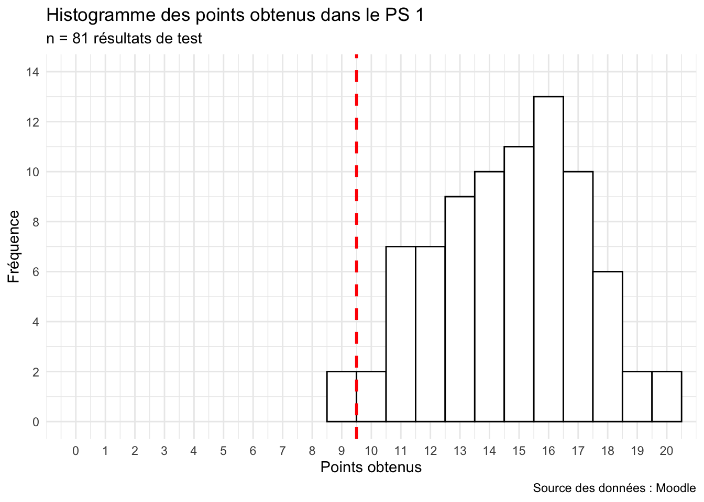
Session 4 | Paquets R, jeux de données intégrés, visualisations I
La session 4 a pour but d’introduire trois éléments fondamentaux en analyse de données avec R :
- Installer et charger des paquets R sur son ordinateur
- Utiliser des jeux de données intégrés en R pour s’entraîner en analyse de données
- Apprendre à utiliser le paquet ggplot2 pour créer des visualisations de données
Les paquets R
À noter
Dans la programmation R, un paquet (angl. package) est un ensemble de fonctions, de données et de code compilé dans un format bien défini.
Les paquets étendent les fonctionnalités de R de base en fournissant des outils supplémentaires pour l’analyse des données, la visualisation, l’apprentissage automatique, la modélisation statistique et beaucoup d’autres applications spécialisées.
Les paquets R peuvent être développés par n’importe qui et partagés gratuitement avec d’autres (open source). Par conséquent, une grande multitude de paquets R sont disponibles.
Notez que la plupart des paquets R doit être installé séparément, normalement depuis le site Comprehensive R Archive Network (CRAN). Dans ce cours, nous nous concentrerons sur deux paquets célèbres :
ggplot2pour créer des visualisations de donnéesdplyrpour manipuler les jeux de données
Tous deux font partie du tidyverse, une collection de paquets conçus pour la science des données. Nous utiliserons également le paquet suivant :
ggthemespour augmenter le design des graphiques
Pour utiliser un paquet R sur votre ordinateur, il faut :
- D’abord installer le paquet en question avec la fonction
install.packages(). Cela peut durer quelques minutes. - Ensuite activer le paquet avec la fonction
library().
Astuce
Dans RStudio, on peut aussi installer les paquets via l’onglet Tools et le menu déroulant : Cliquez sur Install Packages… et cherchez les paquets que vous voulez installer.
Utilisez le code suivant pour installer les paquets R requis pour notre cours. Enlevez les croisillons, éxécutez le code avec install.packages() puis réajouter les croisillons pour éviter de réinstaller les paquets chaque fois que vous éxécutez le code dans votre script ! Activer ensuite les paquets avec library().
# install.packages('tidyverse')
# install.packages('ggthemes')
library(tidyverse)
library(ggthemes)À noter : ggplot2 et dplyr sont installés avec le tidyverse, il ne faut donc plus les installer séparément.
Important
Notez qu’une fois installé, vous n’avez pas besoin de le réinstaller les paquets à chaque fois avec install.packages(). Cependant, vous devez activer tous les paquets R que vous voulez utiliser dans une session avec la commande library(). Sans activation, vous allez recevoir des messages d’erreur.
Certains paquets ont des documentations auxquelles vous pouvez accéder grâce au point d’interrogation. Ces infos sont affichés dans le volet Output sous l’onglet Help.
?ggplot2?dplyr
En ligne, vous pouvez également trouver de nombreuses ressources qui expliquent en détail les fonctionnalités des différents paquets R et vous renvoient vers d’autres livres, tutoriels, cours, etc., p. ex. :
Vous pouvez vérifier quels paquets sont actuellement installés sur votre ordinateur avec la fonction installed.packages() (vous pouvez laisser vide l’espace entre parenthèses) :
installed.packages()Les jeux de données intégrés
Une excellente façon, et probablement la plus efficace, d’apprendre à utiliser R pour l’analyse de données consiste à travailler avec des jeux de données intégrés dans R.
Ces jeux de données exemplaires présentent deux avantages principaux.
- Il est facile d’y accéder et de les charger dans votre session RStudio, car ils sont intégrés à R et à certains de ses paquets.
Cela les distingue fortement des données du “monde réel”, comme les données de questionnaires ou de médias sociaux, qu’il faut souvent d’abord nettoyer et formater, puis importer dans RStudio sous forme de fichiers externes. Avec les jeux de données intégrés, vous pouvez immédiatement commencer l’analyse et la visualisation des données.
- Ces jeux de données ont prouvé leur utilité dans d’innombrables supports d’apprentissage.
Par conséquent, vous pouvez facilement trouver des ressources supplémentaires et des exemples de code à leur sujet.
Dans ce qui suit, nous allons explorer quatre jeux de données classiques de ce type :
irismtcarsdiamondspalmerpenguins
Astuce
Vous pouvez afficher les jeux de données qui sont actuellement accéssible sur votre ordinateur avec la commande data().
le jeu de données iris
Le jeu de données iris est un ensemble de données célèbre qui contient les mesures en centimètres des variables longueur et largeur du sépale, ainsi que longueur et largeur du pétale, pour trois expèces de fleurs d’iris (Setosa, Virginica et Versicolor). Il y a 150 observations en total (50 pour chaque espèce).
Le jeu de données a été rendu célèbre par le statisticien et biologiste britannique Ronald Fisher dans un article scientifique de 1936 qui avait beaucoup d’influence dans le domaine des statistiques. Les données d’iris eux-même ont été récolté par le botaniste Edgar Anderson en 1935 sur la péninsule de Gaspésie au Québéc, Canada.
Plus sur Ronald Fisher
Ronald Fisher (1890-1962) était un statisticien, généticien et biologiste britannique qui a joué un rôle crucial dans le développement de la science statistique moderne. Il est connu pour son travail dans le développement des fondements des méthodes statistiques, incluant l’analyse de variance (ANOVA), le test exact de Fisher et l’estimation du maximum likelihood. Fisher a également apporté des contributions significatives en génétique, où son travail sur la théorie de la sélection naturelle et la génétique des populations a aidé à combler le fossé entre la génétique mendélienne et l’évolution darwinienne. Il est considéré comme l’un des architectes principaux de la synthèse néo-darwinienne. Son influence s’étend au-delà de la statistique et de la génétique aux domaines plus larges de la biologie et de la recherche agricole, faisant de lui une figure pivotale de la science du 20e siècle.

Il y a des statistiques sur trois espèces d’iris dans le jeu de données Source : wikimedia.org

Dans l’apprentissage de R, ce jeu de données est souvent utilisé pour illustrer diverses techniques d’analyse de données, y compris le clustering, la classification et la visualisation.
Explorons un peu le jeu de données iris avec du code !
dim(iris) # Ceci affiche le nombre de lignes et de colonnes)
head(iris) # Affiche les six premières lignes
str(iris) # Informations sur la structure du jeu de données
names(iris) # Affiche les noms des colonnesRegardons ce que ça donne après l’éxécution de chaque ligne de code :
dim(iris)[1] 150 5head(iris) Sepal.Length Sepal.Width Petal.Length Petal.Width Species
1 5.1 3.5 1.4 0.2 setosa
2 4.9 3.0 1.4 0.2 setosa
3 4.7 3.2 1.3 0.2 setosa
4 4.6 3.1 1.5 0.2 setosa
5 5.0 3.6 1.4 0.2 setosa
6 5.4 3.9 1.7 0.4 setosastr(iris)'data.frame': 150 obs. of 5 variables:
$ Sepal.Length: num 5.1 4.9 4.7 4.6 5 5.4 4.6 5 4.4 4.9 ...
$ Sepal.Width : num 3.5 3 3.2 3.1 3.6 3.9 3.4 3.4 2.9 3.1 ...
$ Petal.Length: num 1.4 1.4 1.3 1.5 1.4 1.7 1.4 1.5 1.4 1.5 ...
$ Petal.Width : num 0.2 0.2 0.2 0.2 0.2 0.4 0.3 0.2 0.2 0.1 ...
$ Species : Factor w/ 3 levels "setosa","versicolor",..: 1 1 1 1 1 1 1 1 1 1 ...names(iris)[1] "Sepal.Length" "Sepal.Width" "Petal.Length" "Petal.Width" "Species"
Astuce
Vous pouvez consulter la documentation pour beaucoup de jeux de données avec un point d’interrogation : ?iris().
le jeu de données mtcars
Utilisez le script suivant pour analyser mtcars(lisez également la documentation avec ?mtcars) !
# Chargez le jeu de données mtcars. Il devrait apparaître
# dans l'environnement
data(mtcars)
# Affichez mtcars
mtcars
# vous pouvez explorer mtcars manuellement en double
# cliquant dessus dans l'environnement
# Affichez seulement les six premières observations
head(mtcars)
# Affichez seulement les six dernières observations
tail(mtcars)
# Appliquez quelques autres commandes pour explorer ce jeu
# de données
class(mtcars)
dim(mtcars)
str(mtcars)
summary(mtcars)
glimpse(mtcars) # cette commande marche seulement si vous avez activé le tidyverse
# Extraire la colonne mpg ('miles per gallon') avec le
# signe $ et calculer la moyenne, la médianne, le minimum
# et le maximum
mtcars$mpg
mean(mtcars$mpg)
median(mtcars$mpg)
min(mtcars$mpg)
max(mtcars$mpg)_L_2-door_sedan_(20538771443).jpg)
Un des modèles de mtcars : Le Toyota Corolla de 1974. Source : wikimedia.org
le jeu de données diamonds
C’est maintenant à vous d’explorer ce jeu de données avec du code !
Utilisez également ?diamonds() !

Qu’est-ce qui définit le prix d’un diamant ? Source : wikimedia.org
Introduction aux visualisations avec ggplot2
À noter
ggplot2, qui fait partie du tidyverse, est un paquet de visualisation de données très populaire dans R. Il a été conçu pour faciliter la création de graphiques complexes et multicouches avec une syntaxe cohérente et consistante nommée grammar of graphics.
ggplot2 est donc un acronyme formé à partir des mots grammar of graphics plots (français : grammaire des graphiques). Le “2” dans ggplot2 indique simplement la deuxième génération de ce paquet R.
Avec ggplot2, les utilisateurs peuvent construire des graphiques de manière incrémentale en ajoutant des couches, ce qui le rend flexible pour une large gamme de besoins graphiques. Cela permet de créer des visualisations hautement personnalisables et esthétiquement attrayantes, allant de simples diagrammes de dispersion à des figures multi-panneaux complexes.
Le tableau suivant décrit les couches d’un graphique ggplot :
| Couche | Déscription/Variables | Obligatoire ? |
|---|---|---|
| data | le jeu de données que nous voulons visualiser | oui |
| aesthetics | le mapping de nos variables : axes x et y, color, fill, alpha, line width, etc. | oui |
| geometries | le type visuel du graphique : point, line, histogram, bar, boxplot | oui |
| themes | Le design du graphique | non |
| Autres couches optionelles : facets, statistics, coordinates | Pour des visualisations plus complexes | non |
Pour comprendre comment cela fonctionne, voici un exemple de code dans lequel les différentes couches d’un graphique ggplot sont ajoutées étape par étape dans la fonction ggplot(). (Normalement, nous ne procéderions pas ainsi, mais utiliserions directement le code en entier pour créer le graphique).
Le but dans cet exemple est de visualiser le jeu de données diamonds pour comprendre la relation entre les variables price (prix) et carat (poids) des diamants dans le jeu de données !
À noter
Important : avant d’analyser un ensemble de données, il faut toujours acquérir des connaissances contextuelles sur ce que les données représentent.
Dans notre exemple, il s’agit de diamants. Dans le monde des diamants, il est important de comprendre qu’il existe quatre critères de qualité qui déterminent la valeur (donc le prix) d’un diamant. Ce sont les suivants :
La taille (angl. cut)
La pureté (clarity)
La couleur (color)
Le poids en carats (carat)
En anglais, on parle donc aussi des 4C. Le jeu de données diamonds contient précisément ces variables.
# La première couche, data, définit le jeu de données
ggplot(data = diamonds)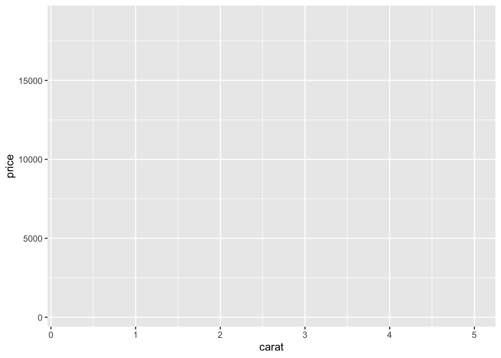
Notre graphique n’est pour l’instant qu’une zone grise ! Catastrophe ? Bien sûr que non 😀. Nous devons maintenant définir les autres paramètres de la fonction ggplot() !
# La deuxième couche, aesthetics, définit le mapping de nos
# variables sur les axes y et x
ggplot(data = diamonds, mapping = aes(x = carat, y = price))
La zone grise a maintenant reçu des unités pour ses axes x (carat) et y (price). Mais il n’y a toujours pas de données affichées !
# La troisième couche, geometries, définit le type visuel
# de notre graphique
ggplot(data = diamonds, mapping = aes(x = carat, y = price)) +
geom_point()Ouf, si vous avez exécuté le dernier code, vous avez maintenant 53 940 points de données affichées dans votre graphique ! Car il y a tant d’observations dans le jeu de données diamonds.
Bon courage si vous avez un vieil ordinateur, cela peut prendre un certain temps avant que R ne produise le graphique…
Mais jetons un coup d’œil au graphique. Qu’est-ce qui saute aux yeux, pouvez-vous déjà identifier des tendances ?
# On peut maintenant encore optimiser notre graphique
ggplot(data = diamonds, mapping = aes(x = carat, y = price, color = clarity)) +
geom_point()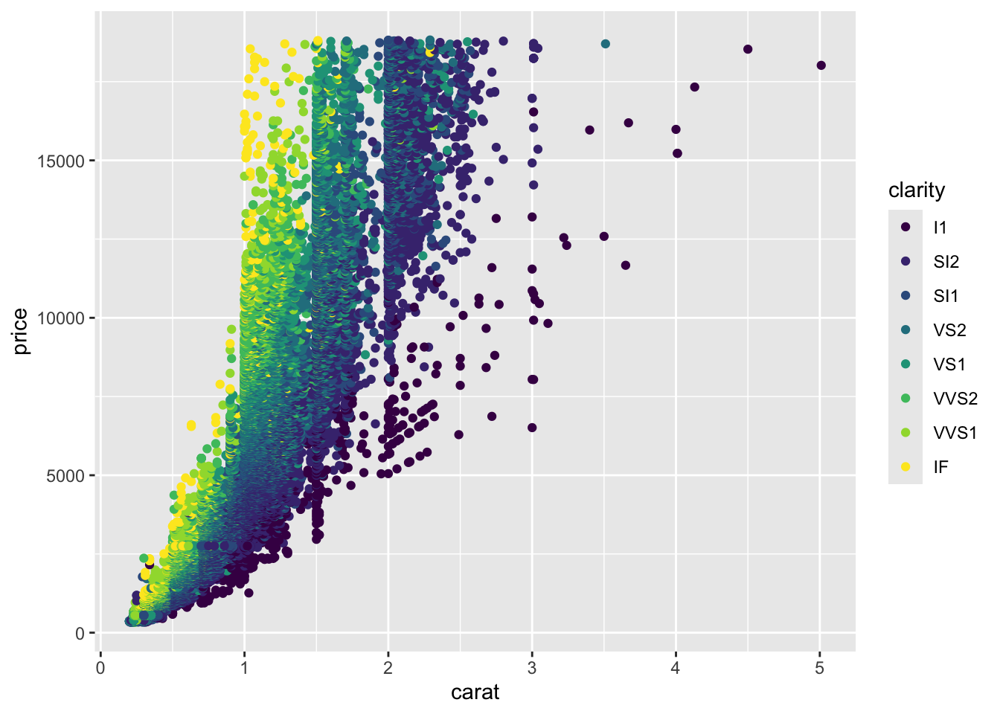
Vous avez remarqué ce qui a changé dans le code ?
# Ajoutons encore une couche optionnelle mais utile au
# graphique : labs() nous permet d'ajouter et de
# personnaliser des titres, sout-titres, titre d'axes,
# titres de légendes, etc. !
ggplot(data = diamonds, mapping = aes(x = carat, y = price, color = clarity)) +
geom_point() + labs(title = "La relation entre prix et carat des diamants",
subtitle = "n = 53 940 diamants", y = "Prix", x = "Carat",
colour = "Pureté")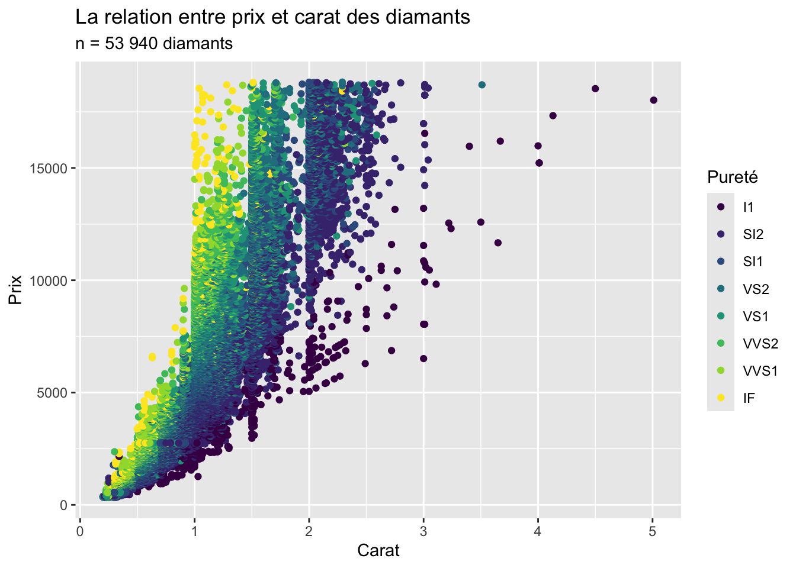
Maintenant il s’agit d’interpréter le graphique. Que nous dit-il sur la relation entre prix et carats des diamants ? Quel rôle joue la variable pureté (clarity)?
Devoir pour Session 5
Exécutez toutes les sections de code de la session 4 sur votre ordinateur.
Entraînez-vous à ouvrir un nouveau script R, à définir un répertoire de travail et à enregistrer le script dans un dossier sur votre ordinateur.
Assurez-vous que le paquet R
tidyverseest installé correctement sur votre ordinateur.Utilisez le code R de manière autonome pour explorer le jeu de données
diamonds. Vous devez être en mesure de comprendre et d’expliquer comment il est structuré (nombre d’observations n, unité statistique, variables, origine des données, etc).
Session 5 | Visualisations II
La session 5 a pour but d’approfondir les techniques de visualisation de données avec le paquet ggplot2, notamment la création des types de graphique suivants :
- Les nuages de points (angl. scatter plots)
- Les diagrammes à barres (angl. bar plots)
- Les histogrammes (angl. histograms)
- Les boîtes à moustaches (angl. box plots)
# N'oubliez pas de charger les paquets tidyverse et
# ggthemes ! Exécutez le code suivant pour le faire :
library(tidyverse)
library(ggthemes)1. Les nuages de points (angl. scatter plots)
Commençons par le nuage de points, que nous avons déjà vu lors de la dernière session, lorsque nous avons visualisé la relation entre les carats et les prix dans le jeu de données diamonds.
À noter
Un nuage de points (aussi appelé diagramme de dispersion) est utilisé dans ggplot2 pour représenter les valeurs de deux variables numériques différentes par des points, avec une variable sur l’axe des X et l’autre sur l’axe des Y.
Ce type de graphique est idéal pour l’analyse exploratoire de données, permettant d’observer les relations entre les variables, de détecter des tendances, des regroupements, des valeurs êxtremes (angl. outliers) ou de vérifier des hypothèses de corrélation.
Dans la fonction ggplot(), un scatter plot est créé avec la couche géométrique geom_point().
Créons un nuage de points avec le jeu de données iris, en comparant les longueurs et les largeurs des sépales des iris (les variables Sepal.Length et Sepal.Width).
Notez que, dans le code suivant, nous ne créons pas directement un graphique ggplot mais nous stockons le graphique comme un objet dans l’environnement, nommé p1, que nous pouvons ensuite afficher avec la fonction print(). Nous verrons dans un instant pourquoi cette pratique est utile.
# nuage de points basique pour comparer la longueur et la
# largeur des sépales des iris
np1 <- ggplot(data = iris, mapping = aes(x = Sepal.Length, y = Sepal.Width)) +
geom_point() + labs(title = "Sepal length and width in the iris dataset")
print(np1)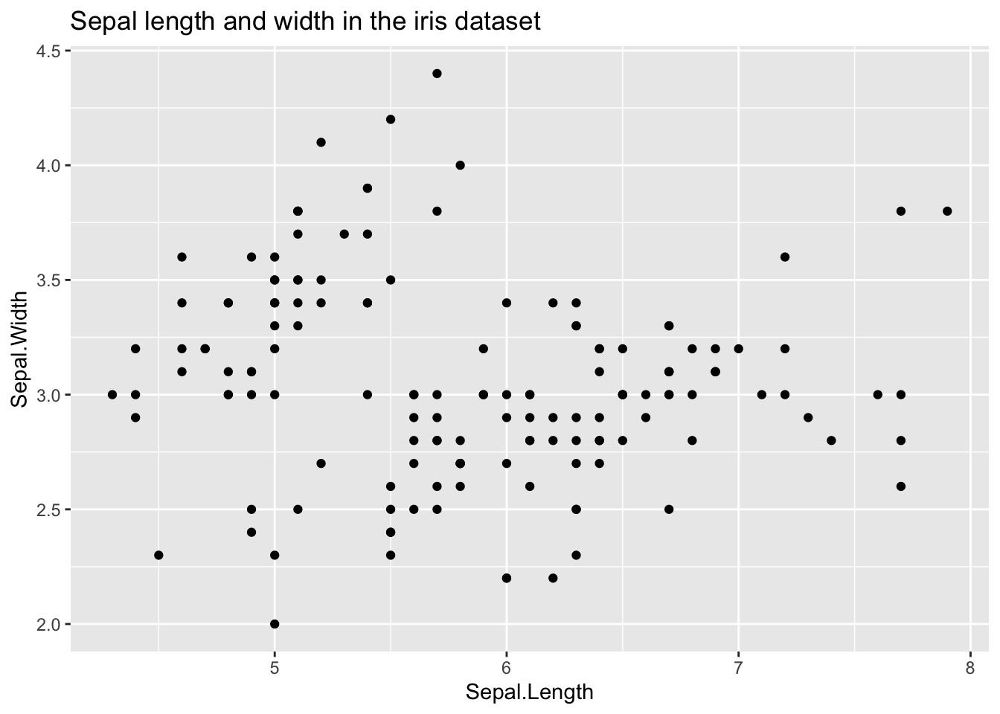
Nous pouvons ajouter des couches à l’objet np1 sans l’écraser, p. ex. une ligne de régression linéaire avec geom_smooth(method = lm) :
np1 + geom_smooth(method = lm)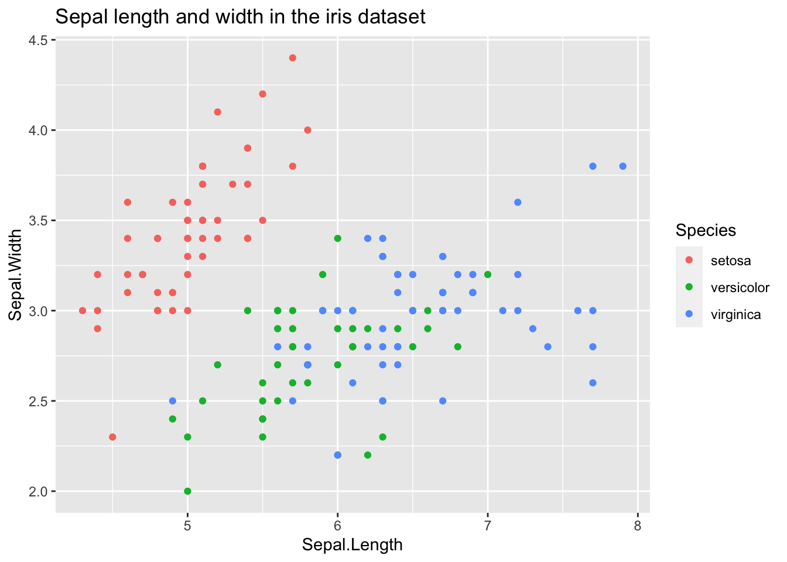
Que nous indique la ligne de régression ? En principe, elle indique une correlation légèrement négative entre les variables Sepal.Lengthet Sepal.Width ! (la zone grise autour de la ligne bleue indique une marge d’erreur).
Cela signifie que les iris dont les sépales sont plus longs ont tendance à avoir des sépales un peu moins larges ! Gardez cette constatation à l’esprit pour les étapes de codage suivantes.
# Ecrasons np1 en changeant un peu le code. Découvrez
# vous-même ce qui a changé dans le code !
np1 <- ggplot(iris, aes(x = Sepal.Length, y = Sepal.Width, color = Species)) +
geom_point() + labs(title = "Sepal length and width in the iris dataset")
print(np1)
Vous pouvez voir dans le graphique que nous pouvons maintenant différencier les trois espèces d’iris. La dispersion des points semble moins aléatoire, ce qui permet de voir des groupes de points appartenant à l’une ou l’autre espèce (angl. cluster).
Maintenant, ajoutons à nouveau une couche geom_smooth() à l’objet np1 !
np1 + geom_smooth(method = lm)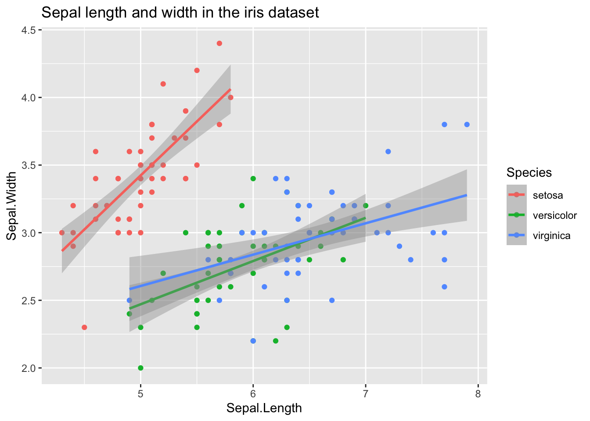
Les trois lignes de régression (une pour chaque type d’iris) montrent maintenant un tout autre résultat : en effet, la corrélation entre Sepal.Length et Sepal.Width est clairement positive.
Cette constatation est un exemple d’analyse exploratoire des données, rendue possible par les possibilités de visualisation de ggplot2.
2. Les diagrammes à barres
À noter
Les diagrammes à barres dans R avec ggplot2 sont utilisés pour représenter visuellement des données catégorielles, permettant de comparer des quantités entre différentes catégories.
On les utilise donc souvent pour montrer la fréquence ou la proportion d’observations dans chaque catégorie, ce qui les rend utiles pour analyser des tendances ou des différences au sein de données catégorielles.
Dans la fonction ggplot(), un diagramme à barres est créé avec la couche géométrique geom_bar().
Par exemple, nous pouvons utiliser le code simple suivant pour comparer la fréquence des différentes tailles (angl. cut) dans le jeu de données diamonds. Cette-fois ci, nous sauvegardons et nommons le graphique db1.
db1 <- ggplot(data = diamonds, mapping = aes(x = cut)) + geom_bar()
print(db1)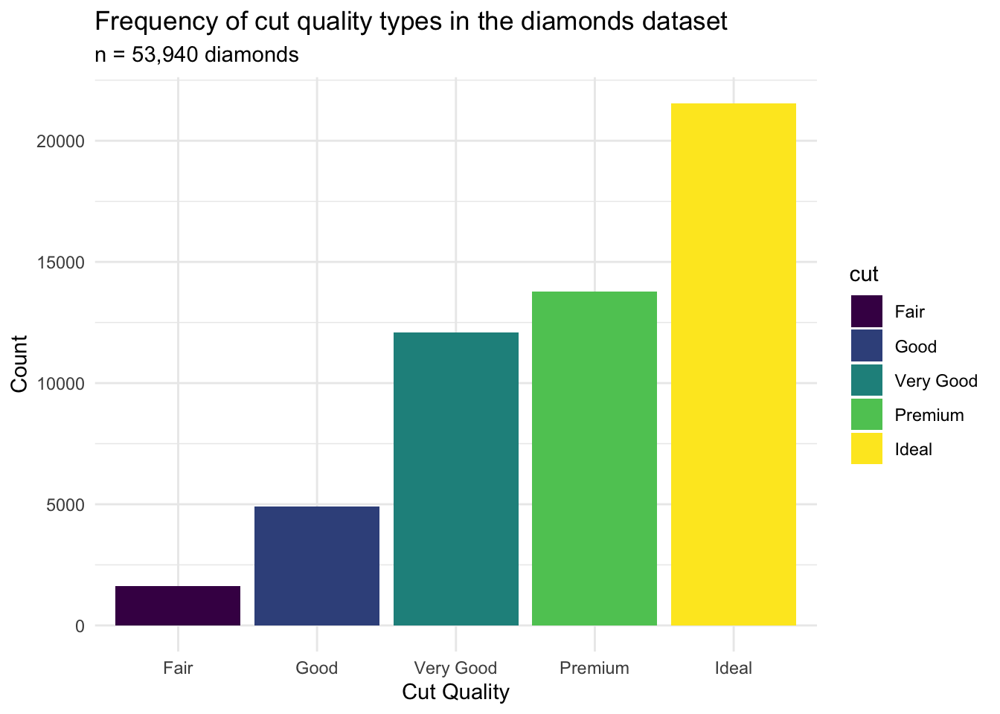
Améliorons le graphique avec des paramètres et des couches supplémentaires de la fonction ggplot() (Notez que nous allons simplement écraser l’objet db1 créé précédemment avec une nouvelle version de db1 !) :
library(ggthemes)
db1 <- ggplot(data = diamonds, mapping = aes(x = cut, fill = cut)) +
geom_bar() + labs(title = "Frequency of cut quality types in the diamonds dataset",
subtitle = "n = 53,940 diamonds", x = "Cut Quality", y = "Count") +
theme_minimal()
print(db1)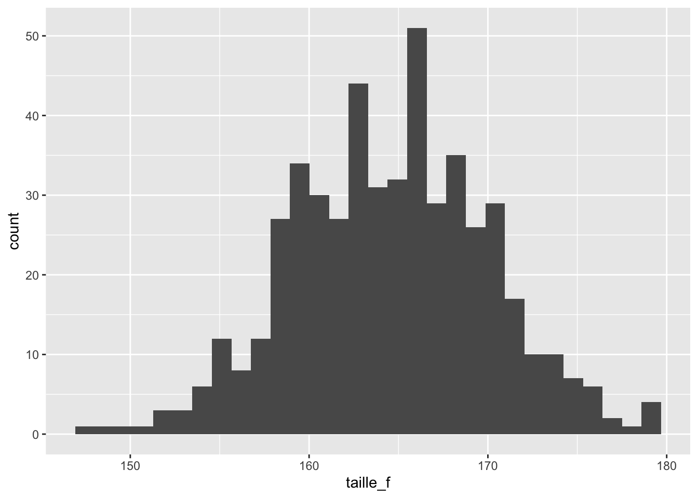
Que nous dit le graphique ? Il est intéressant de constater que dans le jeu de données diamonds, le niveau de qualité le plus élevé de la taille, à savoir ideal, est également le plus fréquent.
Attention
Dans la fonction ggplot(), il y a une différence si vous voulez ajouter de la couleur aux points (qui ont mathématiquement zéro dimension) ou aux surfaces (qui ont deux dimensions), comme dans les diagrammes à barres.
Si vous voulez ajouter de la couleur à une surface, vous devez utiliser l’argument fill = "xyz". L’argument color = "xyz" que nous avons utilisé pour ajouter de la couleur aux nuages de points ne fera qu’ajouter de la couleur à la ligne autour de la surface !
C’est maintenant à vous de jouer !
Reprenez le code que nous avons utilisé pour créer db1 et modifiez-le pour créer un nouvel objet,db2, qui visualise la fréquence des types de qualité de couleur (color) dans le jeu de données diamonds sous la forme d’un diagramme à barres !
3. Les histogrammes
À noter
Un histogramme est un type de graphique utilisé pour représenter la distribution d’une variable numérique à travers des barres.
Un “histogramme sépare les valeurs possibles des données en classes ou groupes. Pour chaque groupe, on construit un rectangle dont la base correspond aux valeurs de ce groupe et la hauteur correspond au nombre d’observations dans le groupe.
L’histogramme a une apparence semblable au graphique à barres verticales, mais il n’y a pas d’écart entre les barres.
En règle générale, l’histogramme possède des barres d’une largeur égale” (Source : Statistique Canada, 2021).
L’histogramme est particulièrement utile pour :
- Analyser la distribution : Comprendre si les données sont normalement distribuées, asymmétriques (angl. skewness), ou si elles présentent un plateau (kurtosis).
- Détecter les valeurs extrêmes : Identifier les données qui s’écartent du reste de l’ensemble des données de manière signifiante.
- Comparer des distributions : Observer comment différentes sous-populations se comparent les unes aux autres en termes de distribution de données.
Avec ggplot2 en R, créer un histogramme se fait avec la couche géometrique geom_histogram(). ggplot2 calcule automatiquement la taille des intervalles (angl. bins) par défaut, mais cela peut être ajusté manuellement en spécifiant l’argument binwidth = xyzdans la fonction geom_histogram(), p. ex. geom_histogram(binwidth = 30).
Avant de créer un histogramme avec le code R, introduisons d’abord une nouvelle fonction : rnorm(). Elle peut être utilisée pour créer des valeurs aléatoires qui suivent une loi normale (angl. normal distribution).
Les arguments que nous pouvons entrer dans la fonction sont :
le nombre
nde valeurs aléatoires que nous voulons créerla moyenne
meande la distribution des valeurs aléatoiresl’écart-type
sdde la distribution des valeurs aléatoires
Notez que par défaut, la fonction utilise mean = 0 et sd = 1, ce qui correspond à une loi normale centrée réduite (angl. standard normal distribution).
Utilisez aussi ?rnorm()pour accéder à plus d’infos.
Astuce
La fonction set.seed() dans R est utilisée pour définir la graine (seed en anglais) du générateur de nombres aléatoires. La graine est un nombre entier qui sert de point de départ pour le générateur de nombres aléatoires.
En définissant une graine spécifique, par exemple avec set.seed(123), vous garantissez que la séquence de nombres aléatoires générée par la suite avec des fonctions telles que rnorm(), sera la même à chaque fois que vous exécuterez le code, ce qui est utile pour la reproductibilité des résultats.
Dans le code R suivant, nous utilisons rnorm() pour simuler les distributions des tailles des hommes et des femmes en Suisse.
Selon un article de 24 heures, en Suisse, les femmes ont une taille moyenne de 164.7 cm tandis que les hommes mesurent 177.4 cm en moyenne. Dans la suite, nous supposons que les écarts-types sont de +- 5.6 cm pour les femmes et de +- 6.1 cm pour les hommes.
# Simulation de tailles de femmes en Suisse Créer 500
# valeurs aléatoires de taille (moyenne = 164.7 et
# écart-type = 5.6) avec la fonction rnorm().
set.seed(123)
taille_f <- rnorm(500, mean = 164.7, sd = 5.6)
head(taille_f)[1] 161.5613 163.4110 173.4288 165.0948 165.4240 174.3044# stocker taille_f comme objet de type 'data.frame'
taille_f <- as.data.frame(taille_f)
# visualiser taille_f avec un histogramme basique
ggplot(data = taille_f, mapping = aes(x = taille_f)) + geom_histogram()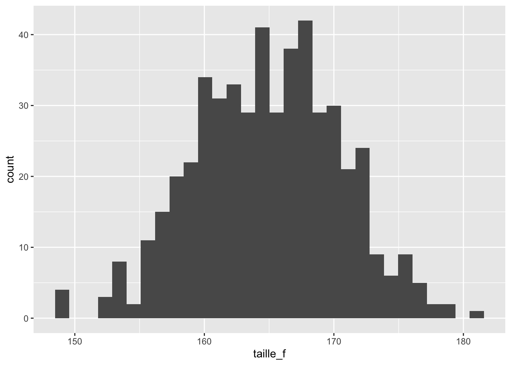
# jouer avec le paramètre 'binwidth' de l'histogramme qui
# définit l'intervalle de la base de ses barres
ggplot(data = taille_f, mapping = aes(x = taille_f)) + geom_histogram(binwidth = 10)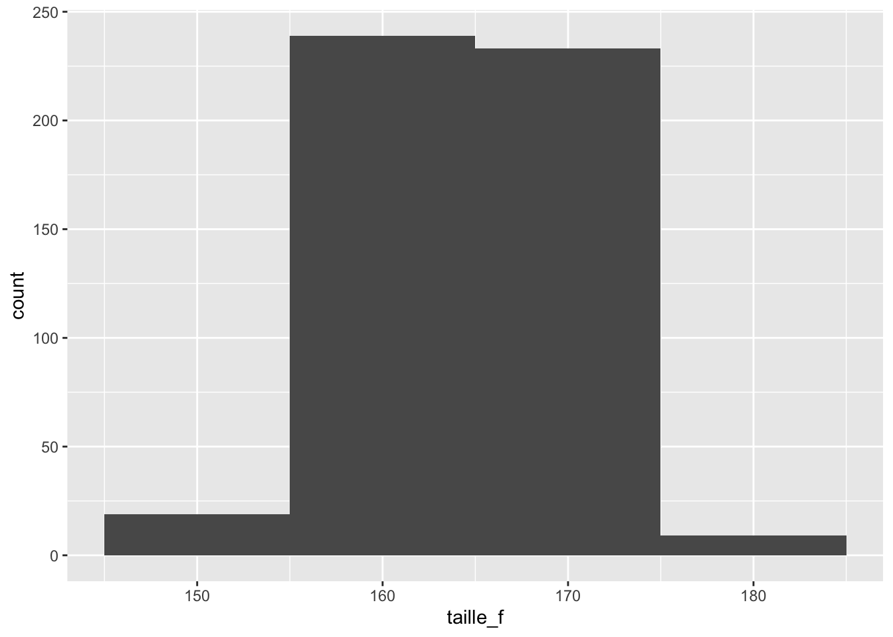
ggplot(data = taille_f, mapping = aes(x = taille_f)) + geom_histogram(binwidth = 0.1)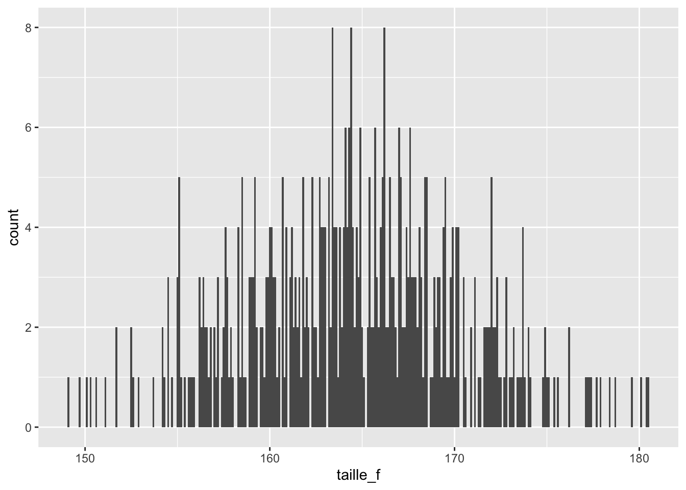
ggplot(data = taille_f, mapping = aes(x = taille_f)) + geom_histogram(binwidth = 1)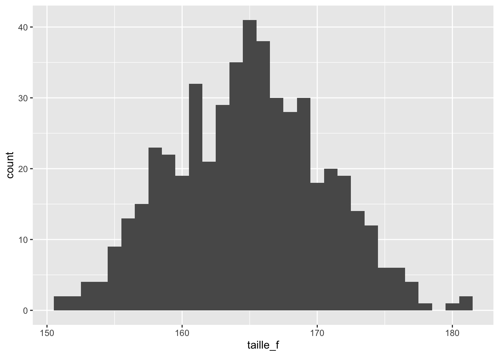
# stocker l'histogramme comme objet, nommé hist1, et
# modifier sa couleur
hist1 <- ggplot(data = taille_f, mapping = aes(x = taille_f)) +
geom_histogram(binwidth = 1, color = "black", fill = "white")
print(hist1)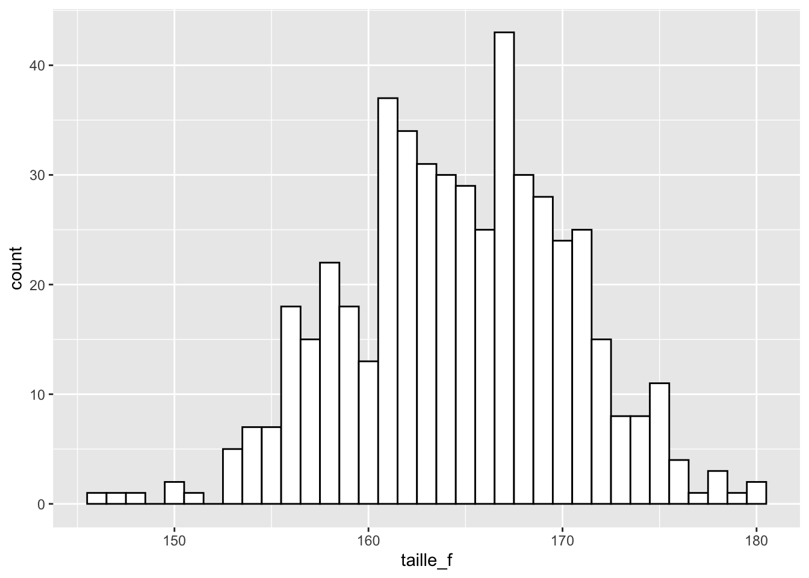
# Ajouter des couches supplémentaires pour améliorer la
# visualisation p. ex. des titres
hist1 <- hist1 + labs(title = "Histogramme des tailles de femmes en Suisse",
subtitle = "Simulation basée sur 500 observations", x = "Taille en cm",
y = "Fréquence") + theme_bw()
print(hist1)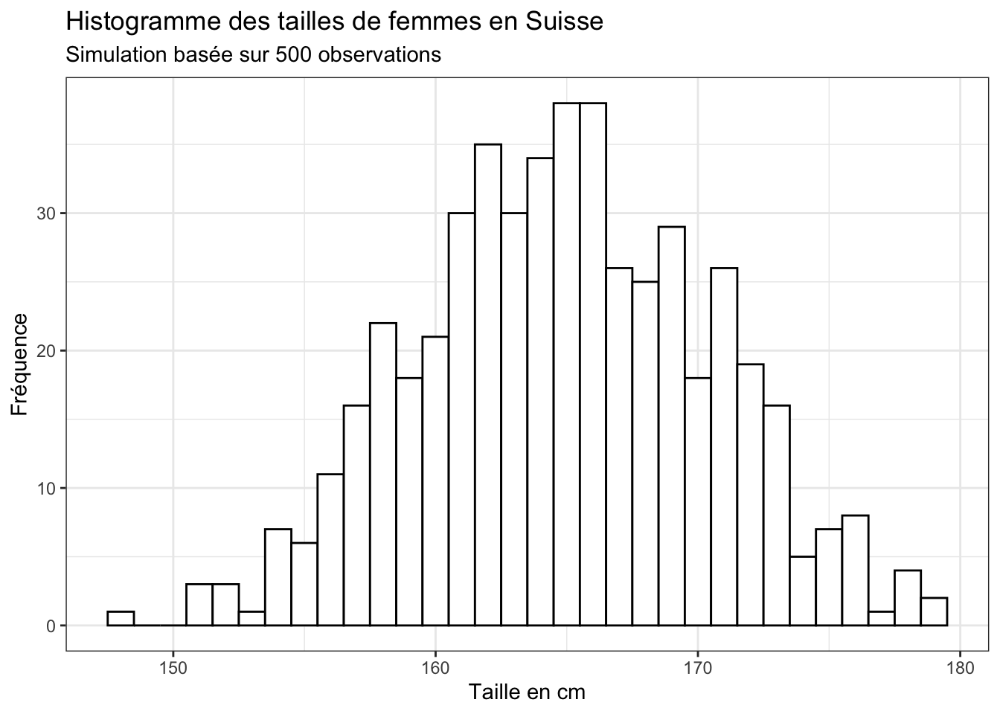
Astuce
Un élément clé des visualisations de données est la couleur. Le document PDF suivant, créé par Ying Wei de l’Université de Columbia à New York, montre et liste les noms des couleurs dans R. Vous pouvez copier-coller le nom d’une couleur et l’utiliser dans votre graphique ggplot2 !
C’est maintenant à vous de jouer !
Reprenez le code que nous avons utilisé pour créer taille_f et hist1 et modifiez-le pour créer une nouvelle simulation de taille d’hommes, taille_h, et un nouveau histogramme qui montre sa distribution, hist2. Jouez avec les paramètres binwidthet la couleur de votre visualisation. Pour cette tâche, vous pouvez supposer que les hommes en Suisse ont une taille moyenne (mean) de 177,4 cm avec un écart-type (sd) de 6,1 cm.
4. Les boîtes à moustaches (angl. boxplots)
À noter
Les boîtes à moustaches, ou boxplots, sont un type de graphique pour représenter la distribution d’un ensemble de données à travers cinq mesures clés :
- le minimum (début de la “moustache” ou point extrême de minimum)
- le premier quartile (Q1 ; début de la boîte)
- la médiane (Q2 ; ligne qui “coupe la boîte en deux”)
- le troisième quartile (Q3 ; fin de la boîte) et
- le maximum (fin de la moustache ou point extrême de maximum)
Ces diagrammes permettent d’identifier rapidement la médiane, l’étendue interquartile (angl. interquartile range = IQR) et les valeurs êxtremes potentielles. Ils sont particulièrement utiles pour comparer les distributions entre plusieurs groupes ou variables.

Le dataset mtcars en R, qui contient des données sur les caractéristiques de différents modèles de voitures, peut être utilisé pour illustrer l’utilisation de boxplots.
Par exemple, pour visualiser la distribution de la consommation de carburant (mpg) des voitures en fonction du nombre de cylindres (cyl), on peut utiliser le code suivant :
# Avant de créer le boxplot, vérifions d'abord la structure
# de mtcars :
str(mtcars)'data.frame': 32 obs. of 11 variables:
$ mpg : num 21 21 22.8 21.4 18.7 18.1 14.3 24.4 22.8 19.2 ...
$ cyl : num 6 6 4 6 8 6 8 4 4 6 ...
$ disp: num 160 160 108 258 360 ...
$ hp : num 110 110 93 110 175 105 245 62 95 123 ...
$ drat: num 3.9 3.9 3.85 3.08 3.15 2.76 3.21 3.69 3.92 3.92 ...
$ wt : num 2.62 2.88 2.32 3.21 3.44 ...
$ qsec: num 16.5 17 18.6 19.4 17 ...
$ vs : num 0 0 1 1 0 1 0 1 1 1 ...
$ am : num 1 1 1 0 0 0 0 0 0 0 ...
$ gear: num 4 4 4 3 3 3 3 4 4 4 ...
$ carb: num 4 4 1 1 2 1 4 2 2 4 ...Nous pouvons constater que la colonne cyl (cylindre) est stockée au format numérique.
C’est un problème, car nous voulons comparer la consommation de carburant des voitures à 4, 6 ou 8 cylindres. Nous devons traiter chacune d’entre elles comme un sous-groupe distinct. Comment faire ?
# Transformons donc cyl en facteur
mtcars$cyl <- as.factor(mtcars$cyl)
# Et maintenant nous pouvons construire notre boxplot
box1 <- ggplot(data = mtcars, aes(x = cyl, y = mpg, fill = cyl)) +
geom_boxplot(alpha = 0.2) + labs(title = "Consommation de carburant (mpg) par nombre de cylindres dans mtcars",
x = "Nombre de cylindres", y = "Miles per gallon (mpg)")
print(box1)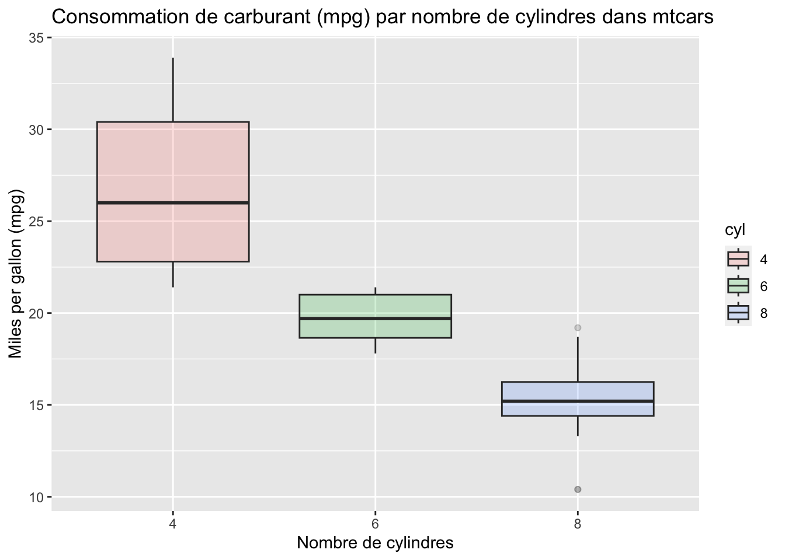
Ce code génère un boxplot, box1, pour chaque groupe de cylindres dans le dataset mtcars, permettant de comparer facilement la consommation de carburant entre les voitures avec un différents nombres de cylindres.
À noter
Le paramètre alpha = 0.2 à l’intérieur de geom_boxplot() rend les boxplots transparents. En général, alpha peut être compris entre 0 (totalement transparent) et 1 (non transparent). C’est un paramètre supplémentaire qui permet de personnaliser votre graphique ggplot2.
On voit dans le graphique des boxplots que dans mtcars, les voitures avec des moteurs ayant plus de cylindres ont aussi tendance à être moins efficaces en termes de consommation de carburant. Il existe toutefois quelques intersections entre les groupes. C’est-à-dire qu’il y a des voitures à 8 cylindres qui sont relativement efficaces en termes de consommation de carburant, surpassant quelques voitures à 6 cylindres, par exemple.
Devoir pour Session 6 (Problem Set 2)
Problem Set 2
Comme le premier Problem Set, le Problem Set 2 est un QCM sur Moodle qui sera accessible pendant 30 minutes du créneau horaire de votre groupe de l’exercice.
Assurez-vous que R et RStudio fonctionnent sur votre ordinateur portable et qu’il a suffisamment de batterie. Il est de votre responsabilité de vous en assurer.
Le Problem Set 2 concernera principalement le contenu des sessions 4 et 5.
Les bases de R qui ont été traitées dans les premières sessions, comme par exemple la création et l’écrasement d’objets avec l’opérateur d’affectation
<-, sont toutefois requises, car la matière se fonde sur ces bases. Veuillez combler vous-même les éventuelles lacunes à ce sujet.
Annonce : Questionnaire
Nous allons évaluer un questionnaire sur votre comportement d’utilisation des médias avec R comme autre élément important du cours.
Le questionnaire est anonyme (même pour l’enseignant) et peut être rempli en ligne via LimeSurvey jusqu’au lundi 31 mars 2025 à 23h59.
Tous les étudiant-e-s ont reçu un lien personnel d’invitation au questionnaire par e-mail (les réponses seront anonymisées et mélangées par le logiciel, l’enseignant ne verra que si les personnes invitées ont répondu au questionnaire avant la date limite).
Chaque étudiant-e qui aura rempli le questionnaire dans les délais recevra un bonus de 2 points dans le Problem Set 4 (10% des points).
Session 6 (Problem Set 2)
Les résultats du Problem Set 2 (bonnes réponses, échelle des notes) sont accéssibles sur la page Moodle de l’exercice.
Voici l’histogramme des points obtenus par n = 65 étudiant-e-s qui ont participé au Problem Set 2 le 26 et 27 mars 2025.
Le nombre maximal de points était de 20, il fallait 10 pour passer le test.
La moyenne des points obtenus était de 12.7 (note = 4.5).
56 étudiant-e-s (86%) ont réussi Problem Set 2.
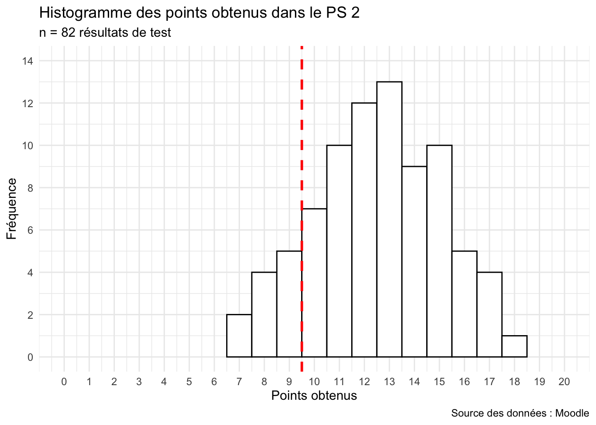
Session 7 | Manipuler les données I
Sujet : Manipuler les données (partie 1)
Le premier but de cette session est d’apprendre à importer des données dans RStudio à partir de fichiers CSV et de les stocker en forme de data frame (format tabulaire).
Le deuxième but est de se familiariser avec dplyr (prononcé “dee-ply-er” en anglais), un paquet du tidyverse conçu pour manipuler les données en forme de data frame.
Contrairement aux jeux de données intégrés à R (tels que diamonds, etc.), la plupart des jeux de données du monde réel nécessitent des transformations avant de pouvoir être analysés et visualisés. À cette fin, nous examinerons également certaines transformations de types de variables et un nouvel opérateur, le %>% (angl. “pipe”; trad. franç. “tuyau”), qui est très utile pour les manipulations de données.
Lire des données auf format CSV dans RStudio
Par la suite, nous alons appliquer dplyr pour manipuler les données d’un jeu de données concret : un fichier CSV nommé igposts.csv. Ce fichier contient des posts Instagram de célébritées qui ont reçu beaucoup d’interactions d’utilisateurs. Pour cette application, il faut d’abord charger ce jeu de données dans notre session RStudio en cours.
À noter
Un fichier de type CSV (angl. comma-separated values) est un format textuel simple pour sauvegarder des données en forme de tableau, c’est à dire avec des valeurs organisé par lignes et colonnes et séparées par virgules.
Le format CSV présente l’avantage d’être assez léger et compatible avec tous les systèmes d’exploitation. En outre, il est utile pour stocker des données quantitatives en sciences sociales, qui se présentent souvent sous forme de tableaux.
Voici un exemple de format CSV simple :
nom, prénom, âge
Leclerc, Antoine, 53
Gomez, Hugo, 25
Nguyen, Laetitia, 19
Que nous pouvons afficher comme tableau (à noter que la première ligne désigne les noms des colonnes) :
| nom | prénom | âge |
|---|---|---|
| Leclerc | Antoine | 53 |
| Gomez | Hugo | 25 |
| Nguyen | Laetitia | 19 |
Avant l’importation de fichier CSV dans RStudio (et comme déjà vu pleins de fois dans le cours 😉), il faut d’abord charger les paquets nécessaire avec library() et définir son répértoire de travail (vous devez adapter les paramètres de setwd() pour qu’il marche sur votre ordinateur) :
library(tidyverse)
setwd("/Users/domus_julian/Documents/GitHub/intro-a-R/code")Pour charger le jeu de données igposts.csv dans RStudio, vous pouvez suivre le processus suivant :
Vous téléchargez le fichier
igposts.csvdepuis le site Moodle du cours (voir matériel de la 7e session).Stockez le fichier
igposts.csvdans le dossier que vous avez définit comme répértoire de travail.Ensuite, vous utilisez le menu intéractif dans RStudio : File -> Import Dataset -> From Text (base)… et choisissez
igposts.csv.Une fenêtre avec des paramètre apparait, que vous pouvez remplir de la manière suivante :
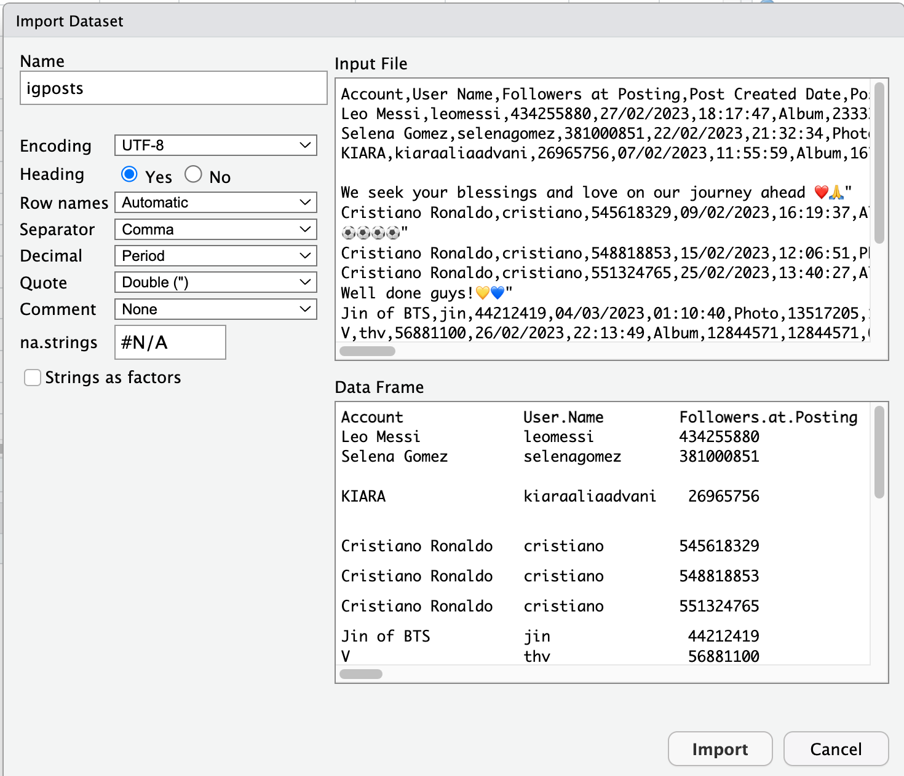
Explications des paramètres :
Encoding = UTF-8 : Indique à RStudio d’utiliser l’encodage de caractères UTF-8 (qui est un standard très répandu), ce qui est important pour lire correctement toutes les lettres (notamment les caractères avec des accents : é, ä, ê, etc.).
Heading = YES : Indique à RStudio que la première ligne du fichier CSV contient les noms des colonnes.
Separator = Comma : Indique à RStudio que les valeurs du tableau sont séparées par des virgules “,” (attention, certains documents francophones utilisent le point-virgule “;” à la place de la virgule, ce qu’il faudrait tenir en compte, si c’était le cas).
Decimal = Period : Indique à RStudio que le point “.” est utilisé pour les décimales (et non la virgule “,” comme c’est souvent le cas dans les documents en français).
na.strings = #N/A : Indique à RStudio que les cellules vides dans le tableau, c’est à dire, les valeurs manquantes, sont désignées par #N/A (cela peut être différent dans d’autres fichiers CSV).
Finalement, vous pouvez copier et coller le code qui apparaît dans la console dans votre script R pour facilement recharger le fichier CSV ultérieurement.
# Par exemple, pour l'ordinateur de l'enseignant, ce code
# est le suivant :
igposts <- read.csv("/Users/domus_julian/Documents/GitHub/intro-a-R/code/igposts.csv",
encoding = "UTF-8", na.strings = "#N/A")
# Si tout a bien marché, l'objet igposts devrait apparaître
# dans votre environnement Nous pouvons afficher la
# structure de igposts pour une première impression :
str(igposts)'data.frame': 100 obs. of 12 variables:
$ Account : chr "Leo Messi" "Selena Gomez" "KIARA" "Cristiano Ronaldo" ...
$ User.Name : chr "leomessi" "selenagomez" "kiaraaliaadvani" "cristiano" ...
$ Followers.at.Posting: int 434255880 381000851 26965756 545618329 548818853 551324765 44212419 56881100 390981561 547708976 ...
$ Post.Created.Date : chr "27/02/2023" "22/02/2023" "07/02/2023" "09/02/2023" ...
$ Post.Created.Time : chr "18:17:47" "21:32:34" "11:55:59" "16:19:37" ...
$ Type : chr "Album" "Photo" "Album" "Album" ...
$ Total.Interactions : int 23333227 20020533 16776082 16501407 14683868 14619124 13517205 12844571 12661694 12639004 ...
$ Likes : int 23075849 19760862 16554530 16317762 14603158 14489506 13517204 12844571 12589553 12558961 ...
$ Comments : int 257378 259671 221552 183645 80710 129618 1 0 72141 80043 ...
$ Views : int 0 0 0 0 0 0 0 10998354 5648190 0 ...
$ URL : chr "https://www.instagram.com/p/CpLxnFlNJZn/" "https://www.instagram.com/p/Co_P7YgrrFO/" "https://www.instagram.com/p/CoXmBSLvj7A/" "https://www.instagram.com/p/CodNx8BL1-X/" ...
$ Description : chr "Gracias a todos los que hicieron posible que ganara este premio. A todos los de la @afaseleccion, a mi familia "| __truncated__ "I deleted this one time because I thought maybe it was too much but eh (taking a break from social)" "“Ab humari permanent booking hogayi hai” \n\nWe seek your blessings and love on our journey ahead ❤️🙏" "Great feeling to have scored 4 goals and reaching my 500th league goal in a very solid win by the team!💪🏼\n⚽️⚽️⚽️⚽️" ...Explorez votre jeu de données importé
Cela nous montre qu’il s’agit d’un data frame avec 100 observations et 12 variables. Chaque ligne représente un post Instagram d’une célébrité (unité statistique) et chaque colonnes une variable différente associé à ce post.
Notez que les variables sont soit de type textuel (chr = “character”; p. ex. Account= le nom du compte Insta qui a publié le post), soit numérique (int = “integer”; p. ex. Total.Interactions = la somme des Likeset Comments qu’un post a reçu).
Vous pouvez aussi cliquer sur l’objet et explorer le tableau manuellement pour le comprendre d’avantage (comme nous l’avons fait avec mtcars, etc.).
Attention
Vous ne devez pas ouvrir les fichiers CSV avec des autres logiciels avant de les importer dans RStudio (par ex. avec Excel), car cela a souvent pour conséquence de modifier automatiquement le format du fichier CSV, ce qui entraîne ensuite des erreurs.
Vous devriez enregistrer le fichier CSV directement dans votre répertoire de travail sans l’ouvrir, puis l’importer dans RStudio à l’aide du menu interactif.
Vous devriez également éviter d’ouvrir le fichier CSV avec des applications ou autres (p. ex. application Moodle), ce qui peut également entraîner des erreurs.
Il est préférable de télécharger les fichiers CSV avec des navigateurs standard tels que Chrome ou Safari.
Avant de continuer avec dplyr, regardons encore deux éléments cruciales pour la manipulation de données avec R :
la transformation du types de variable (p. ex. de variables textuelles en facteurs)
L’opérateur
%>%(angl. “pipe”; trad. française “tuyau”)
La transformation du type de variable
Lorsque l’on analyse des jeux de données, on constate parfois que toutes les variables ne sont pas enregistrées dans un format utile pour l’analyse. Parfois, par exemple, les valeurs numériques sont enregistrées sous forme de texte. Il est alors utile de les transformer dans un format numérique (par exemple avec la fonction as.numeric().
Mais il y a aussi le cas suivant : les variables sous forme de texte ne représentent pas simplement des textes, mais certaines catégories. Dans ce cas, il est judicieux de les transformer en une variable catégorielle, c’est-à-dire un facteur, à l’aide de la fonction as.factor().
Dans notre exemple de jeu de données igposts, qui contient des métriques sur les posts Instagram, nous pouvons justement constater cela. Certes, certaines variables textuelles, telles que URL (le lien vers le post) et Description (le message textuel associé au post Instagram), sont tout à fait pertinentes. D’autres, en revanche, sont des catégories. La plus évidente est la variable Type, qui indique si un post Instagram est une photo, une vidéo ou un album. Factorisons ci-dessous quelques-unes de ces variables catégorielles à l’aide de code :
# Transformons les colonnes 'Account', 'User.Name' et
# 'Type' en facteurs :
igposts$Account <- as.factor(igposts$Account)
igposts$User.Name <- as.factor(igposts$User.Name)
igposts$Type <- as.factor(igposts$Type)
# Vérifier, si ça a marché :
str(igposts)'data.frame': 100 obs. of 12 variables:
$ Account : Factor w/ 38 levels "Anastasia Karanikolaou",..: 24 31 21 7 7 7 16 35 31 7 ...
$ User.Name : Factor w/ 38 levels "agustd","arianagrande",..: 24 30 21 7 7 7 16 35 30 7 ...
$ Followers.at.Posting: int 434255880 381000851 26965756 545618329 548818853 551324765 44212419 56881100 390981561 547708976 ...
$ Post.Created.Date : chr "27/02/2023" "22/02/2023" "07/02/2023" "09/02/2023" ...
$ Post.Created.Time : chr "18:17:47" "21:32:34" "11:55:59" "16:19:37" ...
$ Type : Factor w/ 2 levels "Album","Photo": 1 2 1 1 2 1 2 1 1 2 ...
$ Total.Interactions : int 23333227 20020533 16776082 16501407 14683868 14619124 13517205 12844571 12661694 12639004 ...
$ Likes : int 23075849 19760862 16554530 16317762 14603158 14489506 13517204 12844571 12589553 12558961 ...
$ Comments : int 257378 259671 221552 183645 80710 129618 1 0 72141 80043 ...
$ Views : int 0 0 0 0 0 0 0 10998354 5648190 0 ...
$ URL : chr "https://www.instagram.com/p/CpLxnFlNJZn/" "https://www.instagram.com/p/Co_P7YgrrFO/" "https://www.instagram.com/p/CoXmBSLvj7A/" "https://www.instagram.com/p/CodNx8BL1-X/" ...
$ Description : chr "Gracias a todos los que hicieron posible que ganara este premio. A todos los de la @afaseleccion, a mi familia "| __truncated__ "I deleted this one time because I thought maybe it was too much but eh (taking a break from social)" "“Ab humari permanent booking hogayi hai” \n\nWe seek your blessings and love on our journey ahead ❤️🙏" "Great feeling to have scored 4 goals and reaching my 500th league goal in a very solid win by the team!💪🏼\n⚽️⚽️⚽️⚽️" ...Nous allons voir par la suite, pourquoi ces factorisations sont utiles.
L’opérateur %>%
La fonction principale du pipe %>% : construire une séquence de fonctions (“un tuyau”) qui est plus facile à comprendre et a lire dans le code.
# Par exemple, regardez la fonction suivante : quel est le
# problème ?
log(sqrt(mean(c(1:100))))[1] 1.960987# Le problème est que cette fonction est imbriquée et, à
# cause de cela, difficile à lire
# Avec le pipe, nous pouvons reécrire cette fonction comme
# ça et obtenir le même résultat après exécution du code :
c(1:100) %>%
mean() %>%
sqrt() %>%
log()[1] 1.960987
Astuce
Vous pouvez créer le pipe %>% avec les raccourcis clavier suivants :
Sur Windows : Control + Shift + M
Sur MacOS : Command + Shift + M
De plus, vous pouvez aussi utiliser |> comme opérateur pipe altérnatif (équivalent à %>%).
Vous pouvez déjà constater que travailler avec des jeux de données du monde réel, tels que le jeu de données Instagram igposts, nécessite un travail préparatoire substantiel. Mais rassurez-vous et ne vous découragez pas, plus vous pratiquez, plus cela devient facile et, bientôt, vous serez en mesure de charger facilement des ensembles de données dans RStudio ! Par ailleurs : il est normal de rencontrer des messages d’erreur. C’est une partie essentielle du processus d’apprentissage que de les surmonter en bricolant et en jouant avec vos données et votre code R jusqu’à ce que vous puissiez le faire fonctionner.
Après avoir chargé notre fichier CSV dans RStudio, appliqué des transformations et notre connaissance de l’opérateur pipe, nous pouvons maintenant manipuler les données avec le package dplyr.
Manipuler les données avec dplyr
Le paquet dplyr est basé sur une logique de verbes pour les différents types de manipulation de données, notamment :
Les verbes pour manipuler les données au niveau de colonnes :
select(): pour extraire une ou plusieurs colonnes d’un data frame.mutate(): pour créer une ou plusieurs nouvelles colonnes dans un data frame.
Les verbes pour manipuler les données au niveau de lignes :
filter(): pour filtrer les lignes d’un data frame selon un ou plusieurs critères.arrange(): pour trier les lignes d’un data frame selon un ou plusieurs critères.
Les verbes pour résumer, compter et regrouper les données :
summarize(): pour réduire une ou plusieurs colonnes d’un data frame en une seule ligne, notamment pour résumer des données.count(): pour compter le nombre d’observations d’une ou plusieurs catégories dans un data frame.group_by(): pour regrouper des données d’un data frame selon une ou plusieurs catégories.
Essayons maintenant d’appliquer tout cela avec du code et les données igposts pour comprendre ce que ça veut dire en pratique !
Manipulation de colonnes : select()et mutate()
# select() : fonction pour extraire une ou plusieurs
# colonnes d'un data frame
# Par exemple, nous pouvons extraire les quatres colonnes
# suivantes d'igposts (voir comment le pipe est utilisé) :
igposts %>%
select(Account, Type, Followers.at.Posting, Total.Interactions)
# Avec les deux points dans la fonction select(), vous
# pouvez sélectionner plusieurs colonnes successives. Notez
# que cette fois-ci, nous affichons que les six premières
# lignes avec la fonction head() :
igposts %>%
select(Account:Views) %>%
head()
# Vous pouvez également créer un nouvel objet, df1, qui est
# essentiellement un data frame plus petit que igposts avec
# un sous-ensemble de variables (un tel data frame plus
# petit peut être plus utile à analyser et à afficher) :
df1 <- igposts %>%
select(Account, Type, Followers.at.Posting, Total.Interactions,
URL)
###############################################################################
# mutate() : fonction pour créer une ou plusieurs nouvelles
# colonnes dans un data frame
# Par exemple, nous pouvons créer une nouvelle colonne qui
# compte le nombre d'interactions par follower :
df1 %>%
mutate(TI_par_Follower = Total.Interactions/Followers.at.Posting)
# Attention, sans opérateur <-, nous ne changeons pas
# l'objet df1 ! Pour ce faire et sauvegarder notre
# nouvelle colonne, nous pouvons écraser df1 avec une
# nouvelle vérsion de df1 :
df1 <- df1 %>%
mutate(TI_par_Follower = Total.Interactions/Followers.at.Posting)
str(df1)Manipulation de lignes avec filter() et arrange()
# filter() : fonction pour filtrer les lignes selon un ou
# plusieurs critères
# Pour filtrer pour une valeur spécifique d'une variable,
# p.ex. les posts de Cristiano Ronaldo :
df1 %>%
filter(Account == "Cristiano Ronaldo")
# Pour plusieurs valeurs spécifique de la même variable, p.
# ex. les posts de Ronaldo et Messi :
df1 %>%
filter(Account %in% c("Cristiano Ronaldo", "Leo Messi"))
# Pour plusieurs valeurs spécifiques de variables
# différentes, p. ex. les posts de type Photo de Ronaldo :
df1 %>%
filter(Account == "Cristiano Ronaldo", Type == "Photo")
# Filtrer à partir de valeurs numériques, p. ex. les posts
# avec au moins 10 millions d'intéractions :
options(scipen = 999) # Cette commande désactive la notation scientifique des nombres
df1 %>%
filter(Total.Interactions >= 1e+07)
# Filtrer pour les posts de Selena Gomez avec au moins 10
# millions d'intéractions :
df1 %>%
filter(Account == "Selena Gomez", Total.Interactions >= 1e+07)
###############################################################################
# arrange() : fonction pour trier les lignes selon un ou
# plusieurs critères
# Trier des valeurs/facteurs textuelles par ordre
# alphabétique :
df1 %>%
arrange(Account) %>%
head(10)
# Trier par le nombre d'intéractions (ordre croissant)
df1 %>%
arrange(Total.Interactions) %>%
head(10)
# Trier par le nombre d'intéractions par follower (ordre
# décroissant)
df1 %>%
arrange(desc(TI_par_Follower)) %>%
head(10)Résumer, compter et regrouper avec summarize(), count() et group_by()
# summarize() : fonction qui réduit une ou plusieurs
# colonnes en une seule ligne, notamment pour résumer des
# données
# Nous pouvons, par exemple, résumer la somme totale de
# Total.Interactions dans notre ensemble de données. Ce
# nombre est assez impressionnant et constitue une
# caractéristique importante de notre ensemble de données.
df1 %>%
summarize(sum_TI = sum(Total.Interactions))
# Nous pouvons aussi calculer les moyennes des intéractions
# et de followers de tout les comptes qui ont publié les
# posts :
df1 %>%
summarize(mean_TI = mean(Total.Interactions), mean_Followers = mean(Followers.at.Posting))
###############################################################################
# count() : fonction qui compte le nombre d'observations
# d'une ou plusieurs catégories
# Compter l'occurence des types de posts Instagram (Photo
# et Album, dans ce cas) dans notre jeu de données :
df1 %>%
count(Type)
# Compter l'occurence des différents comptes dans notre jeu
# de données :
df1 %>%
count(Account)
# Compter l'occurence des différents comptes dans notre jeu
# de données en les triant par cette occurence de manière
# décroissante (avec le paramètre arrange(-n)) :
df1 %>%
count(Account) %>%
arrange(-n) %>%
head(10)
###############################################################################
# group_by() : fonction qui regroupe des données selon une
# ou plusieurs catégories
# Regroupement par type de post et comparaison du nombre
# moyen d'interactions par type de post :
df1 %>%
group_by(Type) %>%
summarize(mean_TI = mean(Total.Interactions))
# En utilisant le paramètre n=n() dans la fonction
# summarize(), nous pouvons également compter le nombre
# d'observations dans chaque catégorie :
df1 %>%
group_by(Type) %>%
summarize(n = n(), mean_TI = mean(Total.Interactions))
# Utilisons plusieurs verbes dplyr pour trouver les 10
# comptes qui apparaissent le plus fréquemment dans nos
# ensembles de données de posts Instagram. Nous résumons
# également leur nombre moyen de followers et
# d'interactions.
df1 %>%
group_by(Account) %>%
summarize(n = n(), mean_Followers = mean(Followers.at.Posting),
mean_TI = mean(Total.Interactions)) %>%
arrange(desc(n)) %>%
head(10)
# Utilisons plusieurs verbes dplyr pour comparer les Likes
# et Comments des posts de Ronaldo et Messi :
igposts %>%
group_by(Account) %>%
filter(Account %in% c("Cristiano Ronaldo", "Leo Messi")) %>%
summarize(n = n(), mean_Followers = mean(Followers.at.Posting),
mean_Likes = mean(Likes), mean_Comments = mean(Comments))Devoir pour Session 8 et infos questionnaire
- Assurez-vous que vous pouvez charger correctement le fichier de données igposts.csv dans votre session R active.
- Nous téléchargerons désormais régulièrement des fichiers CSV avec des jeux de données, c’est pourquoi ce processus doit fonctionner sur votre ordinateur portable. (Cela s’applique également aux Problem Sets 3 et 4).
- Questionnaire : Merci à toutes et tous les étudiant-e-s qui ont rempli le questionnaire avant la date limite (31 mars 2025). Vous recevrez 2 points bonus dans le Problem Set 4. Ceux-ci seront ajoutés séparément à la fin du cours, lorsque la note finale sera déterminée.
- Nous commencerons bientôt à évaluer les données du questionnaire dans l’exercice.
- Si vous avez rencontré des difficultés lors des deux premiers Problem Sets, assurez-vous que vous pouvez exécuter correctement sur votre ordinateur portable tout le code R traité jusqu’à présent dans le cours et que vous comprenez bien toutes les étapes. Nous vous rappellons que tout le contenu de la page GitHub et de la page Moodle du cours est pertinent pour les Problem Sets (pas seulement ce qui a été discuté en classe).
Session 8 | Manipuler les données II
Sujet : Manipuler les données (partie 2)
L’objectif de la session 8 est de vous entraîner à résoudre de manière autonome des problèmes de manipulation de données à l’aide du code R et de vous préparer ainsi au Problem Set 3.
Les exercices suivants se composent d’une question et d’une solution modèle sous forme de code R. Notez qu’en programmation R, il y a souvent plusieurs solutions pour arriver à la réponse correcte.
Conseil
Pour un meilleur effet d’apprentissage : essayez d’abord de résoudre la question avec votre propre script R sans consulter immédiatement la solution modèle. Comparez ensuite votre propre code avec celui de la solution modèle.
Exercices avec solutions
0 : Préparez-vous pour l’exercice
Commencez en ouvrant un nouveau script R.
Nommez le
script_session_8et sauvegardez le sur votre ordinateur. (Définissez votre répértoire de travail avecsetwd()et sauvegardez le code de la console dans le script).Chargez le paquet tidyverse avec
library(tidyverse).
1 : mtcars I
- Affichez la structure de
mtcarsavecstr(mtcars). - Sélectionnez ensuite les colonnes
mpgetcyldemtcarsavecdplyr.
Solution
str(mtcars)
mtcars %>%
select(mpg, cyl)2 : mtcars II
Filtrez mtcars pour
mpg >= 25!Combien de modèles de voitures dans
mtcarsrépondent à ce critère ?
Solution
mtcars %>%
filter(mpg >= 25) mpg cyl disp hp drat wt qsec vs am gear carb
Fiat 128 32.4 4 78.7 66 4.08 2.200 19.47 1 1 4 1
Honda Civic 30.4 4 75.7 52 4.93 1.615 18.52 1 1 4 2
Toyota Corolla 33.9 4 71.1 65 4.22 1.835 19.90 1 1 4 1
Fiat X1-9 27.3 4 79.0 66 4.08 1.935 18.90 1 1 4 1
Porsche 914-2 26.0 4 120.3 91 4.43 2.140 16.70 0 1 5 2
Lotus Europa 30.4 4 95.1 113 3.77 1.513 16.90 1 1 5 2# Six modèles de voitures ont une valeur mpg d'au moins 25
# dans mtcars.3 : mtcars III
- Triez
mtcarsparmpgdans l’ordre décroissant !
Solution
mtcars %>%
arrange(desc(mpg)) mpg cyl disp hp drat wt qsec vs am gear carb
Toyota Corolla 33.9 4 71.1 65 4.22 1.835 19.90 1 1 4 1
Fiat 128 32.4 4 78.7 66 4.08 2.200 19.47 1 1 4 1
Honda Civic 30.4 4 75.7 52 4.93 1.615 18.52 1 1 4 2
Lotus Europa 30.4 4 95.1 113 3.77 1.513 16.90 1 1 5 2
Fiat X1-9 27.3 4 79.0 66 4.08 1.935 18.90 1 1 4 1
Porsche 914-2 26.0 4 120.3 91 4.43 2.140 16.70 0 1 5 2
Merc 240D 24.4 4 146.7 62 3.69 3.190 20.00 1 0 4 2
Datsun 710 22.8 4 108.0 93 3.85 2.320 18.61 1 1 4 1
Merc 230 22.8 4 140.8 95 3.92 3.150 22.90 1 0 4 2
Toyota Corona 21.5 4 120.1 97 3.70 2.465 20.01 1 0 3 1
Hornet 4 Drive 21.4 6 258.0 110 3.08 3.215 19.44 1 0 3 1
Volvo 142E 21.4 4 121.0 109 4.11 2.780 18.60 1 1 4 2
Mazda RX4 21.0 6 160.0 110 3.90 2.620 16.46 0 1 4 4
Mazda RX4 Wag 21.0 6 160.0 110 3.90 2.875 17.02 0 1 4 4
Ferrari Dino 19.7 6 145.0 175 3.62 2.770 15.50 0 1 5 6
Merc 280 19.2 6 167.6 123 3.92 3.440 18.30 1 0 4 4
Pontiac Firebird 19.2 8 400.0 175 3.08 3.845 17.05 0 0 3 2
Hornet Sportabout 18.7 8 360.0 175 3.15 3.440 17.02 0 0 3 2
Valiant 18.1 6 225.0 105 2.76 3.460 20.22 1 0 3 1
Merc 280C 17.8 6 167.6 123 3.92 3.440 18.90 1 0 4 4
Merc 450SL 17.3 8 275.8 180 3.07 3.730 17.60 0 0 3 3
Merc 450SE 16.4 8 275.8 180 3.07 4.070 17.40 0 0 3 3
Ford Pantera L 15.8 8 351.0 264 4.22 3.170 14.50 0 1 5 4
Dodge Challenger 15.5 8 318.0 150 2.76 3.520 16.87 0 0 3 2
Merc 450SLC 15.2 8 275.8 180 3.07 3.780 18.00 0 0 3 3
AMC Javelin 15.2 8 304.0 150 3.15 3.435 17.30 0 0 3 2
Maserati Bora 15.0 8 301.0 335 3.54 3.570 14.60 0 1 5 8
Chrysler Imperial 14.7 8 440.0 230 3.23 5.345 17.42 0 0 3 4
Duster 360 14.3 8 360.0 245 3.21 3.570 15.84 0 0 3 4
Camaro Z28 13.3 8 350.0 245 3.73 3.840 15.41 0 0 3 4
Cadillac Fleetwood 10.4 8 472.0 205 2.93 5.250 17.98 0 0 3 4
Lincoln Continental 10.4 8 460.0 215 3.00 5.424 17.82 0 0 3 44 : mtcars IV
Créez une nouvelle variable (colonne) dans mtcars, nommé
mpg_wt, définie comme le nombre dempgpar unité de poids (wt) !Sauvegardez la vérsion modifiée de
mtcarsavec l’opérateur d’affectation sous l’objetmtcars_v2.Affichez la nouvelle colonne
mpg_wtdemtcars_v2en la triant par ordre décroissant !Quel modèle de voiture de
mtcarsest le plus économe en carburant par rapport à son poids ?
Solution
mtcars_v2 <- mtcars %>%
mutate(mpg_wt = mpg/wt)
mtcars_v2 %>%
select(mpg_wt) %>%
arrange(desc(mpg_wt)) mpg_wt
Lotus Europa 20.092531
Honda Civic 18.823529
Toyota Corolla 18.474114
Fiat 128 14.727273
Fiat X1-9 14.108527
Porsche 914-2 12.149533
Datsun 710 9.827586
Toyota Corona 8.722110
Mazda RX4 8.015267
Volvo 142E 7.697842
Merc 240D 7.648903
Mazda RX4 Wag 7.304348
Merc 230 7.238095
Ferrari Dino 7.111913
Hornet 4 Drive 6.656299
Merc 280 5.581395
Hornet Sportabout 5.436047
Valiant 5.231214
Merc 280C 5.174419
Pontiac Firebird 4.993498
Ford Pantera L 4.984227
Merc 450SL 4.638070
AMC Javelin 4.425036
Dodge Challenger 4.403409
Maserati Bora 4.201681
Merc 450SE 4.029484
Merc 450SLC 4.021164
Duster 360 4.005602
Camaro Z28 3.463542
Chrysler Imperial 2.750234
Cadillac Fleetwood 1.980952
Lincoln Continental 1.917404# Le Lotus Europa est le plus économe en carburant par
# rapport à son poids.5 : diamonds I
- Affichez encore une fois
str(diamonds)! - Utilisez des verbes
dplyrpour compter le nombre de diamants dansdiamondsqui pèsent plus de 3 carats !
Solution
diamonds %>%
count(carat > 3)# A tibble: 2 × 2
`carat > 3` n
<lgl> <int>
1 FALSE 53908
2 TRUE 32# Solution alternative :
diamonds %>%
filter(carat > 3) %>%
count()# A tibble: 1 × 1
n
<int>
1 32# Le critère carat > 3 s'applique à 32 diamants dans
# diamonds.6 : diamonds II
- Calculez le prix moyen en USD des diamants dans
diamonds!
Solution
diamonds %>%
summarize(prix_moyen = mean(price))# A tibble: 1 × 1
prix_moyen
<dbl>
1 3933.# Solution alternative (sans dplyr) :
mean(diamonds$price)[1] 3932.87 : diamonds III
- Calculez le prix moyen en USD des diamants des différentes catégories de pureté (
clarity) dansdiamonds! - Triez le résultat par ordre décroissant des prix moyens
- Quelle catégorie de pureté est la plus chère en moyenne dans
diamonds?
Solution
diamonds %>%
group_by(clarity) %>%
summarize(prix_moyen = mean(price)) %>%
arrange(desc(prix_moyen))# A tibble: 8 × 2
clarity prix_moyen
<ord> <dbl>
1 SI2 5063.
2 SI1 3996.
3 VS2 3925.
4 I1 3924.
5 VS1 3839.
6 VVS2 3284.
7 IF 2865.
8 VVS1 2523.# Avec un prix par diamant de 5063 USD en moyenne, la
# catégorie de pureté SI2 est la plus chère dans diamonds.8 : mtcars V
- Regroupez mtcars par
gear, puis, à l’aide desummarize(), calculezn, la médiane et la variance de mpg.
Solution
mtcars %>%
group_by(gear) %>%
summarize(n = n(), median_mpg = median(mpg), var_mpg = var(mpg))# A tibble: 3 × 4
gear n median_mpg var_mpg
<dbl> <int> <dbl> <dbl>
1 3 15 15.5 11.4
2 4 12 22.8 27.8
3 5 5 19.7 44.39 : iris I
- Sélectionner
Petal.Length,Petal.Width, etSpeciesdansiris. - Ensuite, utilisez
mutate()pour créer une nouvelle colonne, appeléePetal.Surface, qui est le produit dePetal.LengthetPetal.Width. - Regroupez ensuite les données par espèce et utilisez
summarize()pour calculer une nouvelle variable :mean_Petal.Surface.
Solution
str(iris)'data.frame': 150 obs. of 5 variables:
$ Sepal.Length: num 5.1 4.9 4.7 4.6 5 5.4 4.6 5 4.4 4.9 ...
$ Sepal.Width : num 3.5 3 3.2 3.1 3.6 3.9 3.4 3.4 2.9 3.1 ...
$ Petal.Length: num 1.4 1.4 1.3 1.5 1.4 1.7 1.4 1.5 1.4 1.5 ...
$ Petal.Width : num 0.2 0.2 0.2 0.2 0.2 0.4 0.3 0.2 0.2 0.1 ...
$ Species : Factor w/ 3 levels "setosa","versicolor",..: 1 1 1 1 1 1 1 1 1 1 ...iris %>%
select(Petal.Length, Petal.Width, Species) %>%
mutate(Petal.Surface = Petal.Length * Petal.Width) %>%
group_by(Species) %>%
summarise(mean_Petal.Surface = mean(Petal.Surface))# A tibble: 3 × 2
Species mean_Petal.Surface
<fct> <dbl>
1 setosa 0.366
2 versicolor 5.72
3 virginica 11.3 # Les iris de l'espèce virginica ont les plus grandes
# surfaces de pétales (en moyenne).10 : diamonds IV
- Utilisez les verbes de
dplyrpour calculer la moyenne des prix en USD par carat dansdiamonds. - Montrez les résultats, triés par ordre décroissant de dollars par
carat, pour les différentes catégories de taille (cut). - Montrez aussi
n, le nombre de diamants par catégorie de taille.
Solution
diamonds %>%
select(carat, cut, price) %>%
mutate(USD_per_carat = price/carat) %>%
group_by(cut) %>%
summarize(n = n(), mean_USD_per_carat = mean(USD_per_carat)) %>%
arrange(desc(mean_USD_per_carat))# A tibble: 5 × 3
cut n mean_USD_per_carat
<ord> <int> <dbl>
1 Premium 13791 4223.
2 Very Good 12082 4014.
3 Ideal 21551 3920.
4 Good 4906 3860.
5 Fair 1610 3767.# En moyenne, les diamants de la meilleure qualité de
# taille (Ideal) ne sont pas les plus chers dans diamonds.11 : igposts I
- Chargez le jeu de données
igpostsque nous avons vu pendant session - Si nécessaire, téléchargez le encore une fois depuis Moodle et sauvegardez le dans le dossier de votre ordinateur que vous avez définit comme répértoire de travail.
- Si nécessaire, transformez encore une fois les colonnes
igposts$Account,igposts$User.Nameetigposts$Typeen variables catégorielles avecas.factor().
Solution
# Vous pouvez copier-coller le code que nous avons utilisé
# la dernière fois (modifiez-le pour votre ordi) :
igposts <- read.csv("/Users/domus_julian/Documents/GitHub/intro-a-R/code/igposts.csv",
encoding = "UTF-8", na.strings = "#N/A")
# Appliquez encore une fois les transformations de
# variables, si nécessaire :
igposts$Account <- as.factor(igposts$Account)
igposts$User.Name <- as.factor(igposts$User.Name)
igposts$Type <- as.factor(igposts$Type)
# Vérifier, si ça a marché :
str(igposts)'data.frame': 100 obs. of 12 variables:
$ Account : Factor w/ 38 levels "Anastasia Karanikolaou",..: 24 31 21 7 7 7 16 35 31 7 ...
$ User.Name : Factor w/ 38 levels "agustd","arianagrande",..: 24 30 21 7 7 7 16 35 30 7 ...
$ Followers.at.Posting: int 434255880 381000851 26965756 545618329 548818853 551324765 44212419 56881100 390981561 547708976 ...
$ Post.Created.Date : chr "27/02/2023" "22/02/2023" "07/02/2023" "09/02/2023" ...
$ Post.Created.Time : chr "18:17:47" "21:32:34" "11:55:59" "16:19:37" ...
$ Type : Factor w/ 2 levels "Album","Photo": 1 2 1 1 2 1 2 1 1 2 ...
$ Total.Interactions : int 23333227 20020533 16776082 16501407 14683868 14619124 13517205 12844571 12661694 12639004 ...
$ Likes : int 23075849 19760862 16554530 16317762 14603158 14489506 13517204 12844571 12589553 12558961 ...
$ Comments : int 257378 259671 221552 183645 80710 129618 1 0 72141 80043 ...
$ Views : int 0 0 0 0 0 0 0 10998354 5648190 0 ...
$ URL : chr "https://www.instagram.com/p/CpLxnFlNJZn/" "https://www.instagram.com/p/Co_P7YgrrFO/" "https://www.instagram.com/p/CoXmBSLvj7A/" "https://www.instagram.com/p/CodNx8BL1-X/" ...
$ Description : chr "Gracias a todos los que hicieron posible que ganara este premio. A todos los de la @afaseleccion, a mi familia "| __truncated__ "I deleted this one time because I thought maybe it was too much but eh (taking a break from social)" "“Ab humari permanent booking hogayi hai” \n\nWe seek your blessings and love on our journey ahead ❤️🙏" "Great feeling to have scored 4 goals and reaching my 500th league goal in a very solid win by the team!💪🏼\n⚽️⚽️⚽️⚽️" ...12 : igposts II
- Utilisez
dplyrpour trouver le nombrende posts Instagram regroupés par compte des influenceurs dansigposts. - Affichez les 10 premiers par ordre décroissant de
n.
Solution
igposts %>%
group_by(Account) %>%
summarize(n = n()) %>%
arrange(desc(n)) %>%
head(10)# A tibble: 10 × 2
Account n
<fct> <int>
1 Cristiano Ronaldo 11
2 SUGA of BTS 민윤기 7
3 LISA 6
4 Selena Gomez 6
5 badgalriri 5
6 Kylie 5
7 Leo Messi 5
8 J 4
9 RM 4
10 jhope 313 : igposts III
- Utilisez
dplyrpour calculer le nombre moyen deLikes,CommentsetViewspar compte (Account) des influenceurs dansigposts. - Triez-les par ordre décroissant de la moyenne des
Likes. - Affichez les top 10.
Solution
igposts %>%
group_by(Account) %>%
summarize(mean_Likes = mean(Likes), mean_Comments = mean(Comments),
mean_Views = mean(Views)) %>%
arrange(desc(mean_Likes)) %>%
head(10)# A tibble: 10 × 4
Account mean_Likes mean_Comments mean_Views
<fct> <dbl> <dbl> <dbl>
1 Jin of BTS 13517204 1 0
2 Leo Messi 13054417. 100670. 0
3 V 12844571 0 10998354
4 KIARA 11490980 91835 0
5 Selena Gomez 10497252. 84834. 941365
6 Jenna Ortega 10339951 39161 0
7 Cristiano Ronaldo 10194789. 76861. 0
8 badgalriri 9798696. 54598. 2154085.
9 Georgina Rodríguez 8953008 31427 0
10 KAROL G 8770519 116385. 5155471.14 : igposts IV
- Utilisez
dplyrpour afficher les variablesAccount,LikesetURLdes 5 posts dansigpostsqui ont reçu le plus deLikes. - Allez voir l’URL du post avec le plus de
Likes: De quoi s’agit-il ?
Solution
igposts %>%
select(Account, Likes, URL) %>%
arrange(desc(Likes)) %>%
head(5) Account Likes URL
1 Leo Messi 23075849 https://www.instagram.com/p/CpLxnFlNJZn/
2 Selena Gomez 19760862 https://www.instagram.com/p/Co_P7YgrrFO/
3 KIARA 16554530 https://www.instagram.com/p/CoXmBSLvj7A/
4 Cristiano Ronaldo 16317762 https://www.instagram.com/p/CodNx8BL1-X/
5 Cristiano Ronaldo 14603158 https://www.instagram.com/p/CosNn0ZN-57/# Le post Instagram le plus liké dans igposts est un post
# de type album de Leo Messi dans lequel il met en scène un
# prix qu'il a reçu de la FIFA.15 : igposts V
- Faites la même chose que dans la question 14, mais maintenant pour les
Commentsau lieu desLikes! - Allez voir l’URL du post avec le plus de
Comments: De quoi s’agit-il ?
Solution
igposts %>%
select(Account, Comments, URL) %>%
arrange(desc(Comments)) %>%
head(5) Account Comments URL
1 Selena Gomez 259671 https://www.instagram.com/p/Co_P7YgrrFO/
2 Leo Messi 257378 https://www.instagram.com/p/CpLxnFlNJZn/
3 KIARA 221552 https://www.instagram.com/p/CoXmBSLvj7A/
4 Cristiano Ronaldo 183645 https://www.instagram.com/p/CodNx8BL1-X/
5 Shakira 180662 https://www.instagram.com/p/Co8GDELuSpG/# Le post Instagram ayant reçu le plus de commentaires dans
# igposts est de type photo et a été publié par Selena
# Gomez. Il la représente en train de boire un cocktail et
# de flirter avec la caméra.16 : igposts VI
- Faites la même chose que dans les questions 14 et 15, mais maintenant pour les
Views(à noter : Dans Instagram, la métriqueViewsdésigne les video views uniquement ) ! - Allez voir l’URL du post avec le plus de
Views: De quoi s’agit-il ?
Solution
igposts %>%
select(Account, Views, URL) %>%
arrange(desc(Views)) %>%
head(5) Account Views URL
1 Kendall 51269891 https://www.instagram.com/p/CoYqX0hr1jr/
2 Kendall 49665332 https://www.instagram.com/p/CpL9r3nvNnm/
3 Zendaya 30916132 https://www.instagram.com/p/CpHHbGWunhI/
4 KAROL G 15466414 https://www.instagram.com/p/ComtUDjrPAD/
5 V 10998354 https://www.instagram.com/p/CpJn09fPvud/# Le post Instagram qui a reçu le plus de Views (vidéos
# vues) dans igposts est un post d'album de Kendall Jenner
# dans lequel elle partage de courtes séquences de selfie
# d'elle-même, partageant un moment intime avec ses
# followers (le son ne semble plus fonctionner).17 : igposts VII
- Utilisez dplyr pour créer une nouvelle colonne :
Likes_par_Follower(définie commeLikesdivisé parFollowers.at.Posting). - Trouvez maintenant le post avec le plus grand nombre de
Likes_par_Followeret naviguez jusqu’à son URL : que montre-t-il ?
Solution
igposts %>%
mutate(Likes_par_Follower = Likes/Followers.at.Posting) %>%
select(Account, Likes_par_Follower, URL) %>%
arrange(desc(Likes_par_Follower)) %>%
head(5) Account Likes_par_Follower
1 Anastasia Karanikolaou 0.7621047
2 KIARA 0.6139094
3 KIARA 0.3221590
4 Noah Schnapp 0.3215489
5 KIARA 0.3109025
URL
1 https://www.instagram.com/p/CoptMRoJtUD/
2 https://www.instagram.com/p/CoXmBSLvj7A/
3 https://www.instagram.com/p/CopAGdIPIre/
4 https://www.instagram.com/p/Co2oCgzOlEr/
5 https://www.instagram.com/p/Co7takyvRw-/# Le post Instagram qui a reçu le plus de Likes par
# follower dans igposts est un post de type album de
# Anastasia Karanikolaou, une amie de Kylie Jenner. Les
# photos montres les deux amies sur une place de basketball
# en faisant des grimaces.18 : igposts VIII
- Faites la même chose qu’à la question 17, mais cette fois créez la variable
Comments_par_Follower.
Solution
igposts %>%
mutate(Comments_par_Follower = Comments/Followers.at.Posting) %>%
select(Account, Comments_par_Follower, URL) %>%
arrange(desc(Comments_par_Follower)) %>%
head(5) Account Comments_par_Follower URL
1 KIARA 0.008216050 https://www.instagram.com/p/CoXmBSLvj7A/
2 KAROL G 0.003050207 https://www.instagram.com/p/Co8GDELuSpG/
3 Shakira 0.002187604 https://www.instagram.com/p/Co8GDELuSpG/
4 ROSÉ 0.001815361 https://www.instagram.com/p/CogZR2xSvmd/
5 KAROL G 0.001803296 https://www.instagram.com/p/CopttjOOD2z/# Le post Instagram qui a reçu le plus de commentaires par
# follower dans igposts est un post d'album de l'actrice
# indienne Kiara Advani avec des photos de son mariage.19 : igposts IX
- Faites la même chose que dans les questions 17 et 18, mais cette fois pour
Views_par_Follower(ne calculez cette variable que pour les posts qui ont reçu plus de 0 vues).
Solution
igposts %>%
filter(Views > 0) %>%
mutate(Views_par_Follower = Views/Followers.at.Posting) %>%
select(Account, Views_par_Follower, URL) %>%
arrange(desc(Views_par_Follower)) %>%
head(5) Account Views_par_Follower URL
1 KAROL G 0.2629886 https://www.instagram.com/p/ComtUDjrPAD/
2 V 0.1933569 https://www.instagram.com/p/CpJn09fPvud/
3 Kendall 0.1856206 https://www.instagram.com/p/CoYqX0hr1jr/
4 Zendaya 0.1828481 https://www.instagram.com/p/CpHHbGWunhI/
5 Kendall 0.1790413 https://www.instagram.com/p/CpL9r3nvNnm/# Le post Instagram qui a reçu le plus de views par
# follower est un album publié par la chanteuse colombienne
# Karol G. Le post montre des photos et une vidéo d'elle
# avec Rihanna.Session 9 (Problem Set 3)
Les résultats du Problem Set 3 (bonnes réponses, échelle des notes) sont accéssibles sur la page Moodle de l’exercice.
Voici l’histogramme des points obtenus par n = 64 étudiant-e-s qui ont participé au Problem Set 3 le 16 et 17 avril 2025 dans trois groupes (A, B, C).
Le nombre maximal de points était de 20, il fallait 10 pour passer le test.
La moyenne des points obtenus était de 13.1 (note = 4.5).
58 étudiant-e-s (90.6%) ont réussi Problem Set 3.
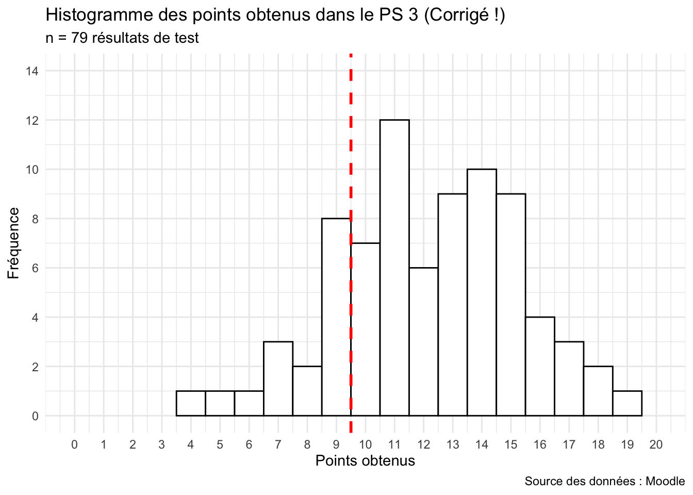
Session 10 | Statistiques descriptives
Sujet : La statistique descriptive
À noter
La statistique descriptive est généralement la première étape d’une analyse statistique. Elle aide à comprendre le jeu de données et ses caractéristiques à un niveau descriptif.
Il ne s’agit donc pas d’analyser des relations de cause à effet (c’est en effet le rôle de la statistique inférentielle).
Les mesures suivantes font souvent partie des statistiques descriptives (souvent appelés summary statistics en anglais) et sont utilisées pour une première analyse des variables de type numérique d’un jeu de données.
La taille de l’échantillon (nombre d’observations n)
Les mesures de tendance centrale (moyenne, médiane, mode)
Les mesures de dispersion (étendue, variance, écart-type, kurtosis, etc.)
Les mesure de position (percentiles, quartiles)
Ces mesure permettent d’obtenir une première idée de la structure d’un jeu de données. Elles permettent également d’identifier des valeurs extrêmes (angl. outliers) qui peuvent jouer un rôle important dans un jeu de données.
Des mesures concernant les variables catégorielles peuvent également faire partie d’une analyse déscriptive, notamment :
- La fréquence de chaque catégories (p. ex. combien de participant-e-s à un questionnaire sont des femmes ?)
- La répartition des différentes catégories (p. ex. quel est le pourcentage de femmes dans l’échantillon ?)
Dans la a mise en œuvre d’une analyse statistique, par exemple dans un travail scientifique, les statistiques descriptives sont souvent présentées sous deux formats :
des tableaux pour les mesures telles que la taille de l’échantillon, les moyennes, etc. Souvent aussi pour différentes catégories, p. ex. hommes et femmes.
des graphiques pour la visualisation de distributions, par exemple des histogrammes, et des répartitions de variables catégorielles, par exemple par le biais de diagrammes à barres.
Lorsque l’on veut représenter des statistiques descriptives dans R, il est souvent utile de combiner les deux paquets R dplyr et ggplot2. C’est une bonne nouvelle, car nous avons déjà examiné les principaux codes R nécessaires pour utiliser ces deux paquets dans ce cours.
Pour nous entraîner à nouveau, cette fois avec nos propres données, nous allons procéder ci-dessous à une analyse descriptive des réponses au questionnaire (version de 2024) !
Vous verrez donc par la suite comment ce que nous avons appris jusqu’à présent dans le cours peut être combiné de manière utile.
Analyse des réponses au questionnaire, 1ère partie (stats déscriptives)
Veuillez ouvrir un nouveau script R et charger les paquets tidyverse et ggthemes. Ensuite, vous pouvez définir votre répértoire de travaille.
Vous pouvez ensuite télécharger le fichier reponses_socio.csv depuis la page Moodle du cours (matériel de la 10ème session) et le sauvegarder dans votre répértoire de travail.

reponses_socio.csv.# Script session 10
library(tidyverse)
library(ggthemes)
# vous devez modifier les fonctions setwd() et read.csv()
# pour correspondre à votre ordinateur :
setwd("/Users/domus_julian/Documents/GitHub/intro-a-R/code")
reponses_socio <- read.csv("/Users/domus_julian/Documents/GitHub/intro-a-R/code/reponses_socio.csv",
encoding = "UTF-8", stringsAsFactors = TRUE)
# Contrôle, si ça a marché
str(reponses_socio)'data.frame': 74 obs. of 11 variables:
$ X : int 1 2 3 4 5 6 7 8 9 10 ...
$ naissance : int 2001 2001 2002 2004 2002 2001 2000 1999 1999 2001 ...
$ genre : Factor w/ 3 levels "Autre","Femme",..: 2 2 2 2 2 2 3 3 2 3 ...
$ permis : Factor w/ 3 levels "N/A","Non","Oui": 3 3 3 3 3 3 3 3 3 3 ...
$ suisse : Factor w/ 2 levels "Non","Oui": 2 2 2 2 1 2 2 2 2 2 ...
$ origine : Factor w/ 3 levels "Afrique","Amérique (Nord et Sud et Caraïbes)",..: 3 3 3 3 3 3 3 3 3 3 ...
$ fraterie : int 1 1 3 2 0 0 1 1 5 1 ...
$ domicile : Factor w/ 9 levels "Bâle-Ville","Berne",..: 3 3 8 9 3 3 3 7 4 3 ...
$ trajet : num 5 35 5 45 6 40 35 5 20 35 ...
$ note_ecole: num 5 4.5 4.7 5.1 4.6 4.9 4.2 4.8 4.5 5.1 ...
$ note_uni : num 5.5 5.4 4.7 4.9 5 5.5 4.4 5.3 5 4.9 ...# Une formidable fonction pour analyser les stats
# déscriptives : summary()
summary(reponses_socio) X naissance genre permis suisse
Min. : 1.00 Min. :1986 Autre: 2 N/A: 1 Non:10
1st Qu.:19.25 1st Qu.:2000 Femme:56 Non:18 Oui:64
Median :37.50 Median :2002 Homme:16 Oui:55
Mean :37.50 Mean :2001
3rd Qu.:55.75 3rd Qu.:2003
Max. :74.00 Max. :2005
origine fraterie domicile
Afrique : 1 Min. :0.000 Fribourg:35
Amérique (Nord et Sud et Caraïbes): 5 1st Qu.:1.000 Vaud :17
Europe :68 Median :1.000 Valais : 8
Mean :1.797 Genève : 5
3rd Qu.:2.000 Berne : 3
Max. :7.000 Tessin : 3
(Other) : 3
trajet note_ecole note_uni
Min. : 1.50 Min. :1.000 Min. :2.000
1st Qu.: 10.00 1st Qu.:4.500 1st Qu.:4.700
Median : 20.00 Median :4.800 Median :5.000
Mean : 34.66 Mean :4.763 Mean :4.853
3rd Qu.: 56.25 3rd Qu.:5.000 3rd Qu.:5.200
Max. :180.00 Max. :6.000 Max. :5.800
NA's :2 NA's :1 # Abordons maintenant quelques questions plus spécifiques
# auxquelles nous pouvons répondre à l'aide de statistiques
# descriptives
# 1. Trajet pour arriver à l'université
# *****************************************
# histogramme très basique
ggplot(data = reponses_socio, mapping = aes(x = trajet)) + geom_histogram(binwidth = 10)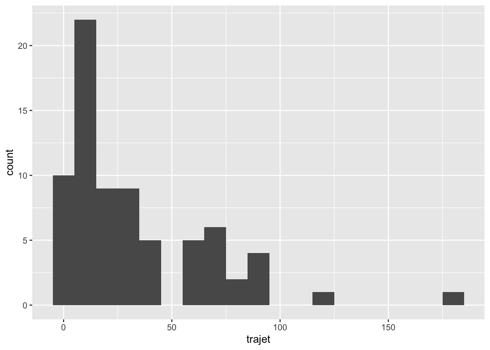
# plus sophistiqué
ggplot(data = reponses_socio, mapping = aes(x = trajet)) + geom_histogram(binwidth = 10,
fill = "steelblue", color = "black") + labs(title = "Trajets en minutes des étudiant-e-s pour arriver à l'UniFR",
subtitle = "Questionnaire avec n = 74 participant-e-s", x = "Trajet en minutes",
y = "Fréquence") + theme_minimal()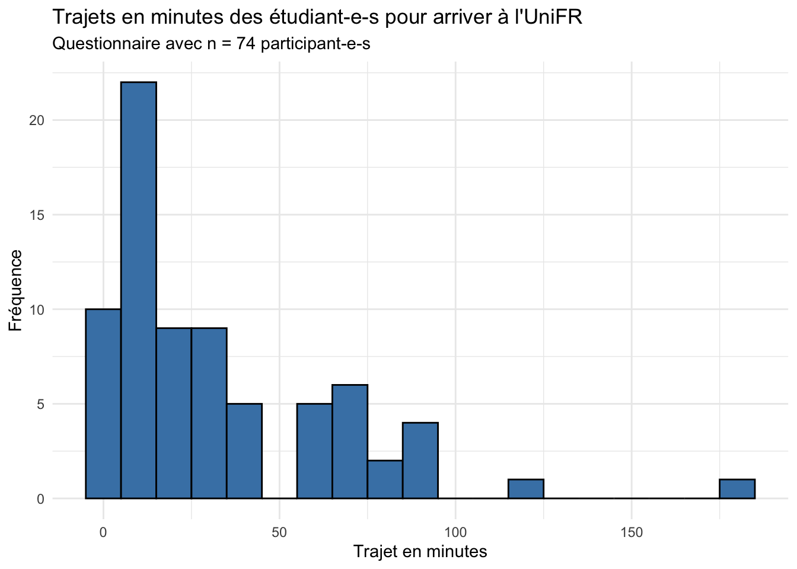
# 2. histogramme des années de naissance
# *****************************************
ggplot(data = reponses_socio, mapping = aes(x = naissance)) +
geom_histogram(binwidth = 1, fill = "lightgreen", color = "black") +
labs(title = "Années de naissance", subtitle = "n = 74 répondants à un questionnaire",
x = "Année de naissance", y = "Fréquence") + theme_minimal()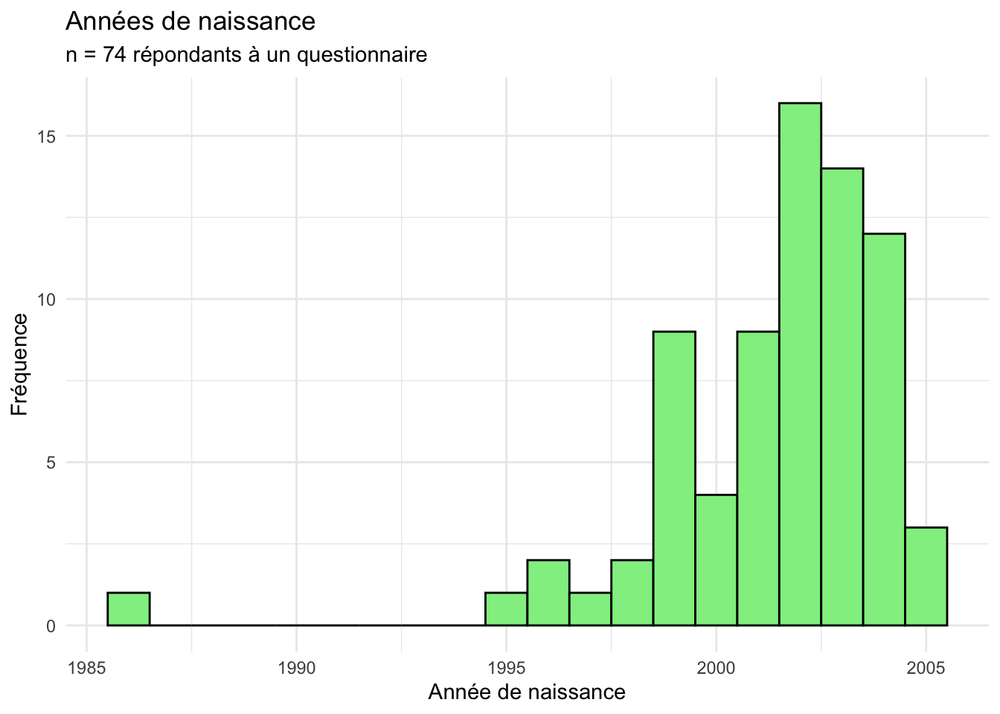
# 3. diagramme à barres des genres
# *****************************************
ggplot(data = reponses_socio, mapping = aes(x = genre, fill = genre)) +
geom_bar()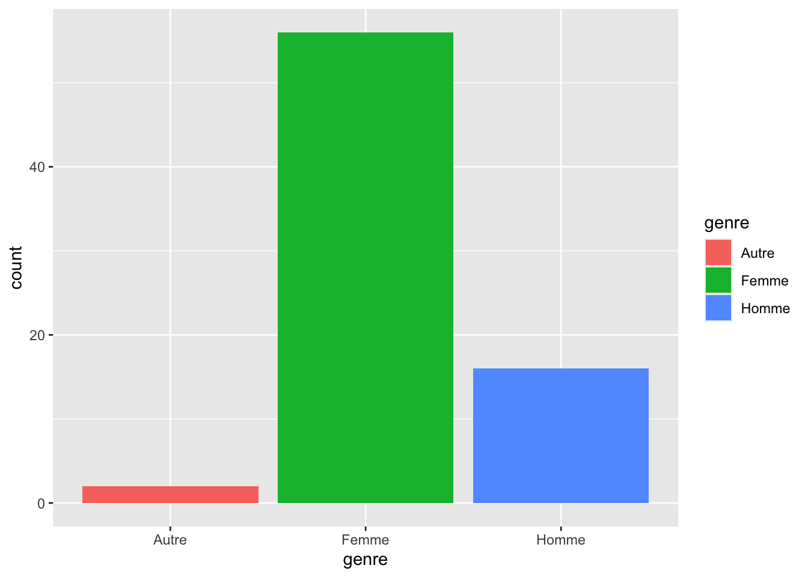
# graphique plus sophistiquée
# changer d'abord l'ordre des catégories (commençant avec
# la plus fréquente)
ordre = c("Femme", "Homme", "Autre")
# Puis combiner dplyr avec ggplot2 !
reponses_socio %>%
select(genre) %>%
mutate(genre = factor(genre, levels = ordre)) %>%
arrange(genre) %>%
ggplot(aes(x = genre, fill = genre)) + geom_bar(show.legend = FALSE) +
labs(title = "Répartition des genres", subtitle = "n = 74 répondants à un questionnaire",
x = "Genre", y = "Fréquence", legend = "") + theme_minimal()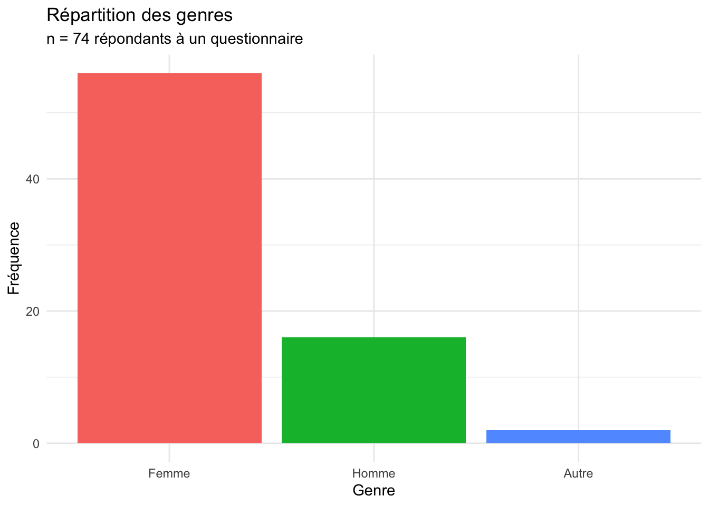
# 4. Moyennes des notes
# *****************************************
mean(reponses_socio$note_ecole, na.rm = TRUE)[1] 4.7625mean(reponses_socio$note_uni, na.rm = TRUE)[1] 4.853425min(reponses_socio$note_uni, na.rm = TRUE)[1] 2min(reponses_socio$note_ecole, na.rm = TRUE)[1] 1reponses_socio %>%
select(note_ecole, note_uni, genre) %>%
group_by(genre) %>%
filter(note_ecole > 3.99, note_uni > 0.99) %>%
summarize(n = n(), note_ecole_moyenne = mean(note_ecole),
note_uni_moyenne = mean(note_uni))# A tibble: 3 × 4
genre n note_ecole_moyenne note_uni_moyenne
<fct> <int> <dbl> <dbl>
1 Autre 2 4.5 4.75
2 Femme 53 4.90 4.88
3 Homme 16 4.59 4.84# Visualisation de la relation entre note_ecole et note_uni
reponses_socio %>%
select(note_ecole, note_uni) %>%
filter(note_ecole > 3.99, note_uni > 0.99) %>%
ggplot(aes(x = note_uni, y = note_ecole)) + geom_point() +
geom_smooth(method = "lm")`geom_smooth()` using formula = 'y ~ x'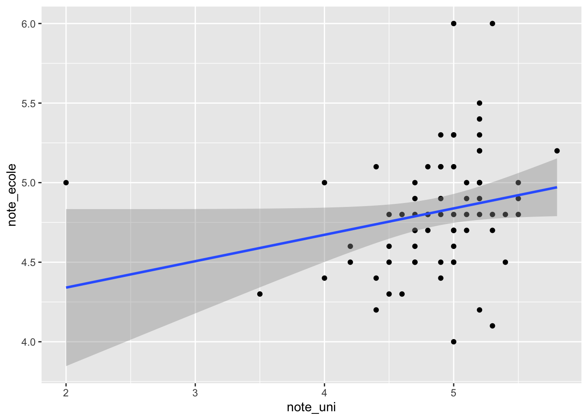
# 5. Permis de conduire
# *****************************************
table(reponses_socio$permis)
N/A Non Oui
1 18 55 table(reponses_socio$suisse)
Non Oui
10 64 reponses_socio %>%
select(permis, suisse) %>%
filter(permis != "N/A") %>%
group_by(suisse, permis) %>%
summarize(n = n())`summarise()` has grouped output by 'suisse'. You can override using the
`.groups` argument.# A tibble: 4 × 3
# Groups: suisse [2]
suisse permis n
<fct> <fct> <int>
1 Non Non 3
2 Non Oui 7
3 Oui Non 15
4 Oui Oui 48La fonction write.csv()
Avec R, vous ne pouvez pas seulement lire des données au format CSV (entrée de données ; avec des fonctions telles que read.csv()), mais vous pouvez également créer des fichiers CSV à partir de votre session en cours (sortie de données), notamment avec la fonction write.csv() !
La syntaxe de la fonction nécessite comme arguments le nom du data frame que vous voulez sauvegarder comme CSV ainsi que le chemin du fichier sur votre ordinateur qui inclut le nom que vous voulez donner au ficher CSV : write.csv(nom_df, "chemin_du_fichier/nom_du_ficher.csv")
# Voici un exemple avec du code (recréons le tableau avec
# les animaux de Ice Age !)
name <- c("Manny", "Sid", "Diego", "Ellie", "Peaches", "Scrat",
"Rudy", "Buck")
species <- c("mammoth", "sloth", "sabertooth", "mammoth", "mammoth",
"squirrel", "dinosaur", "weasel")
female <- c(FALSE, FALSE, FALSE, TRUE, TRUE, FALSE, FALSE, FALSE)
age <- c(30, 20, 35, 25, 7, 4, 100, 28)
weight <- c(5000, 80, 400, 4000, 1000, 1, 10000, 3)
ice_age_df <- data.frame(name, species, female, age, weight)
print(ice_age_df) name species female age weight
1 Manny mammoth FALSE 30 5000
2 Sid sloth FALSE 20 80
3 Diego sabertooth FALSE 35 400
4 Ellie mammoth TRUE 25 4000
5 Peaches mammoth TRUE 7 1000
6 Scrat squirrel FALSE 4 1
7 Rudy dinosaur FALSE 100 10000
8 Buck weasel FALSE 28 3# Maintenant, notre but est de créer un ficher CSV qui
# contient les données du data frame ice_age_df Il faut
# adapter le chemin du fichier suivant pour qu'il marche
# sur votre ordinateur :
write.csv(ice_age_df, file = "/Users/domus_julian/Documents/GitHub/intro-a-R/code/ice_age_df.csv")Si tout a bien marché, vous devrez maintenant avoir un ficher CSV, nommé ice_age_df.csvdans votre répértoire de travail !
Session 11 | Statistiques inférentielles I
Sujet : La statistique inférentielle, Partie 1 (tests t)
Dans cette et la prochaine session, nous allons nous concentrer sur trois méthodes de statistiques inférentielles couramment utilisées :
Les tests t (angl. Student’s t-test)
l’analyse de variance (angl. ANOVA = ANalysis Of VAriance)
La régression linéaire (angl. linear regression).
Mais d’abord, il faut répondre à la question suivante :
C’est quoi la statistique inférentielle ?
À noter
Les statistiques inférentielles sont une branche des statistiques qui permet de tirer des conclusions générales sur une population entière en se basant sur l’analyse statistique d’un échantillon représentatif de cette population.
En sciences sociales, les statistiques inférentielles sont souvent utilisées pour démontrer des corrélations et des relations de cause à effet entre des variables. Nous voulons savoir, par exemple, si le genre (variable x) a une influence sur les notes de maturité (variable y).
En général, pour analyser de telles relations, nous formulons souvent des hypothèses basées sur des théories ou des suppositions tiré de la littérature d’un domaine de recherche, que nous pouvons ensuite tester sur notre échantillon. Les résultats obtenus nous permettent de confirmer ou d’infirmer nos hypothèses et de généraliser les conclusions à la population entière. Ceci nous permet de contribuer à la création de nouvelles connaissance dans notre domaine de recherche
le test t
À noter
Le test t est est un outil statistique qui permet d’évaluer les moyennes d’un ou deux échantillons à l’aide d’un test d’hypothèse. Il est aussi appelé test t de Student, car le statisticien qui l’a inventé au début du 20ème siècle, William Sealy Gosset, a publié sous le pseudonyme de “Student” (Wikipédia, 2024).
Attention
Pour effectuer un test t, il y a plusieurs hypothèses qui doivent être satisfaites :
- Les données sont continues
- L’échantillonnage est aléatoire
- Les données de chaque échantillon ont été prélevées au hasard dans une population.
- Indépendance
- Les observations doivent être indépendantes les unes des autres. Cela signifie que la valeur d’une observation ne doit pas dépendre de la valeur d’une autre observation.
- Pour les tests t à deux échantillons, les échantillons doivent être indépendants. Si les échantillons ne sont pas indépendants, un test t pour échantillons appariés peut être approprié.
- Normalité
- La variable continue étudiée doit (plus ou moins) suivre une loi normale dans chaque groupe ou échantillon.
- Cette hypothèse peut être vérifiée à l’aide de graphiques (comme un histogramme) ou de tests statistiques (comme le test de Shapiro-Wilk :
shapiro.test()).
- Homogénéité des variances (homoscédasticité)
- Les variances des données dans chaque groupe est similaire.
- Cette hypothèse peut être vérifiée à l’aide du test de Levene ou du test de Bartlett.
En pratique, les tests t sont relativement robustes aux déviations de ces hypothèses, surtout si le nombre d’observations (n) de chaque échantillon est important.
Néanmoins, si une ou plusieurs de ces hypothèses n’est pas satisfaite, alors des alternatives au test t peuvent être utilisées, comme le test de Wilcoxon-Mann-Whitney (wilcox.test()) ou le test de Kruskal-Wallis (kruskal.test()).
Dans R, le test t est éffectué avec la fonction test.t().
Il existe trois types de tests t :
Le test t à un échantillon (angl. one sample t-test) : pour évaluer si la moyenne d’un seul échantillon diffère de manière significative d’une valeur connue.
- Par exemple, si la moyenne des notes d’un groupe de 30 lycéens, qui est de 4.9, est significativement différente de 5.0 ou non.
Le test t à deux échantillons indépendants (angl. two sample t-test ; aussi appelé Welch two sample t-test) : pour évaluer si les moyennes de deux échantillons indépendants diffèrent de manière significative.
- Par exemple, si la moyenne des notes de 30 lycéennes, qui est de 5.0, est significativement différente ou non de la moyenne des notes de 30 lycéens, qui est de 4.8.
Le test t pour échantillons appariés (angl. pairwise t-test) : pour comparer les moyennes de deux groupes qui sont liés ou appariés d’une certaine manière. Dans ce type de test, chaque participant est mesuré deux fois, une fois dans chaque groupe, ce qui permet de réduire les effets des variations individuelles.
Par exemple, nous pourrions enregistrer la moyenne des notes d’une classe de 30 élèves avant et après un cours de soutien scolaire en ligne. Il y a donc deux mesures pour chaque élève. Le cours de soutien scolaire est dans ce cas un traitement.
(à noter : nous n’allons pas traiter ce type de test t plus en détail dans l’exercice).
Voyons maintenant des exemples avec du code !
Exemple 1 : test t à un échantillon
Problème : Tester si la moyenne de QI d’un échantillon d’étudiant-e-s, qui est de 105, est différente de manière significative de la moyenne de la population, qui est de 100.
Notre hypothèse H1 (angl. alternative hypothesis) stipule qu’il y a une différence significative entre le QI des étudiant-e-s et celui de la population générale. En effet, nous assumons que le QI des étudiant-e-s est plus élevé que celui de la population.
L’hypothèse nulle H0 (angl. null hypothesis) serait donc le contraire, c’est à dire que la différence n’est pas significative entre les deux groupes.
À noter : dans le code qui suit, nous allons encore une fois utiliser la fonction rnorm() que nous avons vu en classe pour créer des valeurs “aléatoires” qui suivent une loi normale. Nous pouvons utiliser ces valeurs pour simuler notre problème.
# Générer des données d'échantillon avec n = 25
# observations hypothétiques de QI d'étudiant-e-s. Nous
# simulons, avec rnorm() 25 observations qui suivent une
# loi normale avec une moyenne de 105 et un écart-type de
# 15
set.seed(123)
scores_qi <- rnorm(25, mean = 105, sd = 15)
# Test t à un échantillon où il faut 2 arguments dans la
# fonction t.test() : (1) les données à tester (scores_qi)
# et (2) la valeur à laquelle on veut comparer les données
# (mu = 100)
resultat_test_t <- t.test(scores_qi, mu = 100)
print(resultat_test_t)
One Sample t-test
data: scores_qi
t = 1.5844, df = 24, p-value = 0.1262
alternative hypothesis: true mean is not equal to 100
95 percent confidence interval:
98.63817 110.36192
sample estimates:
mean of x
104.5 Il s’agit maintenant d’interpréter le résultat du test t dans R.
La statistique t quantifie la différence entre les moyennes des groupes par rapport à la variabilité de l’échantillon. Le signe de la statistique t indique si la moyenne de l’échantillon est supérieure (t positif) ou inférieure (t négatif) à la moyenne de la comparaison. L’ampleur reflète combien d’erreurs standard la différence est par rapport à zéro. En général, des valeurs absolues plus élevées suggèrent des preuves plus solides contre l’hypothèse nulle, ce qui se traduit par des valeurs p plus faibles.
df signifie “degrees of freedom”. Dans un test t, les degrés de liberté font référence au nombre de valeurs dans le calcul final d’une statistique qui sont libres de varier. Il s’agit d’une mesure de la quantité d’informations disponibles pour estimer le paramètre statistique.
La valeur p (angl. p-value) est la probabilité d’observer un résultat aussi extrême que celui obtenu dans l’échantillon sous l’hypothèse nulle. Elle est utilisée pour déterminer si le résultat du test est statistiquement significatif en comparant sa valeur à un seuil de signification prédéfini (habituellement 5% = 0.05). La p-value est calculée à partir de la statistique de test t et des degrés de liberté associés à l’échantillon.
En pratique, c’est surtout la valeur p qui compte ! Dans notre cas, elle est clairement supérieure à 5% ( > 0.05), ce qui nous indique que la différence du QI entre les étudiant-e-s et la population n’est PAS significative (si nous utilisons des intérvalles de confiance de 95%) !
Cela veut dire que nous ne pouvons PAS abondonner notre hypothèse nulle H0 car il y a une forte probabilité que la différence de QI observée dans notre échantillon est le résultat d’un pure hasard. En d’autres termes, selon cet échantillon, nous ne pouvons pas conclure que le QI des étudiant-e-s et significativement plus élevé que celui de la population générale.
# Regénérons encore une fois des données d'échantillon,
# mais cette fois-ci avec n = 50 observations
set.seed(123)
scores_qi <- rnorm(50, mean = 105, sd = 15)
# Test t à un échantillon
resultat_test_t <- t.test(scores_qi, mu = 100)
print(resultat_test_t)
One Sample t-test
data: scores_qi
t = 2.8085, df = 49, p-value = 0.007129
alternative hypothesis: true mean is not equal to 100
95 percent confidence interval:
101.5691 109.4630
sample estimates:
mean of x
105.5161 La valeur p est maintenant beaucoup plus petite, soit inférieure à 1% (< 0.01). Cela nous indique que la différence entre le QI des étudiant-e-s et de la population est significative (si nous utilisons des intervalles de confiance de 95%) !
Avec un tel résultat de test t, nous pouvons rejeter l’hypothèse nulle H0, car la probabilité que les valeurs observées soient le résultat d’un pure hasard sont très faible (moins de 1%). Nous pouvont alors inférer que le QI des étudiant-e-s est significativement plus élevé que celui de la population générale.
Exercice 1
Selon l’étude World Internet Project de l’Université de Zurich, qui a évalué les données pour la Suisse, les personnes en Suisse ont passé en moyenne 5.6 heures en ligne en 2023. Chez les 20-29 ans, ce chiffre s’élève même à 7.9 heures en moyenne.
Réalisez un test T en utilisant ces statistiques comme suit :
Simulez avec
rnorm()30 valeurs pour l’utilisation d’Internet en heures par jour pour le groupe d’âge 20-29 ans (mean = 7.9, sd = 2).Testez si la durée moyenne d’utilisation d’Internet en heures de votre échantillon simulé de 30 suisses de 20 à 29 ans se distingue significativement de la moyenne nationale (
mu = 5.6).
Solution
# Générons des données d'échantillon hypothétique avec n =
# 30 observations
set.seed(123)
usage_20_29 <- rnorm(30, mean = 7.9, sd = 2)
# Test t à un échantillon
resultat_test_t <- t.test(usage_20_29, mu = 5.6)
print(resultat_test_t)
One Sample t-test
data: usage_20_29
t = 6.1576, df = 29, p-value = 0.000001035
alternative hypothesis: true mean is not equal to 5.6
95 percent confidence interval:
7.073147 8.538438
sample estimates:
mean of x
7.805792 La très faible valeur p indique qu’il est extrêmement improbable que l’utilisation d’Internet des 20-29 ans ne diffère PAS significativement de la moyenne nationale.
Nous pouvons alors rejeter H0.
En d’autres termes : Nous pouvons supposer avec une très grande certitude que les 20-29 ans ont une utilisation d’Internet significativement plus élevée que la moyenne de la population en Suisse.
Exemple 2 : test t à deux échantillons
Utilisons encore une fois la fonction rnorm(), mais maintenant pour simuler deux échantillons hypothétiques :
Un échantillon de 5 tailles de femmes suisses
Un échantillon de 5 tailles d’hommes suisses
Selon l’article de 24 heures, qu’on a déjà vu en classe, en Suisse, les femmes ont une taille moyenne de 164.7 cm tandis que les hommes mesurent 177.4 cm en moyenne. Dans la suite, nous supposons que les écarts-types sont de +- 5.6 cm pour les femmes et de +- 6.1 cm pour les hommes.
# Données exemplaires :
set.seed(123)
tailles_f <- rnorm(5, mean = 164.7, sd = 5.6)
tailles_h <- rnorm(5, mean = 177.4, sd = 6.1)
# Two-sample t-test
t_test_two_sample <- t.test(tailles_f, tailles_h)
print(t_test_two_sample)
Welch Two Sample t-test
data: tailles_f and tailles_h
t = -3.0109, df = 6.8056, p-value = 0.02031
alternative hypothesis: true difference in means is not equal to 0
95 percent confidence interval:
-20.308039 -2.383283
sample estimates:
mean of x mean of y
165.7840 177.1297 Comme nos échantillons de n = 5 sont très petit, il se peut que la différence de taille moyenne entre les suisses et les suissesses n’est pa significative si on utilise des intervalles de confiances de 95% ! Cependant, dès que nous augmentons l’échantillon simulé, par exemple à n = 20 ou n = 100, le test T indique clairement que la différence de taille est significative.
Exercice 2
Supposons maintenant qu’un avion en provenance d’Amérique atterrisse à Genève-Cointrin. Il transporte une sélection de 24 joueuses de la Women’s NBA, la ligue professionnelle féminine de basket-ball aux États-Unis. Selon les statistiques de la WNBA, ces joueuses mesurent en moyenne 184.5 cm.
Quelle est la probabilité que 24 hommes suisses choisis au hasard mesurent également cette taille en moyenne ? (Supposons que l’écart-type des joueuses est de 6.5 cm).
Solution
# Générons des données pour deux échantillons hypothétique
# avec n = 24 observations chacun
set.seed(123)
tailles_f_WNBA <- rnorm(24, mean = 184.5, sd = 6.5)
tailles_h <- rnorm(24, mean = 177.4, sd = 6.1)
# Two-sample t-test
t_test_two_sample <- t.test(tailles_f_WNBA, tailles_h)
print(t_test_two_sample)
Welch Two Sample t-test
data: tailles_f_WNBA and tailles_h
t = 3.8971, df = 45.668, p-value = 0.0003162
alternative hypothesis: true difference in means is not equal to 0
95 percent confidence interval:
3.253468 10.207582
sample estimates:
mean of x mean of y
184.4436 177.7131 La très petite valeur p, inférieure à 1%, indique qu’il est extrêmement improbable que 24 hommes suisses tiré au hasard sont environ de même taille que 24 joueuses de la WNBA. Nous pouvons alors rejeter H0. En d’autres termes : Nous pouvons supposer avec une très grande certitude que les joueuses de la WNBA sont significativement plus grande que les hommes suisses moyens.
À noter : la fonction t.test(), comme on l’a utilisé dans ces exemples de code jusqu’à présent, utilise plusieurs paramètres par défaut, si nous ne les spécifions pas comme arguments dans la fonction. Voici quelques-un de ces paramètres, qu’on peut aussi visualiser avec ?t.test() :
t.test(x, y = NULL,
alternative = c("two.sided", "less", "greater"),
mu = 0, paired = FALSE, var.equal = FALSE,
conf.level = 0.95, ...)En fonction de votre problématique et de vos données, par exemple dans un travail de bachelor, il peut être nécessaire de spécifier explicitement certains de ces paramètres. Pour ce faire, il peut être utile de lire les pages d’aide de R et de rechercher d’autres documents en ligne pertinents pour votre problématique spécifique.
- Un tutoriel qui approfondit le test t dans R est par exemple celui de Datacamp (2024).
Session 12 | Statistiques inférentielles II
Sujet : La statistique inférentielle, Partie 2 (ANOVA et régression linéaire)
L’analyse de la variance (ANOVA)
À noter
L’analyse de la variance (abbrégée ANOVA) est un ensemble de modèles statistiques et de procédures d’estimation associées utilisés pour analyser les différences entre les moyennes. L’ANOVA a été développée par le statisticien britannique Ronald Fisher (1890-1962).
L’ANOVA permet d’étudier le comportement d’une variable quantitative à expliquer en fonction d’une ou de plusieurs variables catégorielles.
Dans sa forme la plus simple, l’ANOVA fournit un test statistique permettant de déterminer si deux moyennes de population ou plus sont égales, et généralise donc le test t au-delà de deux moyennes. En d’autres termes, l’ANOVA est utilisée pour tester si les différences entre deux ou plusieurs moyennes d’une variable quantitative à expliquer sont significatives ou si elles peuvent être attribuées au hasard.
Le principe de l’ANOVA est basé sur la loi de la variance totale, selon laquelle la variance observée d’une variable particulière est divisée en composantes attribuables à différentes sources de variation, telles que la variation entre les groupes et la variation à l’intérieur des groupes.
En fonction du nombre de facteurs et du nombre de niveaux dans chaque facteur, il existe différents types d’ANOVA, tels que l’ANOVA à un facteur, l’ANOVA à deux facteurs, etc.
(Source : Wikipédia, 2024).
Attention
Comme pour le test t, l’ANOVA nécessite certaines hypothèses concernant les données. Les observations de la variable à expliquer doivent notamment être indépendamment et identiquement distribuées (approximativement une distribution normale) et la variance entre les groupes doit être similaire (homoscédasticité).
Dans R, la fonction aov() est utilisée pour effectuer des ANOVAs à un ou plusieurs facteurs.
Elle prend en entrée une formule qui spécifie la variable réponse et les facteurs explicatifs, ainsi qu’un data frame contenant les données. Syntaxe :
aov(formula, data)La fonction
aov()renvoie un objet de classe aov qui contient les résultats de l’analyse de variance, y comprisles sommes de carrés,
les degrés de liberté,
les valeurs de F et
les valeurs de p pour chaque effet du modèle.
En résumé, aov() est utilisée pour ajuster des modèles linéaires à effets fixes et pour effectuer des analyses de variance.
Exemple 1 : ANOVA avec le jeu de données palmerpenguins

Pour cet exemple, il faut télécharger le paquet R palmerpenguins. Celui-ci contient un jeu de données avec des informations sur trois espèces de pingouins (Adélie, Chinstrap et Gentoo) qui vivent dans l’archipel de Palmer en Antarctique.
Les données ont été collectées entre 2007 et 2009 et comprennent des mesures telles que la longueur du bec (bill_length_mm), la longueur des nageoires (flipper_length_mm), le poids corporel (body_mass_g) et le sexe des pingouins.
Utilisez le code suivant pour la première installation du paquet :
install.packages("palmerpenguins")Après l’installation, il suffit d’activer le paquet avec
library(palmerpenguins)Il est toujours recommandé de comprendre un nouveau jeu de données au niveau déscriptif, utilisez donc
?palmerpenguinset naviguez un peu sur le site des créatrices de ce paquet R !Le but de notre ANOVA est de déterminer si les différences de longueur moyenne des nageoires
flipper_length_mmentre les trois espèces de pingouins sont statistiquement significatives.flipper_length_mmest donc notre variable quantitative à expliquer etspeciesest notre variable catégorielle qui indique à quelle espèces de pingouins (Adélie, Chinstrap et Gentoo) chaque observation deflipper_length_mmappartient.
library(tidyverse)
library(palmerpenguins)
# Explorez d'abord un peu la structure du jeu de données
str(penguins)tibble [344 × 8] (S3: tbl_df/tbl/data.frame)
$ species : Factor w/ 3 levels "Adelie","Chinstrap",..: 1 1 1 1 1 1 1 1 1 1 ...
$ island : Factor w/ 3 levels "Biscoe","Dream",..: 3 3 3 3 3 3 3 3 3 3 ...
$ bill_length_mm : num [1:344] 39.1 39.5 40.3 NA 36.7 39.3 38.9 39.2 34.1 42 ...
$ bill_depth_mm : num [1:344] 18.7 17.4 18 NA 19.3 20.6 17.8 19.6 18.1 20.2 ...
$ flipper_length_mm: int [1:344] 181 186 195 NA 193 190 181 195 193 190 ...
$ body_mass_g : int [1:344] 3750 3800 3250 NA 3450 3650 3625 4675 3475 4250 ...
$ sex : Factor w/ 2 levels "female","male": 2 1 1 NA 1 2 1 2 NA NA ...
$ year : int [1:344] 2007 2007 2007 2007 2007 2007 2007 2007 2007 2007 ...# Visualisez les distributions de flipper length avec des
# boxplots
ggplot(penguins, aes(x = species, y = flipper_length_mm)) + geom_boxplot()Warning: Removed 2 rows containing non-finite outside the scale range
(`stat_boxplot()`).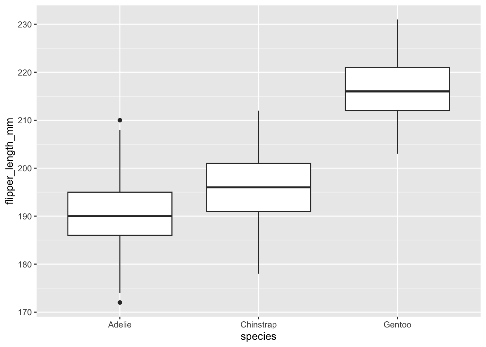
# Comme alternative, vous pouvez aussi créez un histogramme
# plus avancé pour comparer flipper length par espèce
ggplot(data = penguins, aes(x = flipper_length_mm)) + geom_histogram(aes(fill = species),
color = "black", alpha = 0.5, position = "identity", bins = 30) +
scale_fill_manual(values = c("darkorange", "darkorchid",
"cyan4")) + theme_minimal() + labs(title = "Histograms of flipper length by penguin species",
subtitle = "n = 344 ; data source : palmerpenguin R package")Warning: Removed 2 rows containing non-finite outside the scale range
(`stat_bin()`).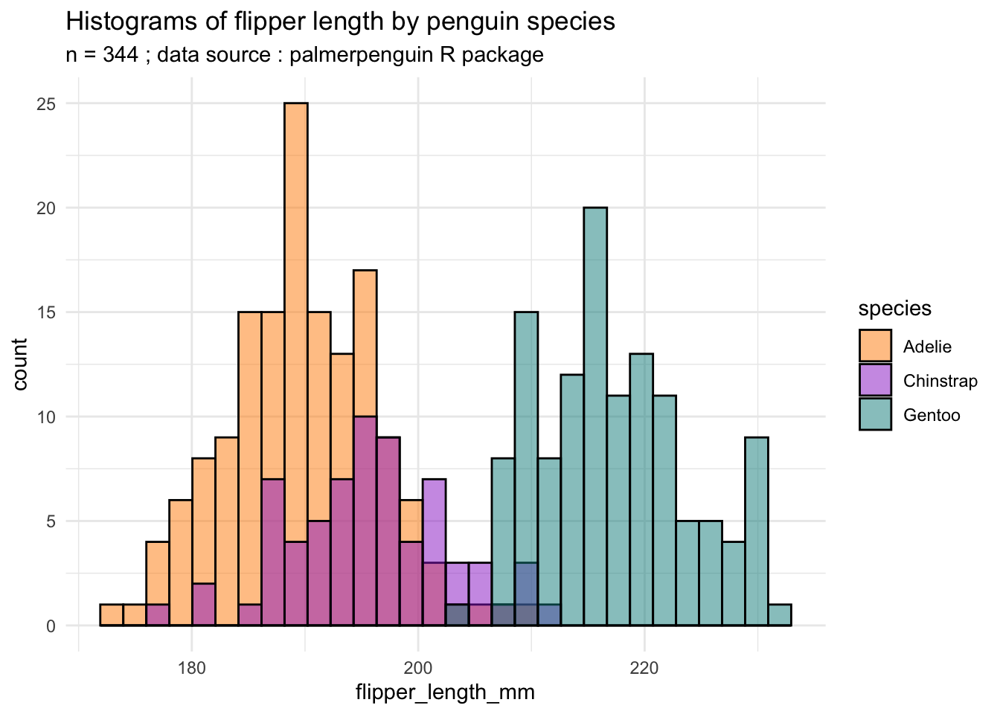
# Calculs des variances de flipper length avec dplyr par
# espèce de pingouin, pour vérifier si l'hypothèse des
# variances similaire entre groupes est satisfaite :
penguins %>%
group_by(species) %>%
summarize(var_fl = var(flipper_length_mm, na.rm = TRUE))# A tibble: 3 × 2
species var_fl
<fct> <dbl>
1 Adelie 42.8
2 Chinstrap 50.9
3 Gentoo 42.1# ANOVA avec aov()
anova_1 <- aov(flipper_length_mm ~ species, data = penguins)
summary(anova_1) Df Sum Sq Mean Sq F value Pr(>F)
species 2 52473 26237 594.8 <0.0000000000000002 ***
Residuals 339 14953 44
---
Signif. codes: 0 '***' 0.001 '**' 0.01 '*' 0.05 '.' 0.1 ' ' 1
2 observations deleted due to missingness# à noter, avec TukeyHSD() nous pouvons vérifier d'avantage
# les différence entre chaque paire de variables des trois
# groupe :
TukeyHSD(anova_1) Tukey multiple comparisons of means
95% family-wise confidence level
Fit: aov(formula = flipper_length_mm ~ species, data = penguins)
$species
diff lwr upr p adj
Chinstrap-Adelie 5.869887 3.586583 8.153191 0
Gentoo-Adelie 27.233349 25.334376 29.132323 0
Gentoo-Chinstrap 21.363462 19.000841 23.726084 0# Nous pouvons rejeter H0 avec une grande certitude !La régression linéaire avec lm()
Explications théoriques de la régression linéaire
Dans le monde réel, nous supposons souvent qu’il existe des relations de cause à effet.
- Par exemple, nous pouvons supposer que les personnes ayant un niveau d’éducation élevé ont des salaires plus élevés. Il s’agit bien sûr d’une généralisation et il se peut qu’elle ne soit vraie qu’en moyenne (il se peut que certaines personnes ayant un très faible niveau d’éducation aient des salaires très élevés et vice versa). Néanmoins, malgré quelques exceptions à la règle, nous pouvons raisonnablement supposer qu’en moyenne, une telle relation de cause à effet entre le niveau d’éducation et le salaire existe.
La question suivante est donc de savoir quelle est l’ampleur d’un tel effet et s’il est possible de le quantifier.
Est-il possible, par exemple, de prédire une augmentation moyenne du salaire en % pour chaque année d’études supplémentaire ? Répondre à une telle question peut s’avérer compliqué pour différentes raisons.
Si l’éducation est importante, un certain nombre d’autres facteurs peuvent également influencer le salaire d’une personne, tels que l’âge, le sexe, l’origine, la classe sociale, l’intelligence, les capacités de communication, la résistance au stress et peut-être même la taille, l’attrait physique et l’attitude politique. Si ces autres facteurs ont également une influence sur le salaire, comment déterminer l’impact fractionnel du niveau d’éducation ?
Un autre problème, en particulier dans la pratique, est que nombre de ces autres facteurs peuvent ne pas être disponibles ou être difficiles à mesurer.
- Et même si tous ces facteurs pouvaient être observés et contrôlés, la relation entre le niveau d’éducation et le salaire sera toujours soumise à un certain degré de hasard. Peut-être y a-t-il d’autres facteurs inconnus, ou peut-être y a-t-il simplement une fluctuation inexplicable du niveau de salaire entre tous les individus, même ceux qui ont des qualifications et des profils socio-économiques très similaires.
Une solution possible pour quantifier néanmoins la relation de causalité entre deux variables, telles que le niveau d’éducation et le salaire des personnes, malgré ces incertitudes, est d’effectuer une analyse de régression linéaire !
À noter
La régression linéaire est une méthode statistique utilisée pour modéliser la relation linéaire entre une variable à expliquer (y) et une ou plusieurs variables explicatives (x1, x2, etc.).
La variable à expliquer, y, est parfois aussi appelée variable dépendante ou variable de réponse et, en anglais, output variable, response variable, predicted variable
Les variables explicatives, x, quant à eux, sont aussi appelées variables indépendantes ou prédicteurs et, en anglais, input variables, predictor variables.
Nous parlons de régression linéaire simple, si il y a seulement une variable explicative x et de régression linéaire multiple si il y a plus d’une variable explicative, p. ex. x1, x2, x3, etc.
En analyse de données, un modèle de régression a deux principaux types d’applications possibles :
Explication (causale) : Si nous supposons qu’il existe une relation causale entre y et x, nous pouvons expliquer les variations observées de y en termes de variations observées de x.
- Par exemple, considérons un échantillon aléatoire de données sur la taille et le poids des personnes. Nous pouvons supposer qu’en moyenne, les personnes plus grandes pèsent plus que les personnes plus petites (relation de cause à effet). Par conséquent, nous pourrions développer un modèle de régression qui explique les variations de poids (y) en termes de variations de taille (x).
Prédiction : Si nous disposons d’un échantillon représentatif de données contenant des observations des valeurs y et x, nous pouvons adapter un modèle de régression aux données. Par la suite, nous pouvons utiliser le modèle de régression pour un nouvel ensemble de données qui ne contient que des valeurs x et prédire les valeurs y correspondantes.
- Supposons par exemple que vous soyez un agent immobilier. Vous disposez d’un ensemble de données de 200 ventes de maisons dans une ville au cours des cinq derniers mois, qui contient le prix de vente (y) et la taille de la maison en mètres carrés (x). Vous pouvez maintenant adapter un modèle de régression à vos données et l’utiliser pour prédire les prix de vente attendus des maisons actuellement sur le marché en fonction de leurs superficie (x), que vous connaissez.
Notez qu’un modèle de régression linéaire, comme tout modèle, est toujours une simplification de la réalité. Par conséquent, la précision des modèles de régression linéaire appliqués à des données réelles ne sera jamais de 100 %, c’est-à-dire qu’elle est sujette à une erreur d’estimation.
Comprendre (et aussi quantifier) cette déviation du modèle de régression par rapport aux valeurs observées est également une étape importante de toute analyse de régression, comme nous le verrons par la suite.
Au niveau technique, l’objectif de la régression linéaire est de spécifier une équation mathématique, appelée modèle de régression, qui quantifie la relation entre les variables y et x sur la base d’un ensemble d’observations.
Par exemple, dans le cas d’une régression linéaire simple avec une variable x, nous utiliserions l’équation suivante :
\[ y = \beta_0 + \beta_1 x + \epsilon \] où :
\(y\) est la variable à expliquer
\(x\) est la variable explicative.
\(\beta_0\) est l’ordonnée à l’origine de la droite de régression.
\(\beta_1\) est la pente de la droite de régression.
\(\epsilon\) est le terme d’erreur aléatoire
À noter
Si cela est trop abstrait pour certaines personnes : Nous pourrions également dire que, d’un point de vue pratique, l’objectif d’une régression linéaire simple est d’ajuster une ligne droite à un nuage de points. Le modèle de régression serait la droite de régression qui modélise la relation entre les variables y et x (les observations sous la forme d’un nuage de points).
La fonction lm()
La fonction lm() dans R est utilisée pour ajuster un modèle de régression linéaire. Elle est couramment utilisée dans le contexte de la régression linéaire pour étudier la relation entre une variable dépendante (y) et une ou plusieurs variables indépendantes (x1, x2, etc.).
La syntaxe de base de la fonction lm() est la suivante : lm(formula, data).
L’argument
formuladésigne une formule qui décrit le modèle à ajuster. Par exemple,y ~ x1 + x2signifie que la variable dépendante y est modélisée en fonction des variables indépendantes x1 et x2.L’argument
datarequiert l’indication du jeu de données que la régression doit utiliser en tant qu’entrée contenant les variables mentionnées dans la formule.
Exemple 1 : La régression linéaire à une variable avec mtcars
Voici un exemple d’utilisation de la fonction lm() avec le jeu de données mtcars : lm(mpg ~ wt, data = mtcars)
Notre but est de modéliser la relation entre la variable dépendante
mpg(miles per gallon) et la variable indépendantewt(weight).Notre hypothèse est qu’il existe une relation négative entre
wtetmpgdes véhicules dansmtcars. En d’autres termes, nous nous attendons à ce que les voitures plus lourdes aient tendance à parcourir moins de distance avec une unité de carburant que les voitures plus légères.Nous supposons qu’il s’agit d’une relation de cause à effet, car les lois de la physique nous apprennent que l’accélération et le déplacement d’objets plus lourds nécessitent une force et une énergie plus importantes. Par conséquent, nous supposons que les voitures plus lourdes consomment généralement plus d’énergie en forme de carburant que les voitures plus légères.
# Charger le jeu de données mtcars
data(mtcars)
# Ajuster un modèle de régression linéaire avec mpg comme
# variable dépendante et wt comme variable indépendante
modele_1 <- lm(mpg ~ wt, data = mtcars)
# Afficher le résumé du modèle que nous pouvons interpréter
summary(modele_1)
Call:
lm(formula = mpg ~ wt, data = mtcars)
Residuals:
Min 1Q Median 3Q Max
-4.5432 -2.3647 -0.1252 1.4096 6.8727
Coefficients:
Estimate Std. Error t value Pr(>|t|)
(Intercept) 37.2851 1.8776 19.858 < 0.0000000000000002 ***
wt -5.3445 0.5591 -9.559 0.000000000129 ***
---
Signif. codes: 0 '***' 0.001 '**' 0.01 '*' 0.05 '.' 0.1 ' ' 1
Residual standard error: 3.046 on 30 degrees of freedom
Multiple R-squared: 0.7528, Adjusted R-squared: 0.7446
F-statistic: 91.38 on 1 and 30 DF, p-value: 0.0000000001294Le résultat de la régression linéaire indique que le modèle linéaire modele_1 prédit la variable dépendante mpg en fonction de la variable indépendante wt. Regardons le résultat plus en detail :
Les coefficients du modèle sont présentés dans la section Coefficients.
L’interception est estimée à 37,285 et le coefficient pour
wtest estimé à -5,345. Cela signifie que pour chaque augmentation d’une unité dewt, la valeur prédite dempgdiminue de 5,345 unités en moyenne. En d’autres termes, pour chaque tranche de 1 000 livres (environ 454 kg) de plus qu’une voiture pèse, la valeur de sa consommation de carburant diminue de 5,345 miles.La valeur de p (Pr(>|t|)) pour le coefficient de
wtest très faible (< 0,000000000129), ce qui indique que le coefficient est significativement différent de zéro et que la variablewta un effet significatif sur la variable dépendantempg.
La section Residuals indique les résidus minimaux, du premier quartile, de la médiane, du troisième quartile et maximaux. Ces valeurs peuvent être utilisées pour vérifier si les hypothèses du modèle sont satisfaites.
Le Residual standard error est l’écart type résiduel, qui mesure l’écart entre les valeurs prédites et les valeurs réelles de la variable dépendante. Plus cette valeur est faible, mieux le modèle s’adapte aux données. Dans ce cas, la valeur est de 3,046.
Le Multiple R-squared est le coefficient de détermination, qui mesure la proportion de la variance de la variable dépendante expliquée par la variable indépendante. Dans ce cas, le coefficient de détermination est de 0,7528, ce qui indique que la variable
wtexplique environ 75,28% de la variance de la variablempg. Pour un modèle de régression ne comportant qu’une seule variable, il s’agit d’une valeur exceptionnellement élevée. Cela signifie que les variations de la consommation de carburant d’une voiture à l’autre s’expliquent dans une très large mesure par les différences de poids !Le Adjusted R-squared est une mesure de la proportion de la variance de la variable dépendante qui est expliquée par les variables indépendantes dans un modèle de régression linéaire, tout en tenant compte du nombre de variables indépendantes dans le modèle. Il est calculé en ajustant le R-squared en fonction du nombre de variables indépendantes dans le modèle, et est toujours inférieur ou égal au R-squared. Un modèle avec un coefficient de détermination ajusté plus élevé est considéré comme un meilleur modèle, car il explique une plus grande proportion de la variance de la variable dépendante tout en utilisant un nombre raisonnable de variables indépendantes.
Enfin, la F-statistic est utilisée pour tester l’hypothèse nulle que le coefficient de régression est égal à zéro. Dans ce cas, la valeur de p associée à la statistique F est très faible (< 0,0000000001294), ce qui indique que l’hypothèse nulle peut être rejetée et que le modèle est significatif.
La vidéo YouTube suivante de StatQuest, un créateur de contenus qui explique très bien lest concepts statistiques (en anglais), décrit comment interpréter les résultats d’une regression linéaire dans R :
Les graphiques de diagnostic
Les graphiques de diagnostic (angl. diagnostic plots) sont des graphiques utilisés pour évaluer la qualité d’un modèle de régression linéaire et vérifier si les hypothèses du modèle sont satisfaites (p. ex. si les variables suivent approximativement une loi normale).
En utilisant la fonction plot() après avoir calculé un modèle de régression linéaire dans R, nous pouvons visualiser quatre types de plots diagnostiques :
# Cette commande fait en sorte que les graphes de
# diagnostic soient tous affichés en même temps, sur un
# panneau 2 X 2 :
par(mfrow = c(2, 2))
# Afficher ensuite les graphiques de diagnostic :
plot(modele_1)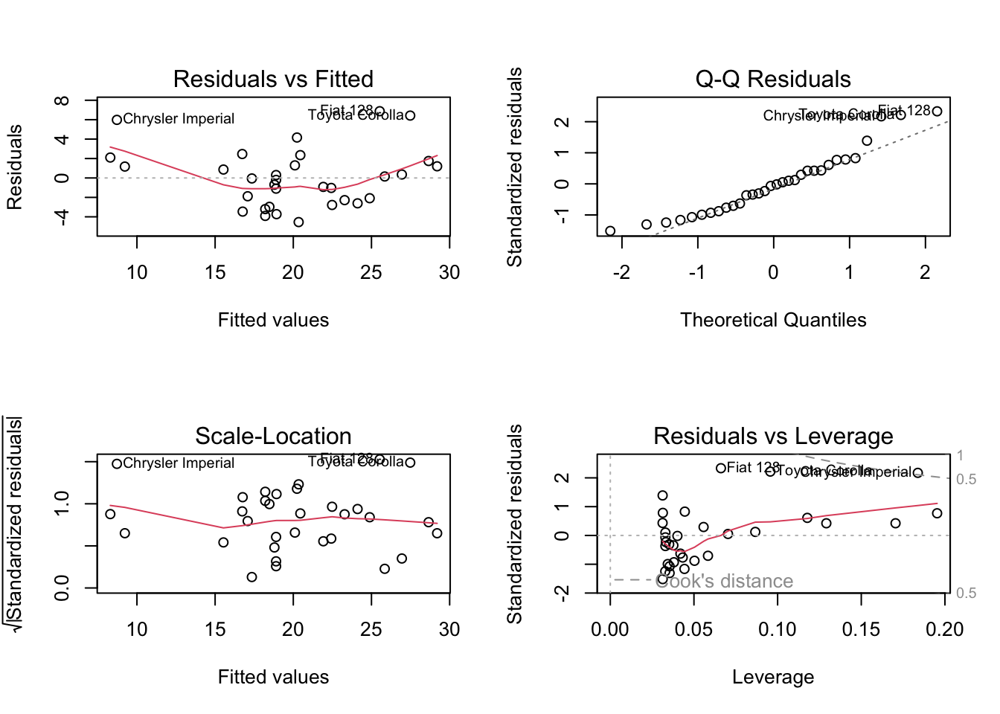
Explications des quatre graphiques diagnostiques :
Residuals vs Fitted : Ce graphique montre si les résidus (la distance entre les valeurs modélisées et observées) présentent des tendances non linéaires. Il peut y avoir une relation non linéaire entre les variables explicatives x et une variable expliquée y, et le schéma peut apparaître dans ce graphique si le modèle ne capture pas la relation non linéaire. Si vous trouvez des résidus plus ou moins uniformément répartis (approximés par la ligne rouge) autour de la ligne horizontale en pointillés sans tendances distinctes, c’est une bonne indication que vous n’avez pas de relations non linéaires.
Q-Q Residuals : Ce graphique montre si les résidus (les points) suivent une loi normale. Les résidus se situent-ils plus ou moins sur la ligne droite diagonale en pointillés ou s’en écartent-ils fortement ? C’est une bonne chose si les résidus sont bien alignés sur la ligne droite en pointillés.
Scale-Location : Ce graphique affiche les valeurs ajustées d’un modèle de régression sur l’axe des abscisses et la racine carrée des résidus standardisés sur l’axe des ordonnées. C’est ainsi que vous pouvez vérifier l’hypothèse de variance égale (homoscédasticité). C’est une bonne chose si vous voyez une ligne rouge plus ou moins horizontale avec des points répartis de manière égale (au hasard) autour d’elle.
Residuals vs Leverage : Ce graphique permet d’identifier les valeurs aberrantes influentes (valeurs extrêmes) dans les données qui peuvent affecter le modèle de régression linéaire. Toutes les valeurs aberrantes ne sont pas nécessairement influentes ; certaines peuvent ne pas avoir d’impact significatif sur le modèle de régression, ce qui signifie que les résultats de l’analyse de régression restent similaires, que ces cas soient inclus ou exclus. Cependant, certaines valeurs aberrantes peuvent avoir une grande influence et modifier les résultats si elles sont exclues, car elles ne s’alignent pas sur la tendance générale. Dans ce graphique, nous nous concentrons sur les valeurs aberrantes situées dans les coins supérieurs ou inférieurs droits, en dehors des lignes pointillées, qui indiquent des scores élevés de « distance de Cook ». Ces cas ont un impact significatif sur les résultats de la régression et doivent être notés.
En examinant ces graphiques de diagnostic, nous pouvons évaluer si les hypothèses du modèle de régression linéaire sont satisfaites, telles que l’indépendance des résidus, l’homoscédasticité, la linéarité et la normalité des résidus.
Si les graphiques de diagnostic montrent que les hypothèses ne sont pas satisfaites, cela peut indiquer que le modèle n’est pas adéquat et qu’une transformation des données ou une sélection de variables différente peut être nécessaire.
Dans le cas spécifique du modèle de régression modele_1, qui modélise mpg ~ wt dans le jeu de données mtcars, les graphique de diagnostic sont tout à fait acceptable.
Exemple 2 : La régression linéaire multiple avec mtcars
Pouvons-nous encore améliorer modele_1 qui prédit mpg dans le jeu de données mtcars ? Une possibilité évidente est d’inclure d’autres variables x, en plus de wt, dans notre modèle de régression pour prédire mpg.
En d’autres termes, nous devrions effectuer une régression linéaire multiple !
Si nous vérifions à nouveau les variables de mtcars (par exemple, avec ?mtcars), une autre variable nous saute aux yeux qui pourrait avoir un impact sur mpg : la variable hp, qui indique la puissance brute en chevaux des voitures.
Nous pouvons raisonnablement supposer une relation causale : que les voitures avec plus de chevaux, c’est-à-dire avec des moteurs plus puissants, consomment plus de mpg que les voitures avec moins de hp.
# Ajuster un modèle de régression linéaire multiple avec
# mpg comme variable dépendante et wt et hp comme variables
# indépendantes
modele_2 <- lm(mpg ~ wt + hp, data = mtcars)
# Afficher le résumé du modèle que nous pouvons interpréter
summary(modele_2)
Call:
lm(formula = mpg ~ wt + hp, data = mtcars)
Residuals:
Min 1Q Median 3Q Max
-3.941 -1.600 -0.182 1.050 5.854
Coefficients:
Estimate Std. Error t value Pr(>|t|)
(Intercept) 37.22727 1.59879 23.285 < 0.0000000000000002 ***
wt -3.87783 0.63273 -6.129 0.00000112 ***
hp -0.03177 0.00903 -3.519 0.00145 **
---
Signif. codes: 0 '***' 0.001 '**' 0.01 '*' 0.05 '.' 0.1 ' ' 1
Residual standard error: 2.593 on 29 degrees of freedom
Multiple R-squared: 0.8268, Adjusted R-squared: 0.8148
F-statistic: 69.21 on 2 and 29 DF, p-value: 0.000000000009109# Afficher les graphiques de diagnostic
par(mfrow = c(2, 2))
plot(modele_2)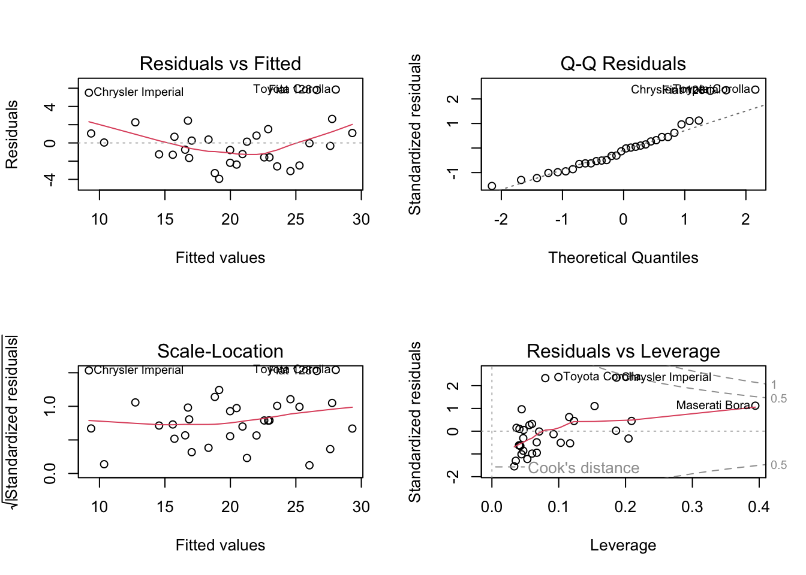
Les résultats montrent qu’en effet, la puissance en chevaux hp a également un effet négatif sur mpg. La valeur p de hp indique un effet significatif au niveau de 1% (mais pas au niveau de 0,1% comme pour wt).
Le R-carré de notre modèle a également augmenté pour atteindre 82,68% (R-carré ajusté à 81,48%), ce qui est une valeur très élevée. Cela signifie que modele_2 peut effectivement expliquer une plus grande partie de la variabilité de mpg que modele_1. Néanmoins, parce qu’il utilise plus de variables, le modele_2 est aussi plus complexe. Cela se traduit par une statistique F (69.21) plus faible pour modele_2 que pour modele_1 (statistique F = 91,38).
Une question est alors : comment choisir le meilleur modèle de regression ?
Exemple 3 : La régression par étape avec mtcars
Une possible solution est d’utiliser ce qu’on appelle la régression par étape. C’est une méthode d’ajustement des modèles de régression dans laquelle le choix des variables prédictives est effectué par une procédure automatique.
Dans R, la régression par étapes peut être effectuée à l’aide de différentes approches, notamment la fonction step(), qui base ses sélections sur les valeurs AIC (critère d’information d’Akaike).
Pour notre exemple de régression par étapes, nous allons prédire
mpgen utilisant toutes les autres variables de l’ensemble de donnéesmtcars.A partir de ce « modèle complet », nous utiliserons ensuite une procédure qui éliminera les variables qui ne contribuent pas de manière significative à expliquer la variation de
mpg.La procédure continuera à éliminer des variables jusqu’à ce qu’un optimum soit atteint, c’est-à-dire un modèle qui a un pouvoir explicatif suffisant (montré par sa valeur R-carré) mais qui n’est pas trop complexe (ou suradapté) avec trop de variables (ceci est décidé sur la base de la métrique AIC, qui va être minimisée par la procédure).
La bonne nouvelle, c’est que R produira le modèle optimal pour nous !
Voyons comment ça marche avec du code R !
# Il faut éventuellement d'abord installer le paquet stats
# install.packages('stats')
library(stats)
# Créons le modèle complet avec toutes le variables de
# mtcars (avec ~ .)
full_model <- lm(mpg ~ ., data = mtcars)
summary(full_model)
Call:
lm(formula = mpg ~ ., data = mtcars)
Residuals:
Min 1Q Median 3Q Max
-3.4506 -1.6044 -0.1196 1.2193 4.6271
Coefficients:
Estimate Std. Error t value Pr(>|t|)
(Intercept) 12.30337 18.71788 0.657 0.5181
cyl -0.11144 1.04502 -0.107 0.9161
disp 0.01334 0.01786 0.747 0.4635
hp -0.02148 0.02177 -0.987 0.3350
drat 0.78711 1.63537 0.481 0.6353
wt -3.71530 1.89441 -1.961 0.0633 .
qsec 0.82104 0.73084 1.123 0.2739
vs 0.31776 2.10451 0.151 0.8814
am 2.52023 2.05665 1.225 0.2340
gear 0.65541 1.49326 0.439 0.6652
carb -0.19942 0.82875 -0.241 0.8122
---
Signif. codes: 0 '***' 0.001 '**' 0.01 '*' 0.05 '.' 0.1 ' ' 1
Residual standard error: 2.65 on 21 degrees of freedom
Multiple R-squared: 0.869, Adjusted R-squared: 0.8066
F-statistic: 13.93 on 10 and 21 DF, p-value: 0.0000003793# Nous utilisons la fonction step(), en commençant par le
# modèle complet et en permettant à la fois la sélection en
# amont et l'élimination en aval sur la base de l'AIC (avec
# direction = 'both')
stepwise_model <- step(full_model, direction = "both")Start: AIC=70.9
mpg ~ cyl + disp + hp + drat + wt + qsec + vs + am + gear + carb
Df Sum of Sq RSS AIC
- cyl 1 0.0799 147.57 68.915
- vs 1 0.1601 147.66 68.932
- carb 1 0.4067 147.90 68.986
- gear 1 1.3531 148.85 69.190
- drat 1 1.6270 149.12 69.249
- disp 1 3.9167 151.41 69.736
- hp 1 6.8399 154.33 70.348
- qsec 1 8.8641 156.36 70.765
<none> 147.49 70.898
- am 1 10.5467 158.04 71.108
- wt 1 27.0144 174.51 74.280
Step: AIC=68.92
mpg ~ disp + hp + drat + wt + qsec + vs + am + gear + carb
Df Sum of Sq RSS AIC
- vs 1 0.2685 147.84 66.973
- carb 1 0.5201 148.09 67.028
- gear 1 1.8211 149.40 67.308
- drat 1 1.9826 149.56 67.342
- disp 1 3.9009 151.47 67.750
- hp 1 7.3632 154.94 68.473
<none> 147.57 68.915
- qsec 1 10.0933 157.67 69.032
- am 1 11.8359 159.41 69.384
+ cyl 1 0.0799 147.49 70.898
- wt 1 27.0280 174.60 72.297
Step: AIC=66.97
mpg ~ disp + hp + drat + wt + qsec + am + gear + carb
Df Sum of Sq RSS AIC
- carb 1 0.6855 148.53 65.121
- gear 1 2.1437 149.99 65.434
- drat 1 2.2139 150.06 65.449
- disp 1 3.6467 151.49 65.753
- hp 1 7.1060 154.95 66.475
<none> 147.84 66.973
- am 1 11.5694 159.41 67.384
- qsec 1 15.6830 163.53 68.200
+ vs 1 0.2685 147.57 68.915
+ cyl 1 0.1883 147.66 68.932
- wt 1 27.3799 175.22 70.410
Step: AIC=65.12
mpg ~ disp + hp + drat + wt + qsec + am + gear
Df Sum of Sq RSS AIC
- gear 1 1.565 150.09 63.457
- drat 1 1.932 150.46 63.535
<none> 148.53 65.121
- disp 1 10.110 158.64 65.229
- am 1 12.323 160.85 65.672
- hp 1 14.826 163.35 66.166
+ carb 1 0.685 147.84 66.973
+ vs 1 0.434 148.09 67.028
+ cyl 1 0.414 148.11 67.032
- qsec 1 26.408 174.94 68.358
- wt 1 69.127 217.66 75.350
Step: AIC=63.46
mpg ~ disp + hp + drat + wt + qsec + am
Df Sum of Sq RSS AIC
- drat 1 3.345 153.44 62.162
- disp 1 8.545 158.64 63.229
<none> 150.09 63.457
- hp 1 13.285 163.38 64.171
+ gear 1 1.565 148.53 65.121
+ cyl 1 1.003 149.09 65.242
+ vs 1 0.645 149.45 65.319
+ carb 1 0.107 149.99 65.434
- am 1 20.036 170.13 65.466
- qsec 1 25.574 175.67 66.491
- wt 1 67.572 217.66 73.351
Step: AIC=62.16
mpg ~ disp + hp + wt + qsec + am
Df Sum of Sq RSS AIC
- disp 1 6.629 160.07 61.515
<none> 153.44 62.162
- hp 1 12.572 166.01 62.682
+ drat 1 3.345 150.09 63.457
+ gear 1 2.977 150.46 63.535
+ cyl 1 2.447 150.99 63.648
+ vs 1 1.121 152.32 63.927
+ carb 1 0.011 153.43 64.160
- qsec 1 26.470 179.91 65.255
- am 1 32.198 185.63 66.258
- wt 1 69.043 222.48 72.051
Step: AIC=61.52
mpg ~ hp + wt + qsec + am
Df Sum of Sq RSS AIC
- hp 1 9.219 169.29 61.307
<none> 160.07 61.515
+ disp 1 6.629 153.44 62.162
+ carb 1 3.227 156.84 62.864
+ drat 1 1.428 158.64 63.229
- qsec 1 20.225 180.29 63.323
+ cyl 1 0.249 159.82 63.465
+ vs 1 0.249 159.82 63.466
+ gear 1 0.171 159.90 63.481
- am 1 25.993 186.06 64.331
- wt 1 78.494 238.56 72.284
Step: AIC=61.31
mpg ~ wt + qsec + am
Df Sum of Sq RSS AIC
<none> 169.29 61.307
+ hp 1 9.219 160.07 61.515
+ carb 1 8.036 161.25 61.751
+ disp 1 3.276 166.01 62.682
+ cyl 1 1.501 167.78 63.022
+ drat 1 1.400 167.89 63.042
+ gear 1 0.123 169.16 63.284
+ vs 1 0.000 169.29 63.307
- am 1 26.178 195.46 63.908
- qsec 1 109.034 278.32 75.217
- wt 1 183.347 352.63 82.790Voici comment la régression par étape choisit le meilleur modèle :
- AIC le plus faible : le modèle ayant l’AIC le plus faible est généralement préféré car il suggère un meilleur ajustement du modèle compte tenu du nombre de variables explicatives utilisées. L’AIC permet d’équilibrer l’adéquation et la complexité du modèle. Dans notre exemple, le modèle optimal retenu est donc
mpg ~ wt + qsec + am.
Après avoir exécuté la régression par étape, le résumé de stepwise_model affiche les coefficients pour chaque variable explicative ainsi que des statistiques telles que le R-carré, la statistique F et les valeurs p pour les variables explicatives.
summary(stepwise_model)
Call:
lm(formula = mpg ~ wt + qsec + am, data = mtcars)
Residuals:
Min 1Q Median 3Q Max
-3.4811 -1.5555 -0.7257 1.4110 4.6610
Coefficients:
Estimate Std. Error t value Pr(>|t|)
(Intercept) 9.6178 6.9596 1.382 0.177915
wt -3.9165 0.7112 -5.507 0.00000695 ***
qsec 1.2259 0.2887 4.247 0.000216 ***
am 2.9358 1.4109 2.081 0.046716 *
---
Signif. codes: 0 '***' 0.001 '**' 0.01 '*' 0.05 '.' 0.1 ' ' 1
Residual standard error: 2.459 on 28 degrees of freedom
Multiple R-squared: 0.8497, Adjusted R-squared: 0.8336
F-statistic: 52.75 on 3 and 28 DF, p-value: 0.0000000000121Graphiques de diagnostic : Après avoir choisi un modèle, il est utile de vérifier les graphiques des résidus pour valider les hypothèses d’homoscédasticité, de normalité et d’indépendance des résidus :
par(mfrow = c(2, 2))
plot(stepwise_model)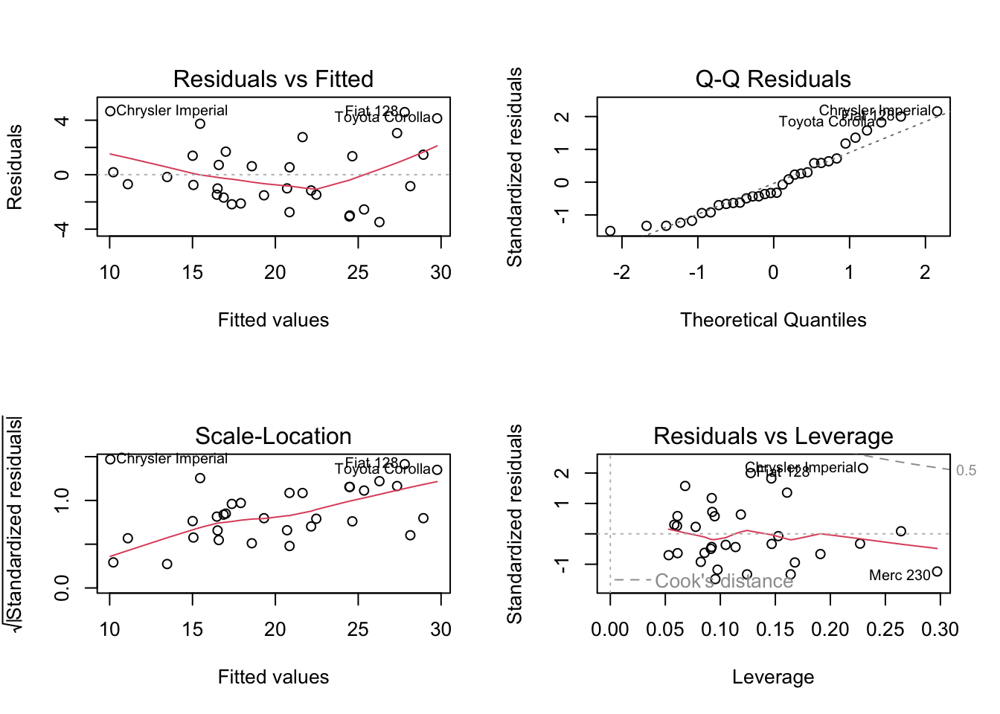
Les graphiques de diagnostic sont acceptable pour notre modèle !
Ressources pour aller plus loin
Je vous recommande de jeter un coup d’œil à d’autres vidéos YouTube de StatQuest qui expliquent clairement les concepts statistiques, dont beaucoup sont très pertinents pour les sciences sociales et pour vos études en général, p. ex. :
- Linear Regression, Clearly Explained!!!
- Multiple Regression in R, Step-by-Step!!!
- The Normal Distribution, Clearly Explained!!!
- p-values: What they are and how to interpret them
- R-squared, Clearly Explained!!!
- Hypothesis Testing and The Null Hypothesis, Clearly Explained!!!
- Logistic Regression in R, Clearly Explained!!!
Devoir pour Session 13 (Problem Set 4) et infos sur la session 14
- La semaine prochaine, les 22 et 23 mai, le Problem Set 4 aura lieu pendant la session 13. Son contenu sera axé sur les statistiques descriptives et inférentielles (contenu des sessions 10, 11 et 12).
- Attention, la session 14 du 29 et 30 mai 2024 sera une session en auto-apprentissage ! Il n’y a donc pas d’enseignement en classe à Fribourg.La session 14 vous fournira surtout des ressources R plus avancées que vous pourrez utiliser plus tard, par exemple pendant votre travail de bachelor, pour vos analyses empiriques.
Session 13 (Problem Set 4)
Les résultats du Problem Set 4 (bonnes réponses, échelle des notes) du SP 2025 sont accéssibles sur la page Moodle de l’exercice.
Important
Spécificité du Problem Set 4 : les étudiant-e-s qui ont répondu dans les temps au questionnaire sur l’utilisation des médias se voient attribuer 2 points bonus supplémentaires à leur score dans le Problem Set 4. Ces 2 points bonus, obtenus par une majorité d’étudiant-e-s, sont pris en compte pour le calcul final de la note du cours (ils ne sont toutefois pas comptabilisés dans l’histogramme ci-dessous).
Voici l’histogramme des points obtenus par n = 56 étudiant-e-s qui ont participé au Problem Set 4 le 22 et 28 mai 2025 dans trois groupes (A, B et C).
Le nombre maximal de points était de 20, il fallait 10 pour passer le test.
La moyenne des points obtenus était de 11. (note = 4.25).
39 étudiant-e-s (69.6%) ont réussi Problem Set 4.
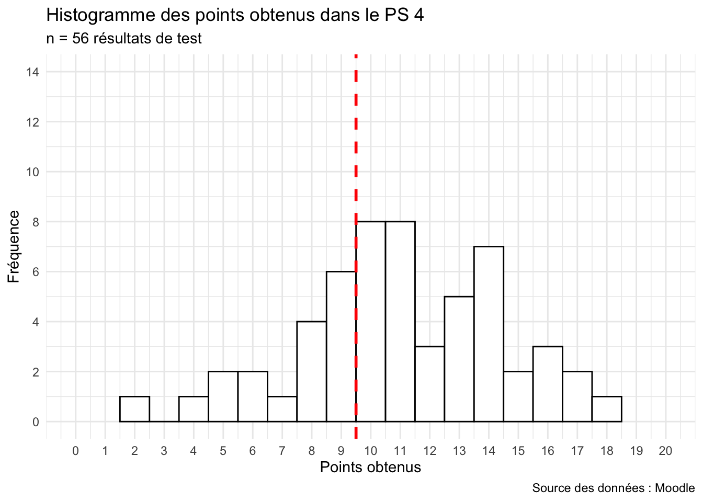
Session 14 (en auto-apprentissage)
Continuez à améliorer votre maîtrise de R en sciences de la communication
Voici des étapes clés pour devenir un·e utilisateur·trice avancé·e de R.
Pratique régulière
Il est essentiel de pratiquer régulièrement pour devenir plus à l’aise avec R.
Intégrez l’utilisation de R dans vos projets académiques et personnels autant que possible.
Application académique
Demandez aux enseignant-e-s d’autres cours si vous pouvez utiliser R dans leurs cours.
Proposez d’utiliser R pour l’analyse de données dans vos travaux de séminaire et de Bachelor.
Collaborez avec d’autres étudiant-e-s utilisateurs·trices de R sur des projets de recherche en groupe à l’université.
MOOC
Pour répéter et approfondir vos connaissances en R, des MOOC (massive open online courses) sont disponibles gratuitement en tant qu’auditeur/auditrice (après inscription) :
Datacamp: Introduction to R (4h): https://www.datacamp.com/courses/free-introduction-to-r
Edx (Harvard): R Basics (8-16h): https://www.edx.org/course/data-science-r-basics
Edx (Stanford): R Programming Fundamentals (12-18h): https://www.edx.org/course/r-programming-fundamentals
Coursera: Data Analysis with R Programming (37h): https://www.coursera.org/learn/data-analysis-r
Udacity: Data Analysis with R (2 months): https://www.udacity.com/course/data-analysis-with-r--ud651
Si vous payez entre 50 et 200 USD, il est également possible de valider de tels MOOC avec un certificat. Ces certificats peuvent notamment être reliés à LinkedIn et y être affichés.
Tutoriels sur Youtube
Il existe également de nombreux tutoriels R sur Youtube. Il peut s’agir de cours R complets de différents niveaux ou de courtes vidéos montrant comment utiliser une technique R particulière (par ex. un certain type de visualisation).
Introduction à R et RStudio (ft. mon chat radioactif) : Tutoriel facile à comprendre en français d’environ 1h par le chercheur belge Nathan Uyttendaele (Il aborde certains aspects et logiciels que nous ne traitons pas dans notre cours. Mais dans l’ensemble, c’est une bonne introduction à R et RStudio pour les débutants) : https://www.youtube.com/watch?v=sav3Mbe0_DM
Introduction to R & RStudio and other videos on Data Analysis with R by Wouter van Atteveldt (computational communication scientist, VU Amsterdam) : https://www.youtube.com/watch?v=PVhZD5MINYM&list=PLjXODJ_lGN_V2ntvV2CN_GvzZ6Qm5km9L
Boot Camp of the Summer Institute in Computational Social Science, SICSS, taught by Chris Bail from Duke University (multiple videos, social science focus) : https://sicss.io/boot_camp/
R Programming Tutorial: Learn the basics of statistical computing (by Barton Poulson, 2h comprehensive general R introduction) : https://www.youtube.com/watch?v=_V8eKsto3Ug
Intelligence artificielle pour coder
Utiliser l’intelligence artificielle générative pour coder. Jouez avec, demandez simplement du code R pour faire certaines choses. Ces interfaces peuvent vous fournir du code prêt à l’emploi, que vous pouvez copier et coller directement dans RStudio !
Communautés en Ligne
Participez à des communautés en ligne pour rester connecté·e avec les dernières tendances et partager vos connaissances :
- GitHub : Le réseau social des développeurs
- Stackoverflow : Un forum d’entraide pour programmeurs
- Kaggle : Une plateforme pour le machine learning et l’analyse de données
Lecture spécialisée
Approfondissez vos connaissances en R avec des livres numérique open-source :
R for Data Science [anglais] Une référence bien établie en sciences des données avec R par Wickham & Grolemund (2023, 2e éd.) : https://r4ds.hadley.nz/
R Cookbook [anglais] Référence établie pour l’introduction, les statistiques et les graphiques avec R par Long & Teetor (2019, 2e éd.) : https://rc2e.com/
R Graphics Cookbook [anglais] Ouvrage de référence pour concevoir des graphiques attrayants avec R (2022, 2e éd.), by Chang : https://r-graphics.org/
Introduction à la programmation R par Goulet (2016, 5e éd.) de l’Université Laval : https://cran.r-project.org/doc/contrib/Goulet_introduction_programmation_R.pdf
Valorisation des Compétences
- Mettez en avant vos compétences en programmation R dans votre CV et sur LinkedIn, notamment les certificats obtenus via des MOOCs.
Ces conseils vous aideront à utiliser efficacement R dans le domaine des sciences de la communication et à développer une expertise approfondie.
Au revoir et à bientôt
Ainsi se termine ce cours et donc l’introduction à R dans le cadre des Exercices Méthodes II du Bachelor en sciences de la communication à l’Université de Fribourg !
J’espère que vous avez appris beaucoup de choses, notamment des techniquesqui vous seront utiles pour la suite de vos études ! 💪 😎
Et n’oubliez pas qu’au final, il faut surtout faire preuve de bon sens pour comprendre comment des compétences comme la programmation R peuvent être utilisées au mieux pour étudier des phénomènes intéressants en sciences de la communication ! 😄
Julian Maitra, Fribourg, 30 mai 2024.
FIN DU COURS
Reuse
MIT